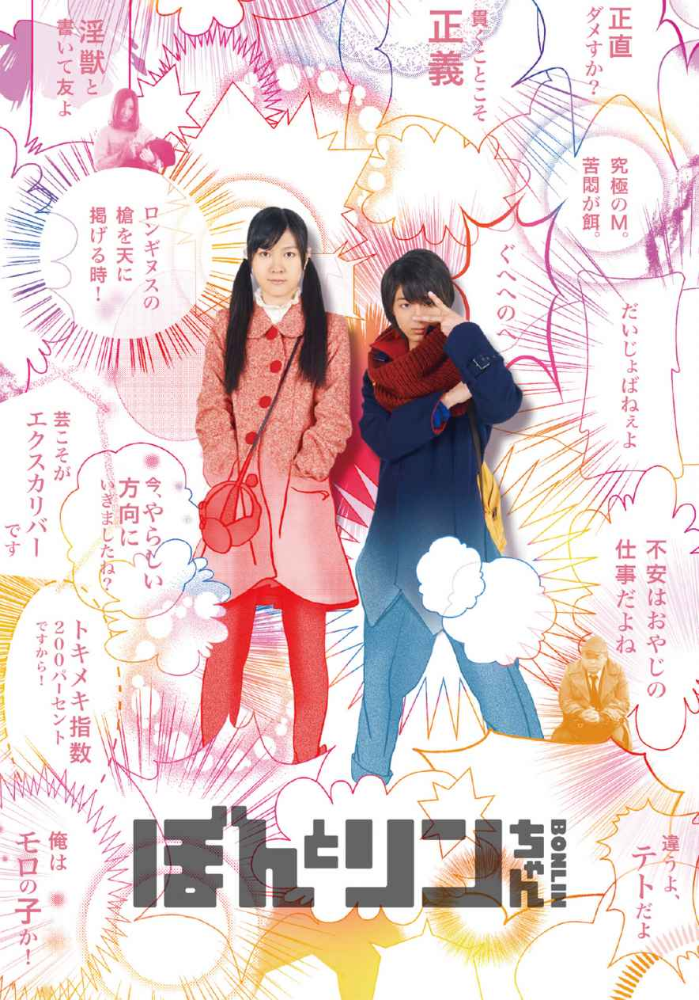
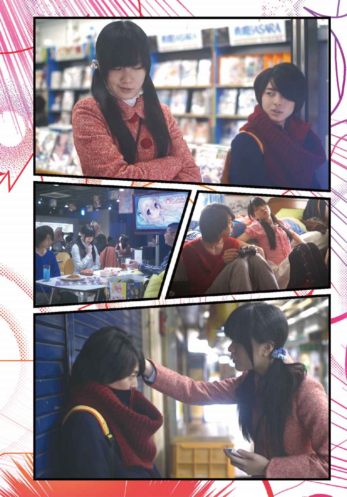
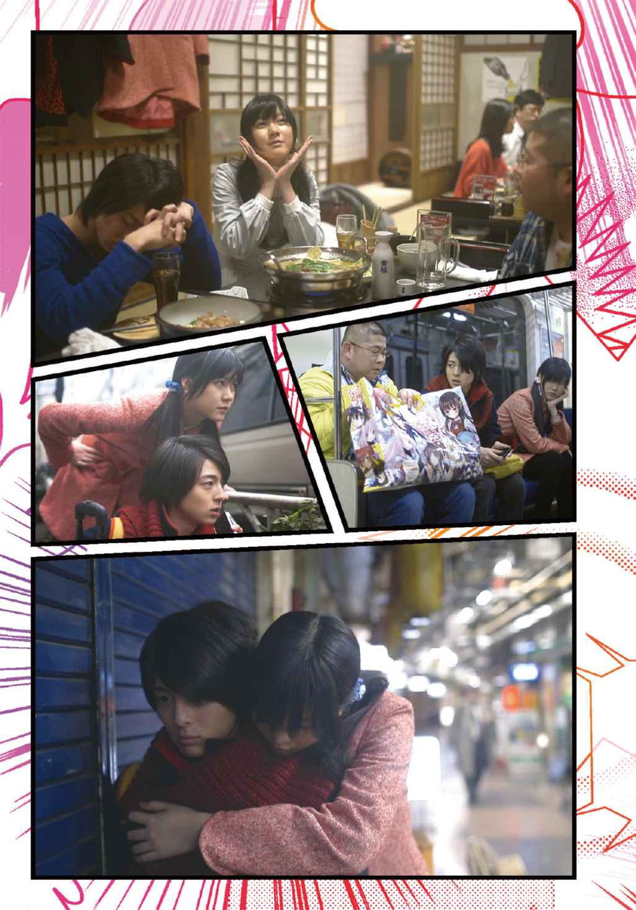
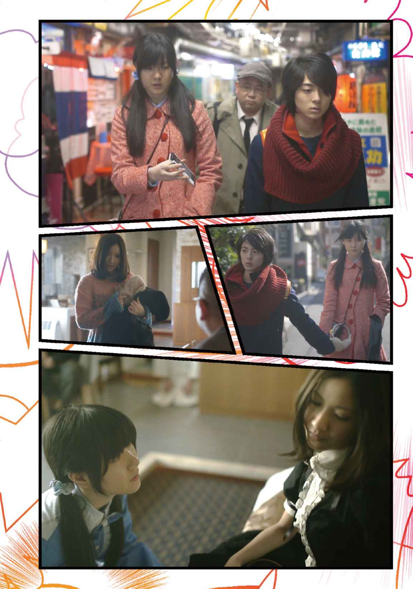
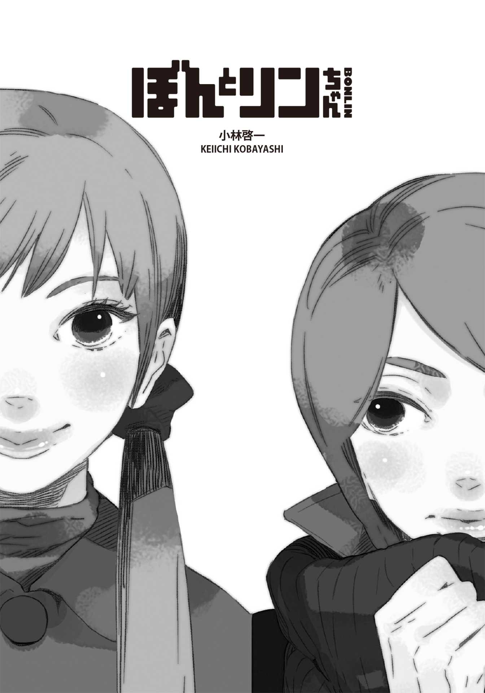

| ＢＯＮＬＩＮ ぼんとリンちゃん (竹書房文庫) | |
| 小林啓一 & 星野リリィ | |
| (2014) | |




カバーイラスト：星野リリイ
©ぼんとリンちゃん／©小林啓一
主な登場人物
ぼん【本名＊四谷夏子】......
16 歳と62 ヵ月を自称する女子大生。
ＢＬの同人誌で妄想するのが大好きで、現実に異性と交際するのは苦手。
リン【本名＊友田麟太郎】......
現在浪人中のアニオタ、18 歳。ぼんとは幼なじみ。
斉藤みゆ......
ぼんの親友。〝肉便器ちゃん〟というありがたくないアダ名をつけられる。
べび【会田直人】......
ぼんのネットゲーム仲間。42 歳の素人童貞。エロゲー好きのサラリーマン。

スメルジャコフは嫌いじゃないぜ
ぼん
とりあえず空調の音がよく響き、秒針は怠惰で緩慢な速度を刻んでいる。この空間に佇 んでいると必ず起こる現象だ。だが草 壁 と佐 条 にとってはむしろ好都合だろう。なぜなら私の目の前で豚しゃぶカレーを食べているこの瘦せ気味の二人の男子は恋人同士だからだ。
眼鏡をかけていて欲しかったがそこは泣くことにして黒髪の佐条が、茶髪（こちらも本当は金髪でいて欲しい）の草壁に唇を奪われたのが三週間前。佐条に戸惑いはあったものの、草壁の積極的な態度はカレーにソースをかけるように二人の仲を濃いものにしていった。
彼らは今世間にその関係を悟られないように静かにカレーを食べている。十二席しかない横並びのカウンターだけの店内の一番奥の二席が彼らの指定席だ。なるべく他のお客が来ない午後三時前の時間をいつも狙うかのようにやってくる。当たり前の話だが、誘うのはいつも草壁からだ。
「本当はカレーなんか好きじゃない。なのに草壁はいつもカレー屋ばかりだ」
佐条の頰がぷくり。草壁はカレーが好物なのだ。
「いつもって、たまにじゃんか」
「そんなことない！」
「佐条と食べるもんだったら何でもうまいけどね、俺はさ」
「もう、またそれだ」
「つか、お前もこないだ、おいしいおいしいって言ってたじゃんか。どうしたんだよ、いきなり」
佐条は急にもじもじおどおどしだした。
「だ、だってカレー食べた後だと、その、あの」
「なんだよ、言ってみ」
草壁の笑みには柔らかな悪意を感じる。この表情に佐条はいつも混乱する。言いたくもないのに勝手に口が動いてしまう。
「チ、チューだよ！」
頰を赤らめる佐条。カァという擬音語が顔中に張りついている。
「カ、カレー味のチューなんかしてたら、いつか嫌われる！」
「バカだな、お前は」草壁は佐条の頭を無造作にごしごしと撫でる。「だから同じもん食うんだろ？ 俺はお前といつも同じカレーを頼んでるんだぜ。つか、それで怒ってんの？」
「う、うるさい！」
「後でラムネおごってやるから機嫌直せよ」
「ずるいよ、そんなの」
「いらないの？」
「い、いる」
佐条はかわいいのう。中 村 明 日 美 子 先生の『同級生』のキャラ設定から大きくかけ離れてしまった（ま、元々無理があった）が店内にいるこの高校生二人は意外と使える。いける。
このバイトは、たいして仲良くもない大学の友達、勝手に〝モブＣ〟と名付けているそいつから「一日だけバイト出てくれない？ お願い！ 楽だし簡単だから！」と言うのでやってみた。話の通り楽だし簡単だった。モブＣにそのことを報告したら「まじ？ ちょうど辞めようと思ってたし、代わりにやる？ そしたらあたしもすんなり辞められるし」と言われ、時給もそこそこいいし、そのままやることにした。
お客があまりいないこの時間帯。私は客席の半分のスペースしかないカウンターのレジ前で棒立ちになり、どうすれば早く時間が経つかを考えていた。今日でここでのバイトは２週間目の５回目だ。今まではカレー一皿分のご飯粒を数えて時間を加速させる作戦を決行していたが前回数えきってしまった。七千二百二十八粒。意味ありげな数字だが全く意味はないだろう。無意味なものに意味付けをする程、私は厨二ではない。また予想以上にハードだったのでもうやりたくない。ついでに言うとカレーの匂いにもまだ慣れていない。そこまで好きな食べ物でもないし、むしろあんまり好きじゃない。てか、まじ暇な時間帯は苦痛だ。ま、忙しいときも苦痛だけど。あー、みゆちゃん、マジでこのバイトやらないかな。そしたら二人でいろいろ楽しくできるのに。みゆちゃんとのＢＬ談義で時間が加速すれば、早く終わって家でゲームができる。早くゲームやりたい。今日は何をやろうかな。
店内は相変わらず草壁と佐条の高校生カップルだけだ。あぁ、空調の音がより一層大きくなってきた。店内の音楽もアニソンとかにしてくれれば、まだ耳に入ってくるのに。つか、なんか面白い会話のひとつでもしろよ、童貞の青年ども。退屈じゃねーか。ネタくれよ、ネタ。苦悶すぎるな、この環境。
こいつらが帰ったら店長に仮病使って早く上がらせてもらおうかな、とぼんやり考える。だが店長は今銀行に行っている。はやく帰ってこないかな、あのおっさん。つまらん。本気でつまらん。私はあそこがぴんこ立ちのホモ男子（仮）二名にバレないように大きく欠伸 をし、再び奴らを観察し始めた。そしたら、ひとつ大きな発見をしてしまった。
横並びに座っている彼らの肘が時折当たっているのだ。
草壁改めイリョーシャ（もうこれ以上中村先生には迷惑をかけられない）は、アリョーシャの右隣に座ることを好んだ。イリョーシャの利き腕は左手。アリョーシャの利き腕は右手。彼の右隣に座れば、双方の肘が当たる仕組みになっているのだ。肘があたる度にアリョーシャはイリョーシャの方を見て、「よく当たるね」「また当たっちゃったね」とさも言っているように微笑みかける。その表情こそイリョーシャにとって御馳走だった。私、四谷夏子にとっての梨のようなものだ。
おそらくアリョーシャは彼がいつでも右隣に座ることに気づいていない。これはイリョーシャだけの密かな楽しみなのだ。だからよくカウンターの店を選んだ。必然的に右隣に座れるように。
ちなみにこのキャラ設定は昨日の大学の講義で出た『カラマーゾフの兄弟』から拝借した。ああいう系は結構いろいろ変換できるのだ。そういう意味で読む価値はある。なんつって。本当はスメルジャコフを参加させたかったが、アリョーシャと血縁関係なんでね。私は近親相姦とスカトロをＮＧとしている。
もともとイリョーシャの利き腕は右手だったが一年かけて左手に変えた。そのきっかけは、高校一年時の秋の体育祭だった。そのときイリョーシャは右腕に包帯を巻いていた。通学の途中に自転車から落ち──いや馬術部の彼は秋の大会前にジャンプに失敗して落馬し、右腕を骨折していたからだ。馬術部の部員は大会や体育祭の部活動対抗リレーに出場できないことをネチネチと責めた。とうてい体育祭なんかに参加できる精神状態ではなかったが、馬術部の先輩に「写真ぐらい撮れるだろ」と言われた。不快だったのでシカトしていたら、「ご、ごめん！」「た、頼む！ 俺の好きな子の体操服姿を激写してくれ！ お前にしか頼めない」と土下座で懇願されたので、部員が自分をあまり責めないように取り計らうという約束をつけて了解した。攻めの人は攻められると弱い。彼は生粋の攻めだからだ。そう考えると受けの方が弱点はないことになる。あれ、待てよ。よくＳには限界はない。Ｍには肉体という限界があると言うな。ま、いいか。
だからイリョーシャにとって体育祭は退屈かつ不快かつ面倒なものになってしまった。当日、先輩から渡されたよくわからないメーカーのデジカメで指定された女子をこっそりと撮 しまくった。運動場を歩き回り、時には望遠で時には接写で様々なアングルからその女子を狙った。あまりにもその女子ばかり追っていると変態に思われるので、他の女子も撮った。特にヤリマンと噂されている女子の先輩を多めに撮った。やたらいやらしい身体をしているのだ。こっちの方がいいのに。先輩の趣味もあんまり良くないなと思いつつ、ある程度の枚数を重ねたので早退することに決めた。盗撮というのは引き際が肝心。やったことはないけど、たぶんそうだ。
クラスの担任に腕が痛んできたと噓の報告をし、教室へと足を運んだ。イリョーシャの教室は二階の一番奥にある。
彼は無人の学校を好んだ。休日の学校のそれではなく、今日のように全校生徒がどこか一堂に集められている状態での静まり返った校舎だ。そこに一人でいるとＳＦの主人公になった気がした。生徒達の荷物は各々の机の上にあるし、黒板の上の時計もカチカチと動いている。ついさっきまで人がいたという空気感が漂っているのだ。なのに無人。何かの事件で学校中の人達が一気にいなくなったか、自分だけがパラレルワールドに来てしまったかとかを考えると異常に興奮するのだ。ついでに言うと、私もこれは好き。
イリョーシャはしんと静まりかえった教室を覗 きまくった。誰もいないことを再確認しながら一室一室の空気を嗅ぎ、時には中にも入ってみた。
するとひとつの教室で窓辺に立つ男子生徒がいた。彼は松葉杖をつき、ぼんやりと運動場を見ている。どうやら同じ学年らしい。窓のカーテンがゆっくりと揺れ、日の光が彼の横顔の輪郭をほんのりと光らせている。イリョーシャは思わずシャッターを押した。彼は混乱した。どうして押してしまったのか。大好物のカレーを食べて落ち着きたかった。が、もっと複雑に混乱することになった。その生徒はイリョーシャの存在に気づいたらしく、振り向いたのだ。やばい。イリョーシャは、その場を立ち去ろうと咄 嗟 に思ったが、何故か彼に声をかけてしまった。
「き、君も見学？」
「うん。骨折しちゃってね」
「俺も骨折」
「知ってる。馬術部のイリョーシャでしょ？」
「え？」
イリョーシャはなるべく動揺が顔に出ないように気をつけた。その生徒はそんなこともおかまいなしだ。
「もう一人、骨折している人がいるって聞いたから。君だったんだね、よろしくイリョーシャ」
彼は簡単に自己紹介した。名前はアリョーシャで最近引っ越してきたと。
「まだ学校にも慣れない上に骨折なんてバカだよね」
てへぺろとはにかむ。
う。くらった。イリョーシャはどうしていいかわからず思わず、今日撮った写真でも見ないかと提案し、ごまかした。
二人は窓にもたれかかり写真を眺めた。右腕を骨折しているイリョーシャの代わりに、アリョーシャがデジカメを操作した。アリョーシャはイリョーシャの左隣にいる。彼の息づかいがイリョーシャの心をくすぐる。俺はホモじゃない。そう頭に浮かぶ度に脳みそをフル回転させて女子の体操服姿で何度も上書きした。
イリョーシャはひたすら女子好きであることをアピールをした。このポーズがやらしいとか食い込みが最高とか。アリョーシャも「すげえ」とか「エロ！」とかを連発した。その度に肘が触れ合い、その度にイリョーシャはより強く「な、すげえだろ？ この先輩、エロいだろ。やりてえ」と言った。「うん」と笑顔で返すアリョーシャ。自分の混迷が悟られなかったことに安心した半面、写真の女子に嫉妬をしていた。顔が火照るのがわかる。喉が猛烈に乾いた。
「アリョーシャ、俺、早退するけど」
「あ、そうなんだ」
「一緒に帰ろうぜ」
「いや、でも、体育祭......」
「だよな」いや違う。「えー、いいじゃん！」いやいや、もっと違うだろ。うーん。あ！
「平気平気。ラムネおごってやるからさ」
「本当？ やった！」
よし！ 伏線回収したった。私はキメ顔で小さくガッツポーズをする。
体育祭のあの日からの一年間はイリョーシャにとって地獄であった。イリョーシャは日に日にアリョーシャに惹かれ、それを否定するようにアリョーシャをいじめた。そして、その度にラムネをおごった。自己を否定し本能に慌てる。突き放しては自ら近づいていく。俺は絶対にホモじゃない。ゲイじゃない。アリョーシャさえそばにいなければ。でも一緒にいたい。
アリョーシャはイリョーシャの行動に困惑した。普段はとても話やすく、一緒にいると楽しくて仕方が無いのに、いきなり豹 変 して自分を無視する。他の友達と仲良くすると怒鳴って怒り、謝るとラムネをおごってくれる。
三週間前、アリョーシャは我慢の限界に達し、イリョーシャを責めた。
「どうしてイリョーシャはいつもそうなんだ！ もう我慢の限界だよ！ 僕達は親友だろ！ なのにいつだって君はこうなんだ！」
アリョーシャは一方的に捲 し立てた。イリョーシャは無言でその姿を見つめている。彼は初めて見るアリョーシャの怒りの表情に萌えていたのだ。そして、おもむろにアリョーシャの口を自分の口で塞いだとき、ついに自分の気持ちを受け入れることができた。
「好きだ。俺はアリョーシャが好きなんだ」
「えっ」
顔が赤らむアリョーシャ。
「バ、バカ！ 僕はホモじゃない！ バカにすんな！」
イリョーシャはアリョーシャを壁に追いやり再び唇を奪った。アリョーシャは自分の身体の力が抜けていくのがよくわかった。自分もイリョーシャを求めていたのだ。ずっとこうしたかったのだ。二人はその日をさかいに付き合い始めた。
その二人が今、目の前にいる。色々な苦労があってやっと結ばれたと思うと豚しゃぶにチーズをつけてあげればよかったなと後悔した。と、同時に緊張してきた。この二人、いやらし過ぎる。動 悸 が早くなっていくのが感じ取れる。やべえー。まじ、やべえっす。
イリョーシャが席を立ち、アリョーシャも続いた。か、会計だ。こっちに来る！ 私はガチガチに緊張していくのを必死に軟化させようと試みた。小さい深呼吸を何度もし、レジを雑巾で拭き始めた。二人は私にすべてを悟られたと感じたのか、心無しか緊張した表情をして、ちらちらと私を見ながら、ゆっくりとレジの方に近づいてくる。私との距離がどんどん縮まっていく。やべえー。緊張してレジ打てねえー。
でも、ホッとした。二人は私の目の前を素通りした。そして急いで走っていった。アリョーシャの足も完治したみたいで本当に良かった。と、そこに店長が不信顔で帰ってきた。
「どうしたの？ 今のお客。なんか慌てて出て行ったけど」
「ええ、どうしたんでしょうね」私はあたたかな表情で店長に答えた。「料金払うのも忘れてるぐらい慌てていましたねえ。きっといろいろ事情があるんでしょうねえ、うんうん」
「はい？」
というわけで、十六歳と五十四ヵ月の夏、私はカレー屋をクビになった。
ふええ。
ハードボイルドな僕の気分
リン
「やれやれ」と僕は思った。しかし口には出さなかった。一度、ねえさんが素で「やれやれ」と言ったときに「うわ！ その台詞、リアルで聞くと思わなかったわ」と僕が言ったら、ねえさんはわなわなと手を震わせて、「村上春樹じゃいボケ！ このドリルちんこめが！」と激怒されたことがあったからだ。もし僕が口に出したら上から目線で色々言われるのはよくわかっている。
やっぱりねえさんはバイトをクビになった。予想通りだった。そして案の定、僕の部屋へとやってきて、カレー屋の営業方針や宣伝方法、店内のイメージ、立地条件、味、エプロンのダサさ等店への不満を早口で一気に捲し上げた。その後「レジ打ちが苦手だった」とか「お客のオーダーが憶えられない」「社会人になれないかもしれない」「社会的不適合者だ」と激しく落ち込んだ。結局のところ自分が悪いと。で、今しょぼしょぼとＰＳ３を起動させ、『リトルビッグプラネット』をやり始めた。ねえさんは時々、こうやって昔のゲームを引っ張り出してプレイする。こんなときにやらなくてもいいんじゃないかと思うが。まったくもって、やれやれだ。
僕はこう見えても浪人生だ。「こう見えても」ってのは、別に童顔だから幼く見えてどう見ても高校一年とか二年とかにしか見えないということではない。あ、それもあるかもしれないが、こうやってねえさんの相手をしているからだ。本当は受験勉強を爆裂にやっていなければならないのに。ま、でも、ねえさんはねえさんで僕が浪人になったときから気を使ってくれるみたいで、ゲームに付き合わされることはなくなった。だから本音を言うと、そこまでねえさんのことを邪魔だと思っていないし、日常的だから気にもしていない。そもそも僕の部屋のベットや勉強机、ラグ、空柄（っていても、青空に雲が浮かんでいるやつなので、正確に言うと雲柄だが）のカーテンに至までねえさんのお古だし。宅浪だし。自宅警備員のようなもんだし。はあ。
気になるのは今後のことだ。バイトがなくなって、暇を持て余すねえさんはきっとよからぬものにハマるに違いない。そして色々とその知識を永遠にと思える時間分を僕に話すだろう。それが結構つらい。僕にほとんど興味ない話だからだ。
とにかくよくハマる。最近はもはやＢＬになんら関係ないものにまでハマっている。前回は、漫画家の白土三平の作品群、その前がバケツプリンの製法、で、その前が幻獣というか空想の生き物、で、さらにその前が切り絵で、さらにさらにその前は......なんだか忘れた。そう言えば、深海魚や初音ミクにもハマったことがあった。それを通して人生観や存在そのものの意味だとか歴史に必ず話がいく。そうなるとそれは僕にとって勉強でしかなく、いっそ受験勉強に関係あるものにハマってくれないかなと思ったりもする。それかＢＬをもっと追求してもらうかだ。いや、それはもう日常的に追求しているからもう充分だし、これ以上いってしまうと「リンちゃん、お願い！ まじでホモになってみて！ で、私の目の前でイチャコラしてみて！」と言われかねないから逆に困る。ま、他のものに徐々に興味を持ってきた（受け攻めですべてを判断していた時期がつい最近まで続いていた）ということは、人間的に成長もしているのではないかと考えれば、このハマる現象も悪くないかな。ちなみに僕はホモとゲイの区別もつかないし、つくものなのかもわからない永遠のＢＬ初心者だ。ていうか、そうありたい。
僕がここに引っ越してきたのは小四になる春だった。幸か不幸か、ねえさんの家の目の前に引っ越してきた。だからねえさんとはかれこれ十年ぐらいの付き合いになる。
まず妹同士がすぐに仲良くなった。当時うちの妹もねえさんの妹の佐 和 子 ちゃんも新一年生だった。そういう新入生は必ず引率されるというか集団登校するものだ。同学年だし、毎日一緒に登校すれば高確立で仲良くなるのは当たり前。もともとの性格や相性もよかったのだろう、一週間も経たないうちに仲良くなった。家がすぐ前というのが一番の要因だと思うけど。
ねえさんのお父さんは子供用の写真スタジオを経営している。アニメキャラのコスプレを子供に着せて記念写真を撮る。当時からすごい人気で今も予約でいっぱいだそうだ。人気の秘密はコスプレキャラのバリエーションの豊富さだという。ディズニーのような定番は勿論、一年ごとに変わる美少女戦士的なものからうまい棒のあのドラえもんに似ているキャラまで揃 えていた。今はふなっしーやくまモン、ひこにゃん等のご当地ゆるキャラまで揃えてある。ちなみにそれらはねえさんのお母さんの手作りだ。権利関係とか大丈夫なのかと時々心配になるが、別にそれらを売っているわけじゃないから平気よとねえさんのお母さんは豪語している。
話が逸れてしまった。だから、ねえさんの家には古くなって人気がなくなってきたコスプレやグッズやアイテムなどが大量に置いてあった。妹たちはそういうコスプレ衣装でなりきって遊ぶのもたぶんすごく楽しかったのだろう、互いの家をしょっちゅう行き来した。そうなるともうすぐに家族ぐるみの付き合いになった。うちの両親は共働きということもあってか、妹は学校から帰ってくるとまずねえさんの家に行き、夕飯時に帰ってくる感じであった。そのときはまだねえさんのじいちゃんもいたし、結構頻繁にお菓子をくれたりしたから居心地も良かったのだろう。実際すごく良かった。僕もいつのまにか「じいちゃん」と呼んでいたし、孫のように扱ってくれた。ちなみに〝ねえさん〟という呼び方はこのときからだ。妹のくるみちゃんがそう呼んでいたので、必然的に僕もそう呼ぶようになったのだ。
その頃の僕は前の学校でうまくいってなかったこともあり、学校に行くのがすごく嫌だった。だから新学期で新しい学校になっても行かなかった。いわゆる不登校ってやつだ。
ある朝、ねえさんが僕を迎えにきた。
当時小六のねえさんは、うちの地区の集団登校の引率者だった。素晴らしい人格者だから選ばれたということではなく、単に小六の人が近所にねえさんしかいなかったからだ。ねえさんはすごく嫌がったというが、じいちゃんにいろいろ説明されて、責任感に火がつき、メラメラと異様に燃えていたらしい。じいちゃんはすごい。
「リンちゃん、一緒に学校行こう！ 私もあんまり好きじゃないけど、今からひきこもりのニート、ヒキニートはよくないよ。それに、もし学校に行くならすごくいいものを見せてあげる。だから行こう！」
小学生相手にニートって。その頃から、ねえさんは身長がデカく威圧感もあったが、その「すごくいいもの」が気になった。僕はすんなり集団登校の仲間入りをすることになった。僕のこういうものですぐ釣られる 癖は直した方がいいと思っている。
学校に行った当初、いじめられもしたが、じいちゃんのアドバイスのおかげもあって不登校にはならなくなった。だから今考えると幸か不幸かで言うと総合的に幸だ。
「すごくいいもの」はすぐに教えてくれた。パソコンの画面を僕に向け、よくあるコピペのように「ウエルカム、トゥー、アンダーグラウンド」と僕の耳元で囁 いた。それはネットのサイトで『２ちゃんねる』だった。「何これ？」と僕が聞くと「やばい奴らの集会所みたいなものだよ」とこれまたコピペまんまの台詞で教えてくれた。
「ま、こいつらもやばいけど、正直私達はもっとやばい」と言い、『もなちゃっと』という２ちゃんのアスキーアートを使ってチャットをするサイトを教えてくれた。そこではハンドルネームでチャットをし、〝組長〟〝暗殺部隊ささの〟〝超人アクア〟とかよくわからない人達の名前があって、ねえさんが「おつ」と入力すると一斉に「おつ」と返してきた。ねえさんの猫のアスキーアートの下には〝ぼん〟と書いてあった。
決して洒落ではないことを断言しておくが、僕はぼん やりその画面を見ていた。確か誰々攻めの誰々受けがいいとかの話だった。誰々はラノベの登場人物だったと思う。
「ＢＬだよ」とねえさんは言った。「ボーイズラブだよ。その略。昔はやおいって言ったらしいよ。男の子と男の子が恋愛したり、いやらしいことするんだよ」
「え？ いやらしいこと？」
「リンちゃんにはまだ早かったか。ま、そのへんはゆっくりとね！ へへっ」
確かこんな会話だったような気がする。それからＢＬの漫画をいくつか見せてくれた。恋愛してキスしたりするぐらいの、ライトな内容のものだったと思う。でも、当時は見てはいけないものを見てしまったと後悔させられた。僕もまだピュアだったのだ。今では男の人が男の人のお尻の穴にあれを入れる描写を見ても何とも思わなくなったし、それがハッピーエンドなら賞賛してしまう程になってしまっている。だから永遠の初心者でいたいのだ。これ以上は怖い。
そこからほぼ毎日一緒に遊んだ。ゲームをしたり、漫画読んだり、他県に住む〝組長〟や〝暗殺部隊ささの〟にも泊まりがけで会いにも行ったりした。特に〝組長〟とは、今でも仲がいい。実際会ったとき、喋 り方が独特でアラビア人説が浮上したりもした。ちなみに組長は、このチャットで出会った人達の小説を書いていた。確か『ほのぼの学園の日常』というタイトルだったような。ま、その話はいいか。
学校でのねえさんはおとなしいらしく、友達もそれなりに多かったみたいだが「学校というリアルから入るコミュニティーは肩が凝ってたまらん」とよく言っていたし、西 尾 維 新 の小説に感化されていたのか「孤独が人を強くする。それが人間強度だ。だからリンちゃん、孤独を好んで受け入れないとダメだ」と自分に念じるように呟 いていたから本当の意味での友達はいなかったのだろう。
そんなねえさんにもリアルから入った本当の友達が出来た。高校一年生のときだ。斎 藤 みゆちゃんこと、みゆちゃんだ。
あ、そうだ。確か昨日三人で会ったときに「私のカレー屋のバイト紹介してあげようか？ なんかまだ募集していたし。楽だし簡単だよ。ねえ一緒にやろうよ」って、みゆちゃんにねえさんが言ってなかったか？ クビになったことをみゆちゃんには言ったのか？
「言ってない。なんか言いづらいな」
だよな。ねえさんはゲームの画面をぼんやり観ている。そしてＰＳ３のコントローラーを置き、スマホで電話をかけた。口がへの字に曲がっている。三回程のコールでみゆちゃんが出た。
「あ、みゆちゃん？ 元気？」
「昨日会ったばっかじゃん！ どしたの？」
声が漏れて聞こえる。みゆちゃんは笑いながら喋 っているような感じだった。
「あのさ、実はね、カレー屋のバイトね、辞めったったわ！ へへっ」
「えー！」みゆちゃんの声が割れて聞こえてきた。「なんで！ どうして？ いったい何があったの？」
ねえさんは困った顔をして僕を見た。僕は顔を背けた。
「つまらんからだよ。つまらん！ 実につまらん！ あんな仕事は私に何も刺激を与えてくれないのよ、やっぱ。だからごめん！ 紹介できなくなった！」
ねえさんはみゆちゃんに対して何故か軽く格好をつける。悪い予感がした。
「あ、漫画描くわ、ホモホモしいやつ。時々イラスト描いていたけど、うん、ストーリーつくっちゃう！ キャラ生んじゃう！ ボカロＰとも悩んだけどね！ あー！ なんで今まで挑戦しなかったんだろ。やっぱ自分の好きなもので生計を立てることにするわ！ 地道な労働は性に合わんわ！ え？ 資金？ 平気平気！ お年玉の残りあるし。うん。イベント出ちゃう、同人イベント！ そのときは手伝って！ 売り子さんとしてさ、へへっ。だから本当ごめんね！」
ねえさんのスマホを持つ手が震えているところを見ると、ねえさん自身も漫画を描くつもりはなかったのだろう。「今度構想聞いて！」と電話を切った。ねえさんは目を閉じうつむいている。
「のう、淫獣と書いて友よ。御主なかなか淫魔狩りが得意であったのう。どうだ？ 共闘してみないか？ そなたがいれば、この漆黒の闇の光となり力になるであろう！」
「つまり手伝えと」
「あい」
「やだ」
僕は即答した。この場合、淫魔狩りというのはＢＬの同人誌を買うということだ。同人誌の専門店には店の壁全部、天井から床までが同人誌で埋まる程大量にあって、とてもじゃないけどすべてに目を通すのは難しい。ブックオフの棚全部が同人誌みたいな感覚だ。星の数程ある。しかも薄い本だ。背表紙だけでは何も判断できないから、いちいち手にとらないといけない。すごく面倒だ。だからお気に入りの一冊を探し出すのは至難の業なのだ。ねえさん達からしたら、まさに狩りだ。
背中をできるだけ丸め、ねえさんはわざとらしくわかりやすく落ち込んでいる。こういう姿を見せるあたりがずるい。声をかけないとこっちが悪いような気にさせる。
「ま、やってみれば？ ねえさん、絵描くの好きだったじゃん。勉強があるから、がっつりは無理だけど、ちょっとなら手伝うよ」
「ほんと？」
「うん」
「お！ まじすか？ やっちゃいますか？」
「やっちゃおう！」
「よおし！ じゃあやるか！ 次の同人イベントにマジで出すか、出しちゃいますか！」
「ふっふっふ。百八体の淫魔を狩り末代まで呪われた勇者、四 谷 ・ぼん・夏 子 。いまこそ、その封印されし真の力を解放するのだ！」
「うおおおおおおお！ こうしてはいられない！」
地の底から響く咆 哮 のようだった。ねえさんは漫画入門を買いに行くと言ってパタパタと出て行った。どうやら基礎からやるみたいだ。そう、最近のオタクはなかなかの行動力を備えているのだ。世間の人達はその辺をすごく誤解している。
あ、みゆちゃんに電話しよう。色々な誤解を僕から伝えよう。いや、待てよ。ねえさんが漫画を描くことに集中するということは、僕が受験勉強に集中できるということではないか。よし。もしかしたら、この流れはすごくいいかもしれない。問題集を開き勉強に集中だ。
そのとき、みゆちゃんからメールというかＬＩＮＥが来た。
「ちょっと時間ある？」とある。たぶん例の件だ。
僕は再びやれやれと言いそうになった。いや、せっかくだから言った。一人だし。
「やれやれだ」
ふう。なんかちょっとすっきりした。「やれやれだ」の後に「ぜ」をつけなかったのは、『ジョジョ』というか承太郎に対するちょっとした敬意だ。
なっちゃんには言えない
みゆ
彼氏が出来ました。初です。初彼です。すごく悩んだのですが、今付き合っています。リンちゃんには思い切って報告しました。「ちょっと寂しいけど、よかったね」と言ってくれました。私はなんか色んな意味で嬉 しかったです。
でも、なっちゃんには言えません。だって約束を破ってしまったから。さっきもリンちゃんにはそのことでＬＩＮＥしました。どうしたらいいだろう。なっちゃんはなんて言うだろう。
私となっちゃんとの出会いは高校一年生のときだから、五年前くらいになります。彼女とは同じクラスでした。なっちゃんは当時から身長が大きく、そのとき既に百七十センチを越えていたと思います。だから入学当初はすごく目立っていました。
あくまでも「当初は」です。入学から一週間も経たないうちになっちゃんは気配を消していました。本人曰く、ステルス機能だそうで小学校の頃から使っているそうです。ですが私にはその機能は効かなかったのです。なぜ効かなかったかと言うと、なっちゃんがＢＬの同人誌を堂々と読んでいたのを見てしまったからです。だってＢＬですよ。
なっちゃんに出会う前から私もＢＬが好きでした。
中学のときは、いわゆるおちゃらけキャラで、クラスでも目立っていた存在だったと思います。どこのグループとも仲が良くて、いつもどこかしらの集団に属していました。そういうとすごくリア充のように聞こえますが、せめて学校では誰からも嫌われたくなかったから、いい顔をしていただけなのです。
ＢＬと出会ったのは中二の頃、美術部の子から教えてもらいました。その子は他のクラスのいわゆるオタク集団に属していて、うちのクラスの人から相手にされていませんでした。いつも寂しそうに下を向き、休み時間になるとすぐに他のクラスに行っていました。私はずっと気になっていたのです。なんとなく私にはないものを持っているようで。
たまたま帰りの時間が一緒になった日がありました。私も一人で、その子も一人。私は聞きました。いつも見ているのはなに？ って。彼女は驚いた顔をして戸惑っていましたが、一冊の本を私に見せてくれました。タイトルは忘れましたが、美少年二人のなかなかキュンとくるラブストーリーで一気に読んでしまいました。彼女は私が読んでいるとき、楽しそうに私と本を見つめ、読み終わると感想を求めてきました。「なんかよくわからないけどすごく良かったよ。ハマりそう」と正直に言うとすごく喜んでいました。「よかった。今度、もっといいヤツ貸してあげる」と笑っていました。何故かすごく居心地がいい感じがしました。
それから時々一緒に帰りました。こっそりと。その度にＢＬの漫画を借りました。そして感想を言い、彼女からも補足説明や解説を聞きました。私はどんどんハマっていきました。特に『咎 狗 の血』。グンジ×アキラです。気がつけばＢＬの話を語り合うことがいつしか一日の癒しになっていました。しかし、それも長くは続かなかったのです。
クラスの中心的なグループの子達から「あんた最近なんであんな奴と絡んでんの？」とその子が近くにいるにもかかわらず言われたのです。私はとっさにとんでもないことを言ってしまいました。
「別に絡んでなんかない。キモオタからかって遊んでただけ」
「うわ、ひくわ。あはは」とその子達は喜んでいました。彼女はただ悲しそうに微笑んでいました。私は最低です。謝りました。借りていた本を返すときに。彼女は無言で本を受け取ると走って行ってしまいました。私は本当に最低の最低です。
それから私は彼女を避けるようになってしまいました。勿論彼女も。そして何もないまま卒業してしまいました。本当はもっと謝りたかった。
だから高校に入って、なっちゃんがＢＬの同人誌を読んでいるのを見つけたとき、モヤモヤとした気持ちになりました。と同時に、私はなっちゃんから目が離せなくなりました。
なっちゃんは、ステルス機能を駆使して授業中でも堂々と同人誌を読んでいました。生徒は勿論、先生さえスルーするのです。普通だったらそんなの耐えられないと思いますが、なっちゃんは誰にも話しかけられないのをむしろ好都合としているようでした。美術部のあの子は仲間がいましたが、それもいなかったようです。いつも一人です。そして、お昼の休み時間には必ず図書室に行き、何らかの本を読んでいました。私は勇気を振り絞って声をかけました。
「なんの本読んでいるの？」
「西尾維新先生の本だけど」なっちゃんは私に目を向けずに続けました。「先生に交渉してやっと入れてもらった本でさ、正直苦労したわ。ラノベはダメって反対されて。でもさ、西尾先生の作品はエンターテイメントとマニアックさを融合させた素晴らしいものじゃん！ 長いけどね！ あはは！ え？ てか、誰？」
なっちゃんは私のことを知りませんでした。同じクラスなのに。ちょっと悲しくなりましたが、我慢して自己紹介しました。
「ごめん。わたし今孤独に耐える努力してるからさ」
ドヤ顔のなっちゃん。私は思わず吹き出し笑いましたが、と同時に涙も出てきました。なっちゃんは「うわ、どうしたの？ なんかポチッと押しちゃった？」と慌てていました。私は「へいきへいき。ちょっとゴミが入っただけ」と言いました。
「ああ、それ、目から汗が出てきたって言う方がかっこいいよ」
私は仲良くなりたいと心底思いました。恐る恐るＢＬのことをカミングアウトしました。
「私もＢＬ好きなんだ」って。
「お！ まじすか！」
「うん。四谷さん、よく読んでいるよね。ずっといいなと思ってたんだ」
「読みたい？ 『デュラララ』のシズ×イザのペラ本あるよ。あ、『シュート！』の久 保 ×神 谷 もあるけど、こっちはイマイチだったわ」
「ペラ本？」
「あー、同人誌だよ。薄い本とも言うよね。『デュラララ』嫌い？」
「読んだことない！ 読みたい」
「あ、ごめん。もう一回言い直していい？」
なっちゃんは、私に背を向けて言いました。
「トシ、ＢＬは好きか？」
意味はわからなかったけど、私は「はい！」と元気良くいいました。なっちゃんは満足気でした。思い切って声をかけてよかった。
なっちゃんはマイペースでいつも堂々としていました。他人からどんな目で見られようがおかまいなし！ って感じです。頭も良くて、学年でも常に上位をキープしていました。一緒にいて楽しいし、あの例の美術部の子の話をしたときも「御主、相当ワルよのう。ま、かく言う私も相当の偽善者なのよ、これが」と言ってくれました。あの子には悪いけど、なんとなく心がすうーとした感じがしました。
私となっちゃんは放課後に大型のショッピングセンターというかモール？ と言うのかわかりませんが、とにかくそこによく行きました。私達の高校からは、ちょっと遠い場所で自転車がないと行くだけで疲れてしまう距離だったし、かなり寂れていたのが幸いして、学校の人があまり来ませんでした。だからなっちゃんもステルス機能をオフにして、エスカレーターの踊り場や家具売り場でよくＢＬの話をしたり読んだりしました。なっちゃんはそこをセーブポイントと名付けていました。当時中学生だったリンちゃんもよく来ました。リンちゃんは当時からすごく可愛かった。三人でいるとすべての嫌なことを忘れることができました。女子高生的に言えば、「うちら最高じゃね？」でした。
私は昔から家族となんとなくうまくいっていませんでした。
家族構成は両親に姉と妹です。四つ上の姉は昔から可愛く世渡りも上手でした。妹は素直で真面目な子です。いつも私は姉と妹と比較されていました。母親にです。すごく嫌われているような気がしていました。それに母は私の趣味をすごく気持ち悪がりました。姉はそうでもなかったです。というか無関心。妹には私の趣味はバレれていないと思います。母と違い、父は私というか私達姉妹を平等に愛してくれていると思います。今も昔も。なんとなく雰囲気でわかるのです。好かれているのも嫌われているのも。だから家にいても居心地が悪く、なっちゃんとリンちゃんと一緒にいることが私のすべてになっていきました。三人の関係も絶対に崩したくなかったのです。今も、これからも。
私は今、フリーターです。高校を卒業する前からそうなるのを決めていました。というのは、軽い気持ちで短大に行きたいなと呟 いたら「うちにそんなお金はありません」ときっぱり母、ではなく姉に言われたからです。母は父に黙って借金をたらふく拵 えていたのです。四百万も。当時高校三年生になったばかりの私には天文学的な数字でした。姉はそのために東京から帰ってきて、チャットレディーという仕事を家でやると言っていました。一ヵ月に二、三十万は返さなくてはいけないらしかったのです。
チャットレディーというのは、別名在宅キャバクラと言って、出会いや癒しを求める男性とチャットする仕事です。ネット上に自分の顔を出し、お客さんと会話をします。テレビ電話のようにお互いの顔を見ながら話もできます。お客さんが姉を選択した時点で料金が発生し、そうなると分給六十円です。お客さんは管理会社に百円支払います。つまり六十パーセントが姉の取り分になります。お客さんがつかなかったら勿論お金はもらえません。姉は人気がありました。収入も多いときには月に六十万ぐらい稼いでいました。そのうちの半分以上を家に入れていました。母はますます姉を可愛がり、私を無能扱いしました。
その姉が「あんたが高校卒業したら代わってほしい。どうせやることないでしょ？」と言ってきました。高校三年生の夏休みです。ああ、ついに来たかと思うと同時に、勉強も全然出来ないし頭も悪いから、それ以外に選択肢もなさそうだし別にいいかなと思いました。何よりも母を見返したかったのです。なっちゃんにも相談しました。なっちゃんは黙って私の話を聞いてくれました。すべてを聞き終えて、「ふむ、わかった」と言いました。「でもさ」となっちゃん。
「でもさ、借金返し終わったら何か一緒にやろう！ あとね、芸は売っても身を売っちゃだめだよ。いにしえの芸者さんの言葉だよ。約束だよ！」
高校を卒業してから一年ちょっとやっています。私はなっちゃんとの約束を破ってしまいました。この仕事で彼氏を作ってしまいました。
彼は東京に住んでいます。三十二歳の割には幼く見えて、すごく優しい人です。フリーのライターをしながら小説家になろうとして頑張っています。
彼が私をチャットの相手に選んだ理由は小説の取材でした。彼曰く、どうせ取材するなら自分の好みの女の子と話をしたかったと言われ、軽く赤面したのを憶えています。そのときはこの仕事を始めたばかりでした。一回で終わるかなと思ったのですが、二週間後にまたチャットし、頻度がどんどん増えていきました。始めのうちは本当に取材だけでしたが、回を重ねるうちに友達のようなたわいもない話をするようになりました。彼は結構お金を使ったと思います。私はしばらくしてメールのアドレスを教えました。メールでやりとりするうちに、ＬＩＮＥになり、たまにスカイプをするようになりました。一度会おうと言われました。そっちに行くから、と。散々悩んだ挙句会いました。
付き合うつもりは全くありませんでした。でも、やっぱりいい人でした。そして何よりも匂いが良かったのです。会った瞬間から石鹼のようなそうでないような、甘いような木の香りのような。ずっと嗅いでいたい匂いでした。隣で歩いていると幸せな気分になりました。私の地元、特に何にもない街を案内して、イタリア料理屋さんでコース料理を食べました。彼はビールを飲み、私はアイスティーを飲みました。桜の花びらが満開で、彼は「ちょっと暑いな」と欠伸 まじりの背伸びをし、革のジャケットを脱ぎました。なんか可愛いなと思いました。
二度目はその一ヵ月後に私が東京に行きました。彼の部屋は初めてでしたが、そんな感じはせず居心地がすごく良かったのです。まぁ、チャットの画面で見慣れていたっていうのもあるかもしれませんが。その晩泊まりました。全然眠れなかったです。リラックスしてても、やはり緊張するもんなんですね。
そのまた一ヵ月後の三度目も私が行きました。家にいるより落ち着くのです。何より匂いの総本山です。居心地が悪い訳がありません。それに「みゆちゃん」とやさしく呼んでくれます。机に向かって、何かの記事を寡黙に書いている姿もすごく素敵でした。この人と一緒にいたいなと強く思いました。彼も同じ気持ちだったようで、その晩、告白されて付き合うことになりました。
今、チャットレディーを辞めるかどうか悩んでいます。「母親のために君が犠牲になる必要はない。父親に相談した方がいい。もし話をしないなら別れる」私は「別れたくない！ 時間が欲しい」と言いました。彼は「わかった。もし何かあったら、こっちにおいで」と言ってくれました。実際、母の借金もあまり減ってないみたいなのです。この間、三十万もするシャネルの鞄をさっと私に見せました。払っておいてって。私は初めて「無理」と言いました。母は「すぐ稼げるんだからいいでしょ」とさも当然のように言ってきました。もう何もかも投げ出して、東京の彼の元に行きたいのです。
リンちゃんには今まで、東京に彼氏が出来たとしか言っていませんでした。チャットレディーを辞めたいとかシャネルのバックの話は今日電話で初めて話をしました。リンちゃんは私の話を丁寧に聞いてくれます。あったかいものを飲んだときみたいにほんわりするリンちゃんの「うん、うん」。一通りを説明した後、落ち着いた声でリンちゃんが言いました。
「みゆちゃん、もうこれ、ねえさんに彼氏がいること言うとか約束破ったとかのレベルの話じゃないよ」確かにそうです。「今からねえさんに連絡する。ある程度事情も説明する。そして三人で考えよう」
「でも、絶対怒るよ」
「大丈夫だよ。ちょっとは拗 ねるかもしれないけど、ねえさんもバカじゃないから。三人で考えてもたいしたアイデアは出ないもしれない。けどね、ねえさんのよくわからない理論と思考は時々いい具合に働くこともある。恥ずかしい話だけど、僕も何度か救われた。だから今回もうまくいくよ」
「そっか」
そっか。なっちゃん、ほんと羨ましい。
好きなキャラを受けにしますね、だいたい
ぼん
移動手段はスクーターだ。ナンバーは４２１３。その名もシズイザ号。静男×臨也の略だ。ふっふっふっ。そして私はスカート（今日は水色のワンピースだけど）が好きだ。裾をひらひらとさせながら爆走するのはこの上なく気持ちいい。勿論、中にかぼちゃパンツを履いている。
私は漫画の入門書手に入れるべく、リンちゃんの家を出て、まっすぐ駅前の大型の本屋に向かった。ものすごい量の本が売っているし、ラノベやコミックも充実している。しかし、こういう類いの本屋には、たいていの本は置いてあるのに、欲している本はたいていない。小学生用の漫画の描き方入門はあった。こういう言い方はなんだが、やっぱり通販の方がいいなって思ってしまう。もっと専門的かつ絵のサンプルがたくさん載っている本が欲しいのだ。つか、ないなって思いながらの宝探しなんてやるもんじゃないな。だけどこのまま家に帰って、アマゾンでポチるのも癪 なので、図書館へ向かった。だって、せっかくのガソリン代と私の郷土愛──アマゾンで購入するのはこういう意味でもちょい気が引けてしまう。過疎的な意味で──を無駄にしたくないじゃないですか。
私がたまに行く図書館は古い石造りの建物だ。緑色の蔦 が触手のように建物を包んでいて、あたたかみのある灰色の石のひとつひとつは、とてつもなく重そうだ。ドラクエに出てくる城の端にある武器庫っぽい感じ？ ま、よけいわからないか。この図書館には、駅前の本屋とは逆で、たいていのものはないがたいていのものがある所だ。まっすぐにここに来ればいいのだがバイクで三十分かかるから、ちょい面倒なのだ。私は鼻歌まじりで漫画の描き方入門がありそうなコーナーを探していた。すると手塚治虫先生の『火の鳥』があった。その鳳 凰 編を一気に読み、どれくらいで読破できたか時間を見るためにスマホのホームボタンを押したら、ものすごい量のリンちゃんからの着信履歴があった。メールも来ていて「ちょっと大事な話がある。みゆちゃんのことで」だと。ふーん。これは何かが起きていたんだ。私の知らない所で。すぐに返信しようと思ったがやめて外に出た。そして出たらすぐにリンちゃんに電話しようと思ったが再びやめた。心を落ち着かせるために、パックのりんごジュースを自動販売機で買って一気に飲む。大きく深呼吸したら、何となくチャットの仕事絡みの話だと思いついた。まさか妊娠でもしたんじゃないか。リンちゃんはワンコールで電話に出た。
「ねえさん、怒らないで聞いてくれる？」
そうやって言われるとイラッとくるが、ま、これはしかたない。怒るしかないパターンでもとりあえず話を聞かないと怒れないのだ。
「いいよ。なに？ みゆちゃん、妊娠でもしたの？」
「え？ 違うよ！ そこまでいってないよ！」
とりあえずセーフか。最悪のパターンは一旦回避。
「あのさ......みゆちゃんに彼氏が出来たって。例の仕事絡みで」
そんなことか。
「あ、そう」
「え？ 怒んないの？」
「だって、リンちゃんが怒るなって言ったじゃんか！ ったく何言ってんの！」
「いや、だから怒らないでって」
「わかってるよ！ なんで例の仕事絡みとか格好つけて言ってんの？ チャットって言えばいいじゃん。たいしたことでもないのに事件っぽく言うのやめてよね。厨二かよ」
「うう」
「で、彼氏が出来て、どうしたっての？」
「あ、いや、その、え？ なんか。あれ？ 彼氏はあんま関係なかったかな？ いや関係あるか」
「はい？」
「あ、その、みゆちゃんの彼氏というより、お母さんが問題かも」
そっか。やっかいだ。みゆちゃんのお母さんか。
リンちゃんは、深く息を吐き、事の顚末を話し出した。彼氏が出来た経緯をはじめ、みゆちゃんが置かれている今の状況を。彼氏の件を私にだけ黙っていたのはちょっとイラっときたが、ま、私もこういう性格なんで、みゆちゃんも言いづらかったのはよくわかる。べ、別にこういうの慣れてるし。鍛えてるし、本当に平気だ。たぶん。ま、それは置いておいて、お母さんの借金問題か。親友のピンチだ。
親友の。
私は高校に入って友達を作るつもりはなかった。高校受験に失敗したのが原因だ。行きたい高校に入れず、滑り止めのところに入学せざるを得なかったのだ。偏差値で言うと十も下だった。「いや、大丈夫です。引き寄せの法則読んでいるんで」と担任に豪語したことを散々後悔した。見栄を張らずに行きたい高校と似たようなレベルのところを受けとけば良かったと。でもそうしたら全部がダメになるような気がしていたし、気合いや運が分散するような気がしていた。そこが私のつまらない部分だ。結局、開き直ることもできず、高校生生活を楽しむ気分にもなれずに、永遠にありそうな時間を自分の趣味と勉強に費やそうと思っていた。そして入学からステルス機能を駆使して静かな生活を送っていた。
みゆちゃんが話しかけてきたのは、初めての期末テストが終わった直後だったと思う。図書室で西尾先生の物語シリーズのなんかを読んでいたときだった。だから、夏休み前だ。
「なんの本読んでいるの？」
そう話しかけられた。え？ なんで？ と吃 驚 した。私はいつでも目立たないようにステルス機能オンにしているのに、なんで話かけられるのだと。しかもその頃は、今のようにふたつ結びにもしていなくて、胸のところまである髪ですっぽり顔を隠して（ステルス機能の基本は顔を認識されないようにする）いたのに。
いつもなら返答する気はさらさらなかったが、メダパニ状態だったせいもあってか、べらべらと喋 ってしまった。心の声が勝手に出たというかなんというか。西尾先生の本がやっと入荷された嬉 しさもあったかもしれない。あ、みゆちゃんには西尾先生の本を図書室に入れてくれるように交渉したと言ったが、あれは大げさだった。いや大げさでもないか。三ヵ月ぐらい毎日リクエストカードを提出するのは、すごく大変だったし面倒だった。先生に交渉していると言っても過言ではないはず！ いや、過言か。
私はみゆちゃんのことをなんとなくというか、いや密かに知っていた。意地で名前まではチェックしていなかったが、すごくかわいい子がいるなーと思っていた。だから話しかけられたときは正直焦った。「ご、ご、ご、ごめん！ い、今、孤独に耐えるど、努力しててててさ」みたいな感じで対応してしまった。けれどみゆちゃんは、「全然そんなふうじゃなかったよ！ なんか豪快な感じだったよ！」といつだか忘れたけどそう言っていた。私は確かにどもったはずだ。けど、みゆちゃんはそうじゃないと言う。過去なんてもんは曖昧だ。記憶のさじ加減で右へ左へ超簡単に傾いてしまう。すべての人間は主観で成り立っているが、すべての真実はいったい何で成り立っているのか。時間か？ それとも空間か？ 神か？ ま、それも主観だろう。そう考えるとみゆちゃんは、私の主観をすごく刺激してくれる真実だ。エロい意味で。
その当時（今もだが）近くから遠くから見るみゆちゃんは、すごく愛くるしかった。目なんかトロンとしたタレ目でいつもうるうるしている。小さな獣 的な可愛さだし、顔そのものが笑顔のためにあるような感じだ。そう、通常装備というか基本の表情パターンがほんのり笑顔なのだ。あ、言っておくけど、ロリ系の感じではない。大学のミスキャンパスとか女子アナに近い感じ。こういうと相当ビッチっぽく聞こえるが、そうではない。適度に垢 抜けていて適度に地味なのだ。身長は百五十センチぐらい。すべてが小さくて可愛い。顔なんて私の半分ぐらいじゃないかな。しかも比較対象物がなければ、みゆちゃんは背が低いなんて誰も思わないぐらいスタイルも整っている。瘦せ体型にやや巨乳というのも、私好みだ。パッと見はわからないが揉 みしだくとすごいいのだ。Ｃカップと言っているが、乳の柔らかさを考慮するとそれ以上に感じる。尻なんかもバケツプリンみたいに柔らかい。ちなみに私は挨拶代わりに乳や尻を揉む感じを好まないし、いかにも女子校出身っぽいのでやったことはない。さりげなく触る派だ。ま、とにかくいい乳、いい尻の女の子なのだ。一時間ぐらいペロペロ、ペロペロ、ペロペロしても、ペロペロし足りないのだ。
ふう。
そっか。彼氏ができたか。
しつこいようだが、みゆちゃんは笑顔が似合う女の子なのだ。でも、そのなんだ、ま、これは私だけが感じていることかもしれないが、いやたぶん私だけだと思うが笑顔がとても似合うのに心からのそれを見たことがない。笑顔がなんとなく形式的だし、どこか影があるのだ。仲良くなればなるほどそう思うようになった。七部咲きの笑顔というか。ま、綺 麗 は綺麗──他の人から見たら超完璧に素晴らしい笑顔──なんだけど、どこか寂しげだ。うん、だから私と友達になってくれたのかもしれない。私、基本陰なんで。あ、これって私が原因か？ 私の陰が影響しているのか？ いや、でもそれは初めて会話したときにも感じたしな。だから、私も惹かれたところもあったし。ん？ よくわからなくなってきた。とにかく！ みゆちゃんには悲しい顔は似合わない。お母さんの借金のことがあまり解決していないのなら、彼氏に頼ってもいいかもしれない。いや、いいのか？ ま、いいか。この際、彼氏が出来た行程には目をつぶろう。いずれにしろ、もう色んなことが起きてしまっているのだ。それに私にもチャットで知り合った友達はたくさんいるし、私もあのバイトをやったことがあるから良しとしよう。すぐやらなくなったけど。あれは結構きつかった。かなり面倒だし。
みゆちゃんがやっているサイトは、業界でも一番人気がある大手だ。私もみゆちゃんの紹介でやってみたのだ。チャットは好きだし得意だから余裕ぶっこいていたら、全然そうではなかった。客は夜中に多い。客を効率良くとるためには、深夜の時間帯に起きてないとダメだ。始めはモンハンのオンラインをしながら楽しく待機していたが、一番初めについた客が、「なんのゲームしてたの？ 待機中の様子もお試しとして観れるんだよ」と、言ってきたために終始気が抜けなくなってしまった。確かに「見学５」とか数字が出ていた。これは今、私を見学している人が五人いるということだ。数字がポンと増えたら、カメラ目線で手を振ったりするといいよと、みゆちゃんからアドバイスをもらったこともあったな。眠いし、客は変態が多い。私によくログインしてきた客の一人に「真執事」という奴が典型的にそうだった。双方向の顔出しチャットなのに終始無言。私が困っている顔を観ながら、おのれの肉棒を出して、ただひたすら汚いお手手で握りしめ上下させているのだ。ＢＬと違ってすっごく汚い。私はそういうときに臨也の顔の画像をその画面にかぶせて毎回やり過ごした。簡易コラだ。そいつに「君、素質あるよ」なんて褒められて、ちょっと嬉しかった自分が悲しくなった。ま、そいつには結構稼がせてもらったから感謝はしている。他には、ただ自慢話を聞いてもらいたい人や、ただ単純に出会いを求めている人もいた。中には結構イケメンもいたし、真面目そうな人もいたし、女子もいた。こういうのを金払ってやろうと思ってやっているやつは私的にはクズ認定だが、それなりなきっかけで、それなりの理由でやっている一般的な人も多かった。みんな夜が暇だしつらいし怖いのだ。
シズイザ号に跨 がって信号待ちしている間、大きく深呼吸してみた。思ったより吐く息が長かった。そういえば、久しぶりのセーブポイントだ。高校卒業して以来行っていない。はあ、お母さんの借金の問題か。難解だ。ま、とりあえずみゆちゃんに会ってから、直接事情を聞いて考えよう。あえて妄想は封印しよう。今は会うのが先だ。
私は急いだ。てか、シズイザ号を飛ばした。でも無駄だった。
だって、みゆちゃんは来なかったから。
僕の場合、妄想というより杞憂に近い
リン
セーブポイントに集合っていうのは僕が提案した。みゆちゃんの家と僕らの家を直線に結んで、ちょうど真ん中ぐらいにあるからだ。三人にとっても懐かしい場所だし、みゆちゃんもあそこなら思っていることを存分にぶちまけることが出来るのではないかとも思った。具体的な集合場所は第三セーブポイントに決めた。モールの中にはいくつかセーブポイントあって、なかでも一番落ち着けるのが二階のエレベーターの踊り場だ。簡単な休憩スペースになっていて、座り心地はよくないが大きなソファーが置いてある。しかもモールの大きい入り口から一番遠くにあり、周りは空き店舗だらけ。ま、一般的にというか商売的にもあんまり人気がない場所なのだろう。そこが第三セーブポイントだ。他にも家具売り場のソファーやベッドコーナーもセーブポイントではあるが、そこは店員さんがたまに注意をしてくるので落ち着かない。それはそうだ。そんな所で飲み食いしているのだから。でもそこの居心地はすごくいい。
僕が自転車を飛ばしてそのセーブポイントに着くと、妹のくるみとねえさんの妹の佐和子ちゃんがソファーに座っていた。妹と佐和子ちゃんは別々の高校に通っている。ダイエットのために、おしゃぶり昆布を年がら年中食べている僕の妹は、商業高校に通い、佐和子ちゃんはねえさんとみゆちゃんがいた高校に通っている。二人とも帰宅部の高校一年生。妹たちは僕達から引き継いだように毎日のようにセーブポイントに来て、グタグタと話（主に２ちゃんねる）をして自転車で一緒に帰る。夏休みになった今でも毎日ここに通っているらしい。しかも二人とも学校の制服姿で。家が目の前にあるのだから一緒に行けばいいのに、何故かセーブポイント集合というのが決まりなのだそうだ。
「今からここで大事な話があるから、ここいい？」
僕は佐和子ちゃんに話しかけた。佐和子ちゃんはねえさんとは違い小柄な方だ。いや、ねえさんと比べなければ標準というべきかな。とにかくねえさんにはあまり似ていない。高校に入る前まではバレエをやっていたし。あれ？ 今もやっていたっけ。
「いいけど大事な話って何よ？ 教えてくれないと退かないぞ、おにいたん」
妹が割り込んできた。こいつはいつもヘラヘラ顔だ。
「やめろよ、そういうの。大事だから内緒だよ」
「おっ！ おっ！ まさか山、動きだしちゃった系すか、これ」と佐和子ちゃん。「ま、端から見てて危ういと思ってたんすよ、常々、日々、日頃日頃。ね、くるみっち」
「そそ」
「で、この三角関係どうすんすか？ いよいよ長年の幼なじみ系ラブコメに終止符打っちゃうんすか？ つか、この状況完璧ラノベの主人公っぽいじゃないすか！」
「あのさ、そういう類いの話じゃないの。みゆちゃんの家のことだよ。てか、もうすぐねえさん来るよ？」
「わかってますよ、麟太郎さん」
「お？ 佐和子さん、これ恋人の妹ルートもしくは妹の親友ルート狙ってます？」
佐和子ちゃんは「す、好きにしていいよ」と上目使いで僕を見た。完全に茶化されている。僕は溜息をつき、やれやれと言いそうになった。妹と佐和子ちゃんは、僕の表情を見て、大笑いしている。苦手なんだ、こういうの。その空気が伝わったのか、「くるみっち、じゃ、マッサージ行くかのう」とそう言いながら佐和子ちゃんは立ち上がり、ヤクルトミルミルを一気に飲み干した。妹は妹でおしゃぶり昆布を自分の鞄の中にすばやく入れる。二人とも手際が良い。そんじゃと二人してシュタッと片手を上げて去っていった。ちなみにマッサージというのもセーブポイントのひとつで、家電売り場にある電動マッサージチェアのお試しコーナーのことを指す。結構充実していて、最新の機種が狭いスペースに二列並び計六台も置いてある。ねえさんとみゆちゃんはここでよくＢＬ談義をしていた。僕はその後ろの列で話を聞いてたりゲームしたり漫画を読んだりしていた。品番は忘れたが、パナソニックのマッサージチェアは本当に気持ち良くて何度か眠りそうにもなった。でも寝てしまったら、ねえさんが僕の顔に卑猥な言葉やイラストを油性のマジックで書いてくるので、心身共に休んだといった記憶はない。
僕は誰もいなくなったソファに座って頭の中でただ「ぼんやり」という単語を思い浮かべてみた。その四文字を考えていると他のことを考えなくてすむからだ。カップラーメンができあがるのを待つとき、僕はいつもこうして三分間を潰している。
みゆちゃんからＬＩＮＥでなくメールが来たのは、ねえさんが到着する五分前ぐらいだった。メールが来た直後に開いてみたが、ほぼ直感的にねえさんと一緒に読んだ方がいいかなと思ったからすぐに閉じた。もはやぼんやりも出来なくなってきた。スマホで２ちゃんを見たり、英単語アプリをやってみたりしたが、頭に全く入ってこないのでやめた。仕方なく、ねえさんが来るまで僕は自分の心臓の音をカウントすることにした。左手の脈を右手で計ろうと思ったが、うまい具合に脈が見つからない。なので胸の辺りに意識を集中させ、鼓動を感じ一定のリズムでなんとなく数を数え始めた。二十三回目でねえさんが視界に入った。息を切らしてやって来たねえさんは、既に眉間に皺 を寄せていた。で、僕の隣に無言でどかりと座った。煙草を吸える人だったら、ここで火をつけて煙を吐くだろう。ねえさんは自分の吸った分の空気以上に息を吐いた。ちなみにねえさんは煙草が大嫌いだ。
「リンちゃん、みゆちゃんからのメール読んだ？」
「ねえさんにも来たんだ」
「二人宛に来てたじゃん。つうことは読んでないな」
「うん」
ねえさんはスマホをポケットから取り出し、ぼんやりと画面を見つめている。なかなかメールのアイコンをタッチしない。
「ま、実は私も読んでない。ＬＩＮＥじゃない時点で怪しいよね。遅れるとかそういう内容じゃないよね、きっと」
僕は当たり障りのない返事をし、一緒に読もうと提案した。ねえさんはコクっと軽く頷き、僕のスマホを取り上げてメールを開いた。思っていたよりも文字数が多かった。ねえさんは「読んで」と言ってスマホを僕に戻した。そして、足を組み、腕を組み、目を閉じる。したくはなかったが僕は軽く咳払いをしてメールを見た。宛先に僕とねえさんのアドレスがあった。件名は「ごめんね」とあった。
なっちゃん、リンちゃん、ごめん！ 今日やっぱり行けない。ちょっとの間だけど自分なりに色々考えたの。お母さんのことや家の借金のこと、彼氏のこと、自分で決めたいの。誰にも相談しないでね。もちろん彼氏にも相談しないよ。あのね、今回のことは誰にも迷惑をかけたくないの。迷惑って思わないよって、なっちゃんは言ってくれるかもしれないけど、いつもいつも心配してくれるし、その心配分の時間だけ、なっちゃんは他の事考えられないでしょ？ やっぱりね、すごく迷惑をかけていたんだって気づいたの。今までごめんね。あと、彼氏のこと黙っててごめんね。本当は一番に言いたかったんだけど、仕事で出逢った人だし、なっちゃんが嫌な気分になるかなって思ってなかなか言えなかった。本当にごめんね。ごめんなさい。
僕はなるべく感情をのせないで淡々と読み上げた。ねえさんは顔を上げて宙を見ている。遠くを見ているようでもあり、すごく近くを見ているような。そうだ。このメールは僕宛てにもなっているが、ねえさんに向けたものだ。先に一人で読まなくて良かった。僕の直感も少しは役に立つ。
あのね。今回の事って今後の自分にとってすごく大切な分岐点だと思うんだ。今、考えているのは、東京に行くか行かないかと、お母さんの借金のことをお父さんに言うか言わないかなの。この選択は自分でしたいの。でないと失敗したとき、相談した相手が負担に思っちゃうでしょ？ なっちゃんは特に自分のせいだと思っちゃうと思うの。ていうか、ほんとはね、もう決めてるの。東京はまだだけど、借金のことはお父さんに言おうと思っているの。いつ言うかはまだ決めていないんだどね。これはね、誰にも影響を受けてないんだよ。だから失敗してもね、誰の責任じゃないんだよ。他にいい方法があるかもしれないけどね、私うまくやるほど頭いい訳じゃないし、全部きっちり終わらせて再スタートしたいの。ちゃんと説明すれば、お父さんはわかってくれるだろうし、お母さんだってもしかしたらね。またメールするね。ちょっと頑張ってみるね。
みゆちゃんのメールを全部読み上げると、ねえさんは自分のスマホでそのメールを見返した。何度も何度も画面をスクロールを繰り返し、正確な時間はわからないけど無表情のまま随分長い間読んでいたと思う。どんな返事をしたかどうかはわからないけど、ちょっとしか打ってなかったからたぶん短い文章だと思う。
「ねえ、リンちゃん」久々に聞いた声は、いつもより水気を帯びて聞こえた。「みゆちゃんはさ、こうやって自分を元気づけているのかな。そう思うとなんか切ないね。お母さんのこと、うまくいくといいね」
「ねえさんは、みゆちゃんになんて言うつもりだったの？」
「うーん、まず、おめでとうって」
「それから？」
「いや、あんまり考えてなかったな。軽くセクハラしようかなとかは考えていたけどね。へへっ」笑いに力が入ってない。高熱にうなされている人の笑みに似ている。「お母さんのことは正直どうしていいかわからない。お父さんに言って解決するようだったらいいけどね。でも、今まで言わなかったってことは、みゆちゃん的にも大変なことになると思っていたんだろうね。リンちゃんはどう言うつもりだったの？」
「俺もノープランだった。チャットで順調に稼いでると思っていたし、彼氏のことだって、出逢い方はちょっと禁則事項っぽいけど、ちゃんとお互い好きみたいだしね」
ねえさんは短い息を吐き、急にガタガタと貧乏揺すりを始めた。
「リンちゃん。こういうときって普通見守る方がいいよね。青春ものだとさ、だいたい旅立つのをさ、応援するってのが鉄板だよね。私は親のすねをかじっている大学生だし、リンちゃんは受験生。私達は何もすることができないよ。いつまでも一緒にいられるわけじゃないし、彼氏って言う強力な存在も出来た訳だしね。でもさ、なんか悔しいな」
「やっぱ怒った？ だったら俺にも責任があるよ。彼氏のことはタイミングを見計らって言った方がいいかもって言ったの、俺だから」
「そうじゃないよ。そんなことはどうでもいい。自分の無力さというか弱さというかいくじなさというか。でもね、何があっても私は受け止めることにするよ」
結局、静観ということになった。ねえさんの返信にみゆちゃんから一言「ありがと」と返ってきた。
僕とねえさんはすっかり暗くなった国道をだらだらと歩いて帰った。僕は何を喋 っていいかわからず、ただただ無言でいた。ねえさんも無言だった。一時間以上歩いた。そういえばこんなのは初めてだ。自転車を押して歩いていたので、もうなんかヘトヘトで、早く家に帰って寝たかった。今日はその方がいいかもしれない。みゆちゃんには悪いけど。
歩いて家まで後数百メートルの所で、突然ねえさんが立ち止まった。
「リンちゃん、シズイザ号置いて来ちゃった」
ねえさんは僕の自転車に乗って、スクーターを取りに再びショッピングモールに戻った。僕はそのまま家にトボトボと帰った。今帰ってきたこの道のりを再び歩いて自転車を取りに行かなくてはならないという不安を抱えながら。近い将来、確実にやってくる疲労。あぁ、受験勉強に集中したい。僕は国語が苦手なんだ。現代文が。だから色々読み取れなくて失敗するんだ。
この道しかない、です
みゆ
なっちゃんとリンちゃんには申し訳ないと思いましたが、やはりここは自分で決めないと思いました。結局、一家の長である父に言わないと仕事を辞められないだろうし、それを父に言うのは私自身だし。母には何度も言いました。三回に一回は怒鳴られ、三回に一回は泣かれて、三回に一回は甘えた口調で「そんなこと言わないでさ、助けてよ」ときます。本当にこの三パターンしかなく、母が私をどう思っているかどうかわかると思います。全部一方的なのです。私の話なんて聞いてもくれません。なんだかペットの延長のような気がするのです。チャットをし始めたときはすごく感謝してくれて、嬉 しかったのに。今は完全に金 蔓 です。ＡＴＭです。
なぜ母が借金をするようになったか考えました。妹が超お嬢様学校に進学したからだと思います。今、妹は高校一年生ですが、中学からのエスカレーター式なので超お嬢様学校にもう三年ちょっと通っていることになります。超御嬢様学校なので当然周りは金持ちばかりです。うちとその人達とは生活のレベルが全然違います。例えば持っているものがブランドものだったり、学校の車送りは必須だったり、お母さん同士の付き合いのランチの価格の破格さだったり。母はとにかくお金持ちの人達に負けないよう外身だけを必死に磨いています。最近はブログやツイッターにも手を出しています。たぶん他のお母さん達がやっているのでしょう。母も調子に載って、高いランチや夕食をアップしています。借金をしながら。こういう見栄の張り方は、すごく生々しくて嫌です。ああ、母はいつまでも女子なんだな。男の兄弟がいたら状況は変わっていたかもしれません。そしたら、父は今みたいに寡黙ではなかったんじゃないかなと考えたりします。
あきらめることはそんなに悪くないことだと思います。出来ないものは出来ない。それでいいと思います。必要以上に必要以上なのもを求めるからおかしくなるのです。期間と段階が大事で大切です。夢を追いかけるのにはそれなりの資格と覚悟がないといけないと思うのです。気づかない振りをいつまでもしていてはダメです。歩ける道は常に一つだけなのです。
父に言ったら家族がめちゃくちゃになる、と姉に言われました。姉は私の最近の変化に敏感です。こういうところが母に気に入られる理由なんですね、きっと。私はそういうのないですから。とにかく姉は「絶対にやめろ」と強く言います。自分は好き勝手やってきたくせに。姉は、高校卒業してすぐに東京に行って仕事していました。だから文句を言われる筋合いはありません。東京での仕事もショップ店員をすぐに辞めて、キャバ嬢になっていたし。父と母は勿論知りません。知らないどころか、東京での一人暮らしが寂しいという理由で当時三十万円もするトイプードルまで買ってもらってました。お店のボーイさんと付き合っていて同棲までしていたのにです。時期はちょうど母の浪費が始まった頃です。その当時は「お姉ちゃんいいな」ぐらいにしか思ってませんでした。はぁ。結局、その頃からの皺 寄せなんですよね。嫌になっちゃいます。ちなみに姉にも彼氏のことは内緒です。
運送会社の長距離運転手している父は、家にいることがほとんどなく、自分を犠牲にして働いています。仕事に行くときは、午前一時とか二時。帰ってくるのはバラバラです。私みたいに昼夜が逆転しているだけならいいのですが、ぐるんぐるんと昼夜がめまぐるしく逆転しているので相当つらいと思います。詳しいことはわかりませんが、運転手だからと言ってただ運転するだけでなく搬入や搬出もするので、肉体的に精神的にも大変な職業です。そんな父を裏切っている母は本当に許せません。でも、母の借金癖と浪費癖はやっぱり父ではないと治せないと思うのです。だって夫婦だし、家族のコアな部分の二人だからです。
そういえば、先日も父の誕生日に母は十万もするブラックダイヤのネックレスをプレゼントしていました。父はすごく喜んでいました。自分が稼いだお金をうまくやりくりしてくれた上での高価なプレゼントだと思っているのでしょう。勿論、その請求書は私に渡されました。「はい、よろしくね」だって。はぁ。
明日は父の休日です。父はしょうがを豚肉で巻いたものが好きなのです。久しぶりにつくろうかな。彼氏も好きなんです、あれ。
駄洒落をよく言う人はストレスが溜まっているという噂
ぼん
ヘルメットをかぶり、だだっ広い駐車場でシズイザ号にただ跨 がっている。国道はすぐそこなのにトラックや車の騒音もほとんど聞こえない。その代わりコオロギか鈴虫か、詳しい名前はよくわからない虫の鳴き声だけが、どんどん強く聞こえてくる。道路の照明とモールと駐車場の三方からの明かりでそんなに暗くは感じないが、この時間帯、店もほとんど閉まり、帰宅する従業員ぐらいしか見かけない。私が小さい頃は、ゲーセンがあったりフードコートがあったり超充実していたが、今はさっぱりない。もっとでかいモールが出来たからというのが原因だ。それに伴ってＤＱＮもいなくなったから、治安は良くなったが。やっぱり栄華を極めた場所が朽ちていく様は寂しい。
昔、みゆちゃんとこの時間までよくいた。今日も夏の大三角が光っている。あれがデネブ、アルタイル、ベカ。憶えてないから、適当に夜空を指してみた。
シズイザ号のエンジンをかけた。エルヴィンとリヴァイのデフォルメされたキーホルダーが仲睦まじく、ちゅっちゅっしながら揺れていてる。静男と臨也の声優さんと一緒で、こういうのは作り手が狙っているとわかっていても、ついつい買ってしまうのだ。いや、むしろ狙ってくれることが嬉 しい。
はぁ。みゆちゃん。
だらだらとシズイザ号を走らせて、家に着いたのは八時ぐらいだった。ご飯を食べる気もしないから、先に風呂に入った。四十二度の湯に我が身を浸す。私にとっての風呂はリセットボタンのようなものだと位置づけている。
今、私は落ち込んでいるのだ。一気に色んなことを知って、さらにそれに対して何もできないからだ。
みゆちゃんのお父さんは借金のことを聞いたら、すべてを解決してくれるのだろうか。家族崩壊なんてことになったら、どうするのだろうか。あ、そのときは東京か。実は、私はみゆちゃんのお母さんがあまり好きじゃない。話を聞いていると、いつもすごくイライラしてしまう。ついでにこれまた本音言うと、みゆちゃんは一旦あの家を出た方がいいとずっと思っていた。家族崩壊だって本当は一回した方がいいんだ、なんてことも思ったこともあった。でも実際みゆちゃんは、家族と──いやお母さんと仲良くしたくて、ずっとチャットを耐えてやってきた訳だから、私が勝手にそう考えていることにいつも罪悪感を持っていた。正直、どうしたらいいかわからない。いや、わかっている。お父さんに借金の話をして、全部解決してもらって、その後、東京で彼氏と同棲とか結婚するのが、みゆちゃんにとって一番いいことなんだろう。でも、なんか違う。オフレコだが「言わないと別れる」とか言ってくる彼氏なんか別れた方がよい。本当に好きならお前が乗り込んで来いよ、で、「結婚させて下さい」って土下座ぐらいやれよと言いたい。言いたいけど、言えない。みゆちゃんが初めて好きになった人だし。
みゆちゃんは確かに分岐点にいる。こういうとき、じいちゃんならどうするだろう。放っておくかな。それとも無理矢理介入するかな。人に強く言うってのはリスクもあるけど、強く言わないと堕ちいってはいけないものに堕ちてしまう可能性だってあるわけだし。バランスが大事ってのも百も承知だ。でも譲れないものは譲れない。両手離しで親友を見守るなんてクール過ぎだし、弱虫だ。家を出て、彼氏と別れて、私の家に来て、何かを始めるという方法もある。でも、ある意味それはそれで無責任だ。何か始めるってのも結局はみゆちゃんだし。それにみゆちゃんを食べてさせていけるよう私が稼ぐってのもなんか変だし、何よりみゆちゃんはそれを望んでいないだろう。
髪を乾かし、いつもと同じふたつ結びに結った。服もパジャマではなく、ピンクのワンピースに着替えた。胸のところに小さいリボンがついていて、とても可愛いやつだ。似合うかどうかは別として。そして自分の部屋に戻りパソコンの前に座った。なんとなくチャットのバイトをしてみようと思ったからだ。久しぶりのチャットレディーだ。あえて画質の悪いＵＳＢカメラをセットし、ログイン、待機。ちなみに画素数が低い画像の方がいろんなところ（肌だよ、顔だよ）が誤摩化せる。
十人ぐらいが見学していって、十分ぐらいで指名を受けた。相手は顔も声も出してこない。私だけ顔と声を晒 して、客が文字で話しかけてきて会話するパターンだ。
『ケロちゃん、初めまして』『蛙のようにびちょびちょでぬるぬるなの？』『俺のおたまじゃくしはもうパンパンだよ』『あんたの恥ずかしいところを全部俺のもんにしてやる』こいつはどんな顔をして、こういうのを打っているのかを考えると哀れで泣けてくる。おっさんかもしれないし、若人かもしれない。キャラ設定に一貫性はないが、最後の一文ははそんなに悪くない。ちょっと気に入った。昔、こういう変態がよくいたなと思い出してきた。ちなみに〝ケロ〟は私の源氏名だ。チャットレディーに登録した当時、「なになにしてケロ」というのをキャラにしていたオタクが学校にいて、そいつにあやかった。ちなみにそいつは石 井 さんという名前で新聞部に所属していた。もうひとつちなみに、みゆちゃんの源氏名は〝リヒト〟だ。もうお分かりかと思うが一応説明しておくと、私の妄想でおなじみの中村明日美子先生の『同級生』の登場人物、佐条利人から拝借したのだ。
三十分経過。もうぐったりだ。キャラがなかなか固定しない変態とのチャットを適当にやって三千円ほど稼いだ。いや、私の手元に入るのは千八百円ぐらいか。ＢＬのコミックに換算すると約三冊分。ったく、これ運営している会社、ぼろ儲けじゃないか。システム作るだけで、女子から四十パーセント徴収。けど世の中そんなもんか。羞恥心捨ててやったもん勝ち。どうなんだろう、こういうのは。ま、借金返すツールにもなっているけど、実際問題、みゆちゃんの生活を狂わせているのもこのチャットだ。役にも立っているけど害にもなっている。まさに諸刃の剣だ。そういうものには触らないのが一番だが、もうすでに使いまくっているしな。みゆちゃんは、そろそろ新しい武器を装備してもいいと思う。聖なるナイフとか、なんとなく有り難そうなものがいいと思う。おっと、もう彼氏がいるから、性なるナイフか。もう思いっきり肉棒じゃないか。じゃあ、装備じゃなくて握るだな、へへっ。
みゆちゃんはこれを毎日やっているんだと改めて思った。ふと、私は客として〝リヒト〟ちゃんに接しようと思った。元気かどうか、ちょっと観たいのだ。それぐらいならいいかなって。ログアウトし、一般客に成り済まして、五十人ほどの女の子のサムネイルの中から〝リヒト〟ちゃんを探した。が、いなかった。まだ時間帯が早いのかなと思って、二時間ページをリロードし続けた。みゆちゃんは現れなかった。だよな。今日いたら、なんか変だよな。私、やっぱり混乱しているし悪趣味すぎだ。軽いストーカーじゃんか。反省だ。もうみゆちゃんの心配するのはやめよう。考えられる限りのパターンをじっくり妄想しよう。そして何が起きてもそれを事実としてすべて受け入れよう。そしてそれをポジティブに変換しよう。いい「でもさ」で、悪い思考を追い払おう。ここはみゆちゃんを応援するしかない。彼氏だって、みゆちゃんが選んだ人だから信じるしかないしな。それがいい。みゆちゃんは本当にいい子だから。
ベッドの中に入って、田 中 鈴 木 先生の『アイツの大本命』を一巻から読み直した。やっぱり安定の面白さだ。ホッとする。
パン工場、時給七七五円の使い道
リン
国語だけだけど、行きたい大学の過去問をやった。やっぱり全然ダメで、これは相当頑張らないとダメだと再認識した。言い訳になるかもしれないけど、ねえさんから連絡が来るのではないかとスマホをチラチラとしていたから集中できなかったし、僕なりにみゆちゃんのことを考えたりしてたからしょうがないかなと思ったりもする。
みゆちゃんは、本当にお父さんに言うしか方法はないのだろうか。みゆちゃんに用意されたルート（ちゃかしてないです。僕らにとって普通の言い方なんです）は五つある。
一、お父さんに報告し、お父さんが借金問題も含めてすべてを解決する。
二、お父さんに報告しないで、チャットを今以上にして借金を返す。そのお金はお母さんに渡さない。さらにお姉さんがチャットレディーに復帰して、みゆちゃんとダブルで稼ぐ。
三、みゆちゃんが彼氏と結婚。たぶんお母さんに反対されるだろうから、デキ婚か駆け落ち。
四、今まで通り。
五、お母さんがチャットレディになる。
僕が考えられるルートはこれだけだ。ねえさんに相談したら、もっと増えそうだけど。
まず一つ目の成功の可能性だが、これはお父さん次第だ。正直のところ、みゆちゃんのお母さんは何か精神的な病気になっていると思う。依存系の何か。お金がないのにどんどん買い物してしまう感じは、前にネットで読んだ〝買い物依存症〟そっくりだ。今ネットでチラッと見たら、立派な精神病で治療が必要と書いてあった。だから当然、家族の協力が必要になってくる。お父さんに報告すれば、お母さんはみゆちゃんを責めるだろう。そして大げさに言うと家族関係にひびが入る。だから東京の彼氏のところに一旦逃げるのはありかなと思う。お父さんがその間にうまく立ち回って、みゆちゃんが帰って来れる環境をつくってもらう。結局お父さん次第だ。お父さんがうまくやってくれれば問題ない。
生意気だが僕が考えるお父さんがとるべき対処は、お母さんをはじめ、誰のことを責めるでもなく、家族全員を守ることだと思う。絶対にお母さんに借金のことを言わない。何らかの方法で黙って借金を返す。そして、みゆちゃんを解放させてあげる。その後、うまい具合にお母さんを誘導して病院で治療させる。これは僕でも思いつくことだから、大人なら簡単に思いつくだろう。だから、このルートが一番確かなような気がする。他のはどう考えてもバッドエンドだ。
二つ目のお父さんに報告しないルートは、これは絶対にバットエンド。この方法だとお母さんの買い物依存症は治らないから。
三つ目は、彼氏次第。現実のところ彼氏は結婚しようとみゆちゃんに言ってきてないから無理っぽい。みゆちゃんも彼氏もまだ結婚とか考えていないだろうし、どうせ。
四つ目は、論外だ。みゆちゃんが壊れちゃう。
五つ目は、どう考えても非現実的だ。
やっぱり成功の可能性は一つ目のお父さん次第だ。
こんなことばっかり考えていて、全く勉強に集中できないから、息抜きにネットを見た。みゆちゃん、今日も仕事としているのかなと思い、みゆちゃんのチャットのサイトに行ってみた。肝心のみゆちゃんはいなかったが、何故かねえさんがいた。ちょっと覗 いたら手を振ってきた。口元がひくひくと引き攣 っている。普段、口角を上げて微笑むってことがないから、相当無理をしているのであろう。目も必要以上に大きく開けている。こんな顔芸をするくらいなら化粧でもすればいいのに。いつものふたつ結びにすっぴんって。しかも髪の毛は完全に風呂上がりっぽく湿っている。ずっと髪を洗ってない人にも見えなくもない。二十五、六歳の暇を持て余しているＯＬ、いやニートに見える。
うけるどころか、哀れになってきた。僕はお客になることにした。自分のＩＤにログインしたらポイントが残っていたからだ。昔、ねえさんがやってたとき、たまにお客の振りをしてよくチャットしていた。
チャットをするためにはポイントを買わなければならない。一ポイントで一分会話できる。お金で女の子の時間を買うわけだ。そのポイントは三千円、五千円、一万円コースとあって、最低でも三千円を使うはめになるのだ。社会人はクレジットカードで購入できるが、僕は未成年のために銀行振込で買った。学校のクラスメイトに誘われて三日ほどやったパン工場のバイトで稼いだ約一万五千円をそれにすべて投入した。ねえさんはチャットの稼ぎで僕にいろいろおごってくれた。そのとき、かなり複雑な気分になったことは今でも忘れない。
僕は『ケロちゃん、初めまして』と打った。ねえさんは、ただ気持ち悪く微笑むだけだ。「こちらこそ初めまして」とか言えよ。これは結構緊張しているなと思い、ねえさんの源氏名の〝ケロ〟に引っ掛けて、『蛙のようにびちょびちょでぬるぬるなの？』と『俺のおたまじゃくしはもうパンパンだよ』を立て続けに打った。
「え？ なんで蛙のようになんですか？ おたまじゃくし？」
真顔で聞いているから、たぶん本気でわからないんだろう。僕は方向性を変えて、ねえさんが好きそうな台詞を考えた。『あんたの恥ずかしいところを全部俺のもんにしてやる』と打った。ねえさんはニヤリとした。
「お！ いいすね。俺のもんにするなら、あなたの恥ずかしいところも全部見せてくださいね。でゅふふ」
目が輝いている。瞳がキラキラしている。しかもここで「でゅふふ」って。うわあ。
その後ねえさんは「お父さんを僕に下さい」とか「清々しいほどにホモだな！」とか「神々しい程に、エロス！」とか「俺は受け攻め共に華麗にこなすベッドの上のファンタジスタだよ？」とかを会話の中にいちいち入れてきて、その度にドヤ顔をした。会話は九十九パーセントＢＬの話。最近読んだＢＬのコミックの説明を超早口でしてくる。余談だが、ねえさんがドヤ顔で言っていた台詞は、ＢＬコミックの台詞のまとめみたいなサイトがあり、そこで紹介されている。昔、ねえさんとみゆちゃんと僕の三人でそれを読みながら大爆笑した。少しだけ偉いなと思うのは、ねえさんはその台詞が載っているコミックを全部を買って読んでいるというところだ。ま、そんな偉くないか。
僕の残ポイント、三十六ポイントが全部なくなったから、三十六分間もねえさんはずっと喋 ってたわけだ。僕とのチャットを終えるや、ねえさんもチャットをやめたらしい。オンライン中のパフォーマーの一覧に〝ケロ〟はいなくなっていた。ちょっとホッとした。出来ればもうやめて欲しい。ほんと。
料理と告白
みゆ
いつも私が一番お腹のすく時間、夜中の一時頃に父は帰ってきました。まだ夕飯を食べていないと言うから、私が遅い夕飯をつくることにしました。というのは、母は朝が早い（バレーボール部の朝練を控えた妹のお弁当作りと妹を学校に車で送る）ため既に寝てしまっていたし、しかも私を除いた女子達は今日外食をしてきたので、ご飯の用意がしていなかったのです。本当は時間をかけて、ちゃんとしたものを明日作ろうと思っていたのですが、まぁ、しょうがありません。あ、しょうがはありました。あるもので作ります。料理にはちょっと自信があるのです。
夜中に食べると太るからヘルシーなものがいいと父が言うので、ほうれん草のおひたしとしょうが風味の肉野菜炒めとひじきとわかめのサラダを作りました。勿論、ご飯、みそ汁、酵素とたんぱく質も摂らないといけないので納豆もつけました。白米を除けば、かなり低カロリーです。結構短時間で作りましたけど、ダイニングテーブルの上は割と豪華に見えます。えへへ。改めて言いますが、料理には自信があるのです。
私は父の真向かいに座りました。いつも母が座っている席です。父は一心不乱にご飯を食べています。ご飯に集中している感じです。太るのを気にしている父ですが、かなり華奢で小柄です。もうちょっと太った方がいいのになと思うのですが、本人は嫌みたいです。たぶん母の好みがそうだからなのでしょう。母は細身の人が大好きなのです。そのへんは私もそうですが。欲張りなリスのようにほっぺを膨らませて、むしゃむしゃもぐもぐとがむしゃらにご飯を食べている父を見ていたら、どんどん罪の意識が強くなってきました。煙草を吸う以外に趣味もない父は本当に何も知らないのです。家族に対して何も疑いがなく、常に信用しています。無理して今の仕事に転職して、田舎ですが一軒家まで建ててくれました。家ができたとき、父はとても誇らしげでした。みんなでピカピカの家をいつまでも見ていました。父の横顔は喜びと決意の入り交じった表情でとても頼もしく、私も体の真ん中から溢 れてくる温かい何かにいつまでもニヤニヤしていたのを憶えています。
でも私は、父が大切に築き上げてきたものを一瞬にして壊そうとしています。
うーん。
はぁ。
やっぱり言えないですよね。私がもうちょっと頑張ればいいのです。東京とか彼氏とか全部あきらめて、家族のためにしばらく生きればいいのです。私が我慢すれば、静かなままで済むはずです。こっちにいれば、なっちゃんやリンちゃんもいるし、彼氏なんかまたすぐにできるでしょう。うん、そうしよう。
「どうした？」
父は静かに言いました。目を丸くして私を見ています。右手にお箸、左手にお茶碗を持ったまま固まっています。パパこそどうしたの？
「なんかあったのか？」
何かはありまくりです。父は慌ててごそごそとポケットを探っています。
よれよれのブルーのハンカチが出てきました。そして私の目の前に差し出してきました。
「え？」
父は無言で私の目頭をハンカチで優しく慎重に不器用に撫でました。
そうです。どうやら、涙、いや目から汗が出ていたようです。私は慌てて目元を擦り、ほっぺの筋肉にぎゅっと力を入れました。
「何でもないよ？ 欠伸 したの。眠いだけなの」
実際はちゃんと言えてません。心の中で言いました。と同時に結構頑張って笑いました。でもうまくいきません。目をシバシバとさせている父の態度を見ればわかります。笑えば笑うほど目から汗が出てくるのです。一番うざいパターンです。かまって！ と言わんばかりです。もう最悪です。一所懸命、目の汗を堪えてもどんどん出てきます。声を出さないように必死です。うぐうぐと変な嗚咽も出してしまっています。大きな声を出したら母が起きてしまいます。それだけは絶対に避けなきゃ。そうなったらもう超超超最悪なのです。結局、父の様子もわからないぐらい、めちゃくちゃに目から汗、いや泣いてしまいました。
何が何だかわからなくなって、気がつけばベラベラと喋 っていました。母のこと、借金のこと、チャットのこと。うまく声も出なかったので、怨念を音にしたような話し方になっていたと思います。全部、私の主張。ズラズラズラズラ。内容は憶えているのですが、どういう順番で話したのかは憶えていません。
いつの間にかソファーの上にいました。父は私を包み込むように肩を抱いてくれて、背中を優しくさすってくれています。私はまだ下を向いているので父がどんな顔をしているかわかりません。正直、顔を上げるのが怖いのです。父の顔を直視できないのです。コチ、コチ、コチと時計の秒針の音だけがいつもより固く聞こえてきます。
「つらかったな。ごめんな」
父はその言葉をためらっているように聞こえました。私に対して、じっくりと言葉を選んだ挙句の言葉のようにも聞こえました。息づかいでわかります。私が泣き止むまで父は待っててくれました。けれどやっぱり父の顔を見れません。「ごめんなさい」と言いたいのに、すごく言いたいのに、声にならないのです。
「今日はパパの部屋で寝たほうがいい」
私はただ頷くことだけしか出来ませんでした。
父と母は、妹の中学受験の前から別々で寝ています。私は姉と二階にある同じ部屋で寝ているのです。二段ベッドで姉が上の私が下。もう密着しまくりです。だから父が仕事で帰ってこないときはたまに父の部屋で寝たりしていました。姉と喧嘩したときなんかは確実に父の部屋行きです。自宅において、父の部屋が私の唯一のセーブポイントなのです。
たぶん姉は今日何が起こったか知っているはずです。だから父がそう言ったのでしょう。きっとここに来たのだと思います。私はずっと下を向いていたので、はっきりとはわかりませんが。
「ちょっと煙草吸ってくる。もう寝なさい」
父は私の背中をポンポンと軽く叩 くと外へ出て行きました。再び時計の音だけが聞こえます。
明日は父の久しぶりの休みなのに、本当にごめんなさい。
父の部屋は玄関のすぐ隣です。以前は客間として使われていたのですが、尋ねてくるお客さんもそんなにいないし、父の仕事が不規則なので玄関に近い方がいいという理由で父の寝室になりました。ちなみに母の部屋はその隣です。リビングから見ると、母の部屋を隔てて父の部屋があるのです。私は母の部屋の前を静かに歩き、父の部屋に行きました。音を立てないように押し入れから布団をふたつ出し、並べて敷きました。まぁ、今更音を立てないようにしても遅いと思いますが。私、結構泣いちゃったし。
明かりを消して布団に寝転がりました。畳の匂いがしてきます。この部屋はすごく落ちつくのです。そして今、自分のいる場所がわからないぐらい真っ暗です。その闇の中にひっそりとしながら、自分の狡 猾 さについて考えました。あんな状態なのに、彼氏のことと東京に行きたいということを口に出さなかったからです。父にすべてを託すことを拒否したということになります。ひどいですね。でも、父には味方でいて欲しかったのです。彼氏は私の弱みですから。チャットの仕事を辞めたい理由のひとつが彼氏と別れたくないからで、不純な動機です。チャットの仕事も不純で、やっている理由も不純です。私にとって都合のいい不純しか言わなかったのも不純ですね。最悪です。でも、正直言わなくて良かったと思います。このことまで言ってしまったら最後の道までが断たれたでしょう。「切り札は最後までとっておくことね」──なっちゃんが一時期頻繁に言っていました。たぶん何かのＢＬのコミックかゲームの台詞だと思いますけど。
父はどんな風に母に伝えるのでしょうか。母は離婚だけはしないと思います。今の生活、特に妹の学校の手前があるからです。妹は母の宝です。希望の光で誇りです。母が小さい頃から憧れていた学校に合格し、成績も悪くないのです。ちなみに姉と私も同じ学校を受験しましたが、ものの見事に落ちました。受験に失敗したことを姉はそんなに責められませんでしたが、私にはネチネチネチネチと今でもたまに言ってきます。姉と私との格差もありますが、そこは置いておいて、とにかく妹は特別扱いです。でも、不思議と嫉妬的な感情は湧いてきません。妹は努力もしているし、明るく、人懐っこい魅力があり、なんでも「うん、うん」と素直に聞いてくれます。すごくいい子です。怒ったことなんかないんじゃないかな。容姿は、はっきり言ってしまうと、顔はあまり可愛くはありませんが、それ以外の部分ではスタイルも抜群にいいのです。さらに妹は小学校の頃から巨乳でした。なっちゃんに一度写メを見せたら、「クソ揉みてえ」と萌えてました。
話がだいぶ逸れましたが、妹がいる限り、いや、少なくとも卒業するまでは絶対に離婚しないということが言いたかったのです。たぶん妹だけにはチャットもさせないでしょう。
父に告白する前はあまりイメージできませんでしたが、今はなんとなくイメージできます。母は強烈に怒るでしょう。卑怯者だとか、人でなしだとか。父のいないところで暴力を振るってくるかもしれません。幼い頃、結構ありましたし。私の目つきが気に入らないからって。辞めないで！ ってお願いを一所懸命してくることはないでしょう。裏切られた感はきっとかなりのものですから。最悪勘当もあるかな。そうなったら好都合ですね、話が早いです。東京に行きます。
姉は母の味方をするでしょう。だって、もうチャットをしたくないですから。借金は今のショップ店員の給料ではとてもじゃないけど返せないでしょうから、姉は私をとことん責めるはずです。もともと父に言うのを反対していましたし。ま、でも父が目を光らせることで母の借金をはこれ以上増えないでしょう。その代わり家族はぎこちなくなります。姉はその責任をとらせるために、借金を返すまでチャットしろときっと私に言うでしょう。もう借金が増えなくなるわけだし、あんたがそもそもの原因だからいいでしょ？ って。でも、する気はありません。私は姉よりも長い期間チャットをやってるし、あんまり減ってはないけれど、姉より多くの借金を返しました。姉にいろいろ言われる筋合いはありません。妹には、たぶんバレないと思います。勘がいいので、家族の不協和音に気づくと思いますが、ヘタな情報が耳に入らないように母が徹底してガードすると思います。
とにかく父に任せるしかありません。
部屋の襖の戸が静かにゆっくりと開いていきます。ほんのりと甘く苦い煙草の香りがしてきました。
「......まだ起きていたのか」
「うん、眠れなくて」
どのくらい時間が経ったのでしょうか。私は枕元にあるスマホに手を伸ばしました。
「もう朝の四時になる」
父には私が何をしようとしたかわかったようです。
「明日、お母さんと話をする。それまでここから出ない方がいい。お腹がすいたら、これを食べなさい」
父はコンビニの袋を枕元に置きました。そして隣の布団に静かに背を向けて横になりました。いつものこの時間は仕事中でした。久々に世の中が暗い時に眠ることができました。明日になったら、私のこの世界が変わるかもしれない。変わってるかもしれない。期待と不安が入り混じる中、父の方に目を向けると、父の背中が見えました。丸まっているその様は、どこか寂しそうです。
いい匂いがして目が覚めました。小麦粉の焼ける香りです。
結構ぐっすり眠れました。スマホで時間をチェックしたら、十三時四十分でした。もうお昼過ぎです。私は枕元のコンビニの袋を寝ながらガサゴソとしました。品物をひとつずつ、背泳ぎをする感じでとりあげて、顔まで持ってきます。結構品数があるようです。二リットルのお水と五百ミリリットルのお茶とカルピス。鮭と昆布のおにぎり。レタスのサンドイッチ。そして、冷えたタコ焼き。きっと買ったときに温めてくれたのでしょう、入れ物は熱で変形していて蓋には水滴がついていました。すぐに食べないのに温めるって！ と声に出してツッコミたいほど嬉 しかったです。いい匂いはこのタコ焼きだったのかな。でも、もう冷めてるし、コンビニのタコ焼きはもっとだらしない匂いのはずです。
「みゆ、ご飯よ。起きなさい」
襖の向こうから母の声がします。キッチンからちょっと大きな声で叫んでいるようです。その声からは悪意は感じられません。
「もう二時よ。ご飯、冷めちゃうわよ」
声と共に甘く焦げた匂いがしてきました。さっきより温度を感じる匂いです。クンクンとその匂いを嗅ぎながら、あれ？ これは夢か、まだ起きてないんだという結論に達しました。そうです。まだ夢の途中です。襖が開きました。反射的に寝た振りをしました。
「みゆ、タコ焼きあるぞ」
父でした。深呼吸五回分ぐらいの沈黙があり、父は頭までタオルケットをかけている私のそばに来ました。リビングから母の弾むような話し声が聞こえてきます。
「ママと話した。もう大丈夫だから。何も気にしないでいい」
囁 くような小さな声でしたがテンピュールの枕の弾力ように心地の良いものを感じました。もう一度眠りたくなるような声というのでしょうか。例えが変ですね。
「安心して起きろ」
「あ、うん」
父は私の頭をポンポンとしました。少女漫画によく出てくるアレです。その感触でわかりました。あ、これ夢じゃない。思わずタオルケットで顔を隠しました。なんか父の顔を見るのが恥ずかしかったのです。「みんな待ってるぞ」と父がふわりと言ったあと、足音も聞こえずにピシッ。襖が再び閉じました。
え？ なにこれ。いきなり焦燥感がおそってきました。何を考えていいかわからず、ドクドクとした鼓動だけを聞いています。私はふらりと部屋へ出ました。私は昔から悩んでいる間に行動してしまうことが多いのです。意を決せずに、一歩を踏み出しているのです。いや、突風に吹かれてふらつき、そのままダッシュ！ の感覚に近いです。普段、力なくだらだらと歩いているからそうなるのでしょうか。
リビングに行く前に、こっそり自分の部屋に行きました。着替えとパジャマと下着を気に入っている順にとりあえず持てるだけ持ち、あと通帳とお財布も持ってきました。なんとなくですが、まだ父の部屋にしばらくいる方がいいと思ったからです。
リビングは、ちょっとしたタコ焼きパーティーでした。タコ焼きプレートがテーブルの真ん中にあり、カルピスやサラダ、揚げてたてのポテトに何故かペペロンチーノ。私の好きなものです。ダイニングテーブルには妹以外の家族全員が揃 っていて、姉がお勤めしているショップの声が甲高いお客の話をしています。母は元気よく笑っています。父も軽く笑みを浮かべています。父が家にいるときの平常運転です。いや、もっと昔の妹がまだ赤ちゃんだった頃の雰囲気に似ています。一瞬、父が母に何も話をしていないのじゃないかと疑いました。でも、父は「話した」と言いました。だから、色々と話した後の光景がこれなのです。いくらなんでも、うまく行き過ぎです。私は、父に促されて席に着きました。目の前に出来立てのタコ焼きがのっているお皿が出てきました。母が私のためとってくれたようです。
「お好みで、このおつゆもどうぞ」
琥珀色のおつゆの入った小皿を笑顔と共に差し出してくれました。青ネギも浮かんでます。明石焼き風でどうぞってことですね。
やっぱり、これは夢？
私は誰にもわかないように手の甲をつねってみました。すごく痛い。やっぱりこれは夢じゃない。夢じゃないんだ。
いったい何が起こっているんでしょう。で、これから何が起こるのでしょうか？
結論から言うと、何も起こらなかったのです。
ほんとに。何も。
＊
ぼん
みゆちゃんから連絡があったのは、あれから十四日後だった。メールやスカイプやＬＩＮＥではなく、電話がかかってきた。心配で日々むーんとなっていて、ちょっと連絡しちゃおうかなと思っていたときだった。
「ぼんちゃん、ごめんね」
明るく晴れた声だ。しかもすごしやすそうな。
「な、なんでその名前を」
「さて、なんででしょう？」
「ぐえ。なにこの感じ」
みゆちゃんは「ぷぷぷ」と笑った。「なんででしょう？」と聞いてきたのには全く意味はないらしい。その場のノリだということだった。みゆちゃんにしてはトリッキーだ。ちなみに、〝ぼんちゃん〟というのは、私のゲーム上のハンドルネームだ。モンハンや他のオンラインゲームをやるときは、この〝ぼん〟というのを使っている。リンちゃんがたまにリアルでこの名前で呼ぶことはあったが、みゆちゃんは初めてだ。つうか、中学生の頃から、リンちゃんをオンラインゲームに誘っているが、ヤツは頑なに拒否している。ゲームはネットにつないでやるもんじゃないと。また、リンちゃんは私がやるのを観ているのが楽しいと言っていた。なんとも変態くさい。ま、一番の理由はプレイヤーにはなりたくないということらしい。なんかそういうところで、こいつ弱えーなとか思ったりもするし、厨二っぽいなぁって思うのだ。
私達はみゆちゃんと会うことになった。話したいことがあるというのだ。色々と決着がついたのだろう。いい結果なのか悪い結果かわからないけど、どっちにしろ、みゆちゃんの声のトーンを分析し、妄想力を働かせて下準備をするしかない。その妄想に一晩かけた。
翌日リンちゃんを連れて、隣の隣の駅のすぐ近くのドムドムバーガーに行った。みゆちゃんが指定してきた場所だ。みゆちゃんは、このドムドムバーガーに来たことがないらしい。実は私もなく、唯一リンちゃんだけが来たことがあった。「店のネーミングに親しみがありすぎるから好き」とのこと。てか、ドムだろ。ガンダム詳しくなくても、それぐらい知ってるわ。はっきり言えよ。
みゆちゃんとの約束の時間より三十分も早く来てしまったので、先に飲み物を買って席で待つことにした。外で待って、みんなで一緒に入ろうよと私は提案したが、リンちゃんが熱中症になりたくないと言うから、しぶしぶ中に入った。中は涼しい。ちょっとひんやりする感じだった。私はホットコーヒー（勿論ブラック）で、リンちゃんはクリームソーダを買った。
「このくそ暑いのにホットコーヒー？ しかもブラック？ ねえさん飲めないじゃん」
うるさい。今日はそういう大人の気分なのだ。
四人がけの席に座った。後でみゆちゃんが来るからと思い、私達は横並びで座ることにした。待っている間、私達は何も会話しなかった。それぞれがそれぞれのことを考えている感じ。リンちゃんはいつも、暇さえあればスマホをいじっているのに今日は黙々とクリームソーダのアイスの部分を突ついている。私は窓の外をじっと見ていた。青々とした葉がついている木しか見えない。雨が降ってきた。ポツポツと小さな雫が窓に増えてきた。ああ、今日は雨になる天気だったのか。とも思ったら雨はやんだ。なかなかセンチメンタルにはいかないもんだ。はぁ。
「てか、ねえさん、緊張してる？」
リンちゃんがクリームソーダをねっとりと食べながらいきなり言った。そうだよな。うん。こんなんじゃダメだ。私は大きく背伸びをして、リンちゃんのクリームソーダをぶんどって食べて飲んだ。リンちゃんは私の代わりにコーヒーになった。普通にうまそうに飲んでいて、ちょっとイラっとした。くそ。
みゆちゃんが、慌てて店内に入ってきた。久しぶりのみゆちゃんは、特に変わり果ててもいないし、やつれている感じでもなく元気そうだった。いつもの笑み──今日も七分咲きだ──を私に向けている。水色のブラウスがちょっと汗で透けていた。こらたまらん。
「ごめんね、遅くなって」
みゆちゃんは、息を整えてながら、私達の目の前の席にちょこんと座った。
「え？ 時間通りだよ。ね、リンちゃん」
「あ、うん」
リンちゃんは、スマホで時間を確認し、コクコクと念を押すように頷いている。
「私達、ちょっと早く来ちゃってね。先にコーヒー飲んでたわ、えへへ」
「違うよ、みゆちゃん。ねえさんは確かにコーヒーを頼んだけど、くそまずいって言って俺のと交換したんだよ。実際はクリームソーダ」
「あはは、そうなんだ。あ、じゃ、私もクリームソーダにしようかな」
みゆちゃんは、小さめのキャンバス生地のボストンバックを椅子に置いて、レジにパタパタと行ってしまった。私達は無言で待った。みゆちゃんは、コーヒーを買ってきた。
「え？ コーヒーなの？」
「うん、なんかそんな気分なの」
みゆちゃんは、こりゃまた、てへぺろと言う表現がぴったりとハマる感じでニコりとし、ぽこっと席に座った。そして私達とちょっとずつ目を合わせ、大きく息を吐いた。
「......私、東京に行くことにしたの」
「え？」
「今すぐってわけにもいかないけど、一ヵ月以内には行くつもり。向こうで頑張ってみる」
「そっか」
「うん」
みゆちゃんは、コーヒーを一口飲み、笑顔でこちらを見ている。リンちゃんは、何頷いているかわからないけど、小刻みにコクコクしている。そっか、東京か。行くことにしたんだ。こうなることは既に妄想済みだったが。
私の出した結論は、勿論全部受け入れることだったが、他にも自分なり考えた。ていうか、納得させた。ずっと一緒にいられるってことは物理的に不可能だし、いずれは離れ離れになってしまうのは世の常だ。旅立つ友を美しく送り出すのも、ある種の青春の終わり大きなイベントのひとつでもある。私なりの正義をもって送ろうと思う。
みゆちゃんは、お父さんに彼氏以外のことを語ったらしい。すべてが解決したどうかは聞かなかった。もし言いたかったら、みゆちゃんからちゃんと言ってくるはずだからだ。ま、東京に行くってことは、あんま良くないってことだろう。最悪家族の崩壊。ま、ぶっちゃけこの場合、家族は関係ない。関係あるのはみゆちゃんだけだ。
「あ、あの、勘違いしないで。あのね、何もないの、家族とは」
きっと私は深刻な顔をしていたんだと思う。みゆちゃんは相当慌てていた。
「ケンカとかもしてないし、ほんと何も問題ないの。私的には」
「私的には？」
「あ、うん、家族のみんなは本当のところね、どう思っているかどうかはわからないってこと。何も話してないから」
「なるほど」とリンちゃんが私より先に言った。私は続けて、「本当なの？」と聞いた。
「うん、いろいろ心配かけてごめんね。借金のことだって、お父さんが解決してくれたの。それに東京に行くのは、今回のこととは関係ないの」
「そうなのか」
「やっぱり彼氏のことがすごく好きなの」
う、かわいい。照れながら言っている。でも、ちょっと疑ってしまう。
「ほんとなの。別に心配かけさせたくないからそう言ってるとかじゃなくてね、彼氏と一緒にいたいの。だから東京に行くの」
キラキラしたお目目でじっと私を見ている。疑ってしまってすいません。そっか。お父さん、やるな。そっかそっか。私は、「そうなんだ」とか「そっか」とかしか言えなかった。また、無理にいいことを言おうとも思わなかった。流れに任せることにした。
メインは東京の彼氏の話だった。出会いだとか、キュンとした言葉だとか、アニメの誰に似ているだとか。その話を聞いていたら、前程彼氏のことを悪く思わなくなった。結構いい人そうだった。それから東京に行ってからの、みゆちゃんの妄想話を聞かされた。彼の家にはあまり食器がないらしく、当分は〝百均〟で食器やら、料理の器具を買うと言うことや、カーテンの色が気に入らないから可愛いのを購入するだとか、乱雑している本を入れるための可愛い棚を探しているとか、あ、包丁だけはもう予約しただとか、ハイハイわかりました的な、おのろけに近いものがバンバン出てきて、ドバドバと熱く語っていた。そして、ついにハレンチなことまで語り始めた。
「やっぱり同棲すると毎日するものなのかな」
「何を？」
ふ、さすが童貞だな。リンちゃんの質問に、はにかむみゆちゃん。
「えっちなこと」
「あっ」
全くバカな質問したもんだ。しかし、なんか妙にリアリティを感じる。あんま妄想したくない感じだ。普段、卑猥なことを言っていても、やはりこう身内というか仲の良い人が、いやらしいことをするのはどんよりとした嫌なものを感じる。すごく遠くに行ってしまった気がする。もう戻ってこないというか、失われたものを既に持っているというか。ま、彼氏の方は顔も名前も知らないから、そこまで形になっていないけど。たぶんリンちゃんもそのへんは一緒だと思う。リンちゃんは完全に素になって、あうあう言っている。しかたない。手を差し伸べるか。
「みゆちゃんも完全に性の奴隷というわけか、わっはっは」
「え？ ひどーい！ そんなじゃないもん！」
「いやいや、もう立派な淫乱ですよ。快楽に自由を奪われた雌豚めが！」
「違うもん！ 気持ちいいの、ちょっとだけだもん！」
「お、おう」
「あ、いや、あの、その......」
おいおい。みゆちゃんのハレンチ発言にこっちもちょっとビビったが、当の本人も自爆的な感覚だったらしく、顔は真っ赤になり、両手はアル中みたいに震えている。アル中の人を見たことないけど。
次、私のターン！ と思ったが、復活してきたリンちゃんが割り込んできた。
「そっか、みゆちゃんもすっかり敏感女子だね」
「あは」
くっそ！ 思わず笑ったわ。負けてたまるか。
「肉棒吸引具！」
「肉ツボガール」
「またがり淫語娘！」
「愛の挿入歌！」
「ちょっとリンちゃん！ なんで私に対抗してくんの？」
「いや、そんなつもりはないけど」
「こうなったら、勝負だ！ どっちがひどい表現が出てくるかの！」
「ぶっ！」とみゆちゃんは、思わずコーヒーを吹き出し、笑いながら「ちょっと！ ひどい！」と言うものの満更でもなさそうだ。御主も好きよのう。よし、私が先手だ。
「射精調教師」
「性欲、棒を制す」
「ちっ、快楽人形。普通か」
「調査性団！」
「血盟騎上位団」
「亀頭潮流」
「黄金性体験 」
「すぐに出すと狂うセクサーズ」
最後の方は『ジョジョ』の駄洒落大会っぽくなってしまったが、色々と卑猥、いや正確には卑猥っぽいものを連呼してみたが、リンちゃんも私もいまいちピンときていない。いいのが思いつかずに二人して考え込んでしまった。
「そんなに真剣に考えないでよ！ うける！」
そう、みゆちゃんは、笑っていた。
結局のとこ、〝肉便器〟になった。実にスタンダードだ。理由は、みゆちゃんが唯一「それはひどい」と真顔になったからだ。私はそれに頷き、「うん、確かにひどい」と乗っかった。リンちゃんは、「うわー、女子会に紛れ込んだいじられ男子パターンだ」と言っていた。私達は爆笑し、そろそろ考えるのも面倒になってきたから、勝負はあえて私が負ける形で終わった。
結局、ドムドムバーガーには三時間いた。彼氏と東京の話が九十七パーセントで、「肉便器」命名までが一パーセント、アナルを記号化するとやはり「＊ 」以外ない論が一パーセント、その他のたわいもない話が一パーセントだった。
私達とみゆちゃんは駅で別れることになった。もうちょっと話したかったが、時間がないと言われた。東京のための資金稼ぎでチャットの仕事をしなくてはならないからだ。あまり好きじゃないと言っていた仕事だったが、東京に行くためだと思うと楽しいと言っていた。
駅の改札で、東京に行くときの見送りは無しという約束した。みゆちゃん曰く、「ある日突然行くかもしれないし、決めた日に行かないかもしれない」とのことだからだ。永遠の別れでもないし、もし行ったらきっと泣いてしま......いや、この手の妄想はやめておこう。私の妄想には美学がある。女々しさは妄想の敵だ。幸せになるために妄想はあって、悲しい気分に浸るために妄想はあるんじゃない。と、今決めた。
「じゃ、みゆちゃん、スマホの連絡先、肉便器に変えとくね！」
「もうやめてよ！」
駅のホームの対岸だったので、リンちゃんはすごく恥ずかしがって、他人の振りをしようとしたから、「ね！ リンちゃん！」と逃さなかった。
みゆちゃんの電車が来て、先に出発してしまうときちょっと泣きそうになった。みゆちゃんがそんな顔していたからだ。いや、私が勝手にセンチメンタルになってただけだ。
「またね！ 肉便器！」
電車は行ってしまった。みゆちゃんは可愛く手を振っていた。
あれで肉便器か。エロいな。ふう。
もう物に釣られないようにしようと誓った
リン
みゆちゃんと別れた後、ねえさんはいつも通り、というか、みゆちゃんの色々が発覚する前の状態に戻っていた。つまり、漫画やアニメ、ゲームの話ばかりしてきた。その間に、男子高校生が二人で歩いているのを見つけると、「あの二人は......」と勝手にバックボーンと性癖を語り、その間柄を卑猥なものに変えていった。駅でも電車の中でもバスの中でも。久しぶりにねえさんらしい感じだった。
ここ二週間ばかり、ねえさんは相当に暗かった。僕の部屋にたまにやってきて、軽くゲームをして帰っていく。ぼんやりとただ時間を潰しにやってきたという感じだった。みゆちゃんのことで色々葛藤しているのがまるわかりだった。そのおかげで、僕は勉強に集中することができ、この間、模試を初めて受けに行って結果も割と良かった。でも油断は禁物だ。
僕はみゆちゃんのことはあれから考えなくなっていた。考えてもしかたないし、結局、みゆちゃんのやりたいようにやるのが一番だと思ったからだ。みゆちゃんが何か困ったときに手を差し伸べればいいと。ちょっと冷たいようだが。
お風呂から上がって英語の問題集をやり始めた。同じ問題集を何度もやるといいとねえさんが言っていたので、半信半疑だがそれに従っている。これで二周目だ。アニソンを聞きながら問題を解いていると、電話がかかってきた。みゆちゃんだ。近くまで来ているという。
近所の公園のブランコにみゆちゃんは座っていた。人通りも割と多く、街灯もたくさんあり、比較的明るい公園なので、治安面では大丈夫そうだが、こんな時間（十時をちょっと過ぎたあたり）に何しに来たんだろうか。しかも僕一人だけ呼び出して。
「どうしたの？ みゆちゃん」
「ごめんね、急に」
「ちょっと聞きたいことがあったの。ほんとごめんね」
僕は、なるべく誠実に、かといって深刻そうにならないように、「ううん」と言って、みゆちゃんの隣のブランコに座った。
みゆちゃんは、「うんとね」と言った後、空を見上げて黙っていた。僕は、みゆちゃんが何かを言うまで待っているつもりだ。
「なんかこうして、二人でいるの超久しぶりじゃない？」
「あ、そういえばそうだね」
「たぶん三人で大阪の日本橋行った以来だね」
ねえさんとみゆちゃんが高校二年生のとき、三人で西日本のオタクの聖地に泊まりがけで同人誌を買いに行ったことがった。そこには通称オタロードというのがあって、ねえさんが随分と興奮していたのを憶えている。ビジネスホテルみたいなところに三人で泊まり、ねえさんは、はしゃぎす過ぎたのか夕食も食べずに寝てしまった。僕とみゆちゃんは、しょうがないので二人だけで、お好み焼きを食べに行った。もう三年ぐらい前の話だ。確かに、こうして直接顔を合わせて会話するのはそのとき以来かもしれない。
「あの頃は、ほんと楽しかったな」
みゆちゃんは、あまり出ていない星を眩 しそうに見ている。僕は、「これからも楽しいことあるよ、絶対」とその横顔に言おうと思ったが、偽善的すぎるからやめた。その代わりに、「聞きたいことって何？」と尋ねた。
「あ、ごめんごめん。ごめんね」
「謝り過ぎ」
「だよね、ごめん」
「ほら、また」
みゆちゃんは、再びごめんと言いそうになったのか、口を素早く閉じて息を止めた。その仕草が面白くって思わず吹き出してしまった。二人して笑った。みゆちゃんは特にツボに入ったらしく「あはは、おかしい！」と一分近く笑っていた。いや、そんな長くないか。とにかく、それぐらいの時間に感じられる程、僕はみゆちゃんに戸惑った。
「ごめんごめん、あ、まただ」
今度は「えへへ」と軽く微笑んだだけだった。みゆちゃんは、俯 き加減で大きく息を吐いた。ちょっと沈黙があった。
「私が東京行くのどう思った？」
僕はみゆちゃんの東京行きは賛成だ。彼氏と同棲するという目的ができただけでもいいことだと思う。それにお父さんがうまくやってくれたからといっても気まずいだろう。ここは勇気ある撤退。戦略的後退。積極的逃避だ。
「いいと思うよ。出来れば俺も就職は東京でしたいと勝手に思っているし」
「そっか」
ちょっと憂いを含んだ笑みだった。アニメや漫画とかで、相手に気持ちをうまく伝えられずに諦めてしまったときの表現だ。え？ ってことは僕は何かを勘違いしているということ？
「あ、ごめん。なんか変なこと言っちゃって」
「ううん。リンちゃんも東京に行きたいんだね。じゃあ、私、リンちゃんが東京に来るまでにすっかり東京人になっておくよ」
「あと四年以上かかるよ。あ、でも大学が東京になったら、来年か」
「え？ ほんと？」
「うん。俺の行きたい学部は全国にそんなにないんだ」
「なんの学部？」
「しんがく部だよ」
「新学部？」
僕にはそう聞こえた。実際にはちゃんと伝わったのかもしれないが、みゆちゃんを見たら、頭にはてなマークがついていたし、何しろちゃんと説明したかった。
「神様の神の学部だよ」
「あー！ 新しい学部かと思ってた！」
「宗教の勉強したいんだ。いつからそう思ったとかはうまく説明できないんだけど、すべてのルールの源は宗教にあると俺は思ってるんだ。だからもっとよく知りたくって。ってか、初めて言ったわ」
「初めて？」
「うん。志望の学部はまだ誰にも言ってない。ねえさんにすら言ってないよ」
「ふーん、そっか」
突然みゆちゃんは、ブランコからピョコリと飛び降りて、僕の方に振り向いた。街灯の逆光でよく見えなかったが、たぶんみゆちゃんは笑っていたと思う。声が弾んでいた。
「帰るね！」
「あ、送るよ」
僕は慌てて立った。
「ダメだよ、勉強しなくちゃ」
「平気平気。まだ夏だよ」
「うーん、じゃあ、お言葉に甘えようかな」
並んで歩いてみると、みゆちゃんは想像以上に小柄だった。いつもはねえさんがいるから、気がつかなかったが、僕の肩ぐらいに目がある。しかもすごく華奢だ。東京、大丈夫なのかな。彼氏はいい人そうだけど、ちょっと不安なんだよな。そんなことを漠然と考えながら、みゆちゃんの料理に対するこだわりの話をずっと聞いていた。「料理に関する仕事したら？」と僕が言うと「うーん、それもありかな。でも、初めはカフェみたいな所で働きたい」と言っていた。歩いている途中、何度もみゆちゃんの指先と僕の指先が触れた。僕がちょっと速歩きにしたときに特に。みゆちゃんが「あとどれくらい？」と駅までの距離を聞いてくるので、早く帰りたいのかなと思ったから、聞かれる度に僕は速く歩くようにした。でも、みゆちゃんは、ゆっくりマイペースだった。小柄も関係しているのかな。僕は結局みゆちゃんのペースに合わせた。
僕達は五十分ぐらいかけて、駅に着いた。ずいぶんゆっくりだった。
「ここでいいよ」
駅の階段まで数十メートル。あまり明るくない駅前広場の真ん中で、みゆちゃんはそう言った。人影も見えない。夜の駅はもの寂しい。
「改札まで行くよ」
「いいのいいの。その代わりね、ちょっと目を瞑 ってて、いいものあげるから」
僕は案の定目を瞑った。立ちながら目を閉じるのは、どうも変な感じだ。みゆちゃんは、何かをごそごぞとしている。たぶん鞄 の中の何かを探しているんだ。
「え？ なになに？」
みゆちゃんは何も答えない。僕の質問から沈黙が始まった。僕は頭の中で数を数えた。そうでもしないとフラついて、倒れそうだったからだ。
四十二。ゆっくりその数をカウントした瞬間、僕の頰に温かいもの──いや、これは、あれだ。唇だ。キスだ。
僕は目を開いた。みゆちゃんは、目の前で俯いている。どうしよ、声が出ない。
「今日はありがと」
みゆちゃんは顔を上げずにそう言って、ぴょこぴょこと走り出した。僕はほっぺを触ろうと思ったが、なんとなく出来なかった。ほっぺのすぐ横で手が止まっている。
駅の階段のところで、みゆちゃんが振り向いた。
「ごめんね！ 気にしないでね！ おやすみ！」
「あ、お」
おやすみと僕も言おうとしたが、声が出なかった。みゆちゃんは小さい体が揺れるほど大きく手を振って、階段をトントントンと上がって行ってしまった。僕は腕を振るので精一杯だった。はぁ、なんだこれ。
家に返る帰り道で、僕はやっと冷静になった。いや、正確には冷静になろうと努力した。みゆちゃんには彼氏がいるじゃん。これは単なる戯れだ。からかいだ。いや、でも、なんでなんだろう。だから、冗談だって。
「ゔぁえぽえ！」
いかにも青春ど真ん中風に心情を声に出してみた。何を叫んでいいかわからないから、自分の心に素直に叫んでみた。勿論、辺りを見回して人がいないのを確認してから。うーん、まだドキドキしている。というか、ますますドキドキしてきている。もうなんであんなことするんだよ！ ねえさんにバレたら、どうするんだよ！ いや、バレても平気か。いやいや、なんか、ねえさんの顔もまともに見れなくなりそうだよ！
「やれやれだ」
とか言ってる場合じゃないないよ！ ほんとに！ 今度から、みゆちゃんとどう接すればいいんだよ！ あー！ もう！
と、直後はすごく動揺し、いろいろ悩んだが、杞憂に終わった。というのは、一週間後に「もう東京来ちゃった。頑張ります！」とねえさんと僕のところにメールが来たからだ。みゆちゃんは、東京に行ったのだ。予定より三週間早かった。これで物理的に頻繁に会えなくなってしまった。
なんだかほっとしてしまった自分をまた嫌いになった。
肉便器って、せめて〝ちゃん〟をつけて
みゆ
私の東京行きのこと、ちょっとは寂しがって欲しかったけど、もういいです。色々嬉しいことがあったので。
夏の夜の道をだらだらと二人で歩くことは今後ないでしょう。ずっと、リンちゃんと手を繫ぎたいと思ってました。だから、何度か偶然を装って、リンちゃんの手に私の手を触れさせました。触れ合う度にリンちゃんの顔をチラリと見たのですが、全然気づいてくれません。
駅に着くまで、すごく楽しい時間でした。一方的に私が喋 っていただけですが、リンちゃんが絶妙なリアクションをしてくれるので、話していてどんどん気分がすーっとしてくるのです。
私は、リンちゃんに「あと駅までどれくらい？」と何度も聞きました。この時間が終わって欲しくなく、ずっと駅まで歩いていたかったからです。でも、その度にリンちゃんの歩くスピードが上がりました。「ちょっと待って」と言って、リンちゃんの手を引っ張り、そのまま手を繫ごうと思いましたが、結局うまくいきませんでした。
チューをしたいなと思ったのは、駅までの道のりを半分ぐらい来たところででした。なっちゃんや彼氏には悪いですが、私、東京行くし、これでしばらく会えないと思ったら、無性に実行したくなったのです。ずっと密かに温めていた私の妄想を現実化しなくちゃって。そう思い始めたら、喋りながら、色々シュミレーションしてしまいました。
駅に到着し、作戦を実行しました。リンちゃんには目を瞑ってもらい、私は急いでバッグの中にあるだろうリップをガサゴソと探しました。でも、見つかりません。リンちゃんも話しかけてくるので、あきらめて、静かに気配を消して、リンちゃんの目の前に立ちました。辺りは暗かったですが、リンちゃんの白い肌はすごく綺 麗 でした。しばらく見蕩 れてしまいました。ちょっと触ってみたいなーと思って、手を差し伸べましたが、チューのチャンスを逃すと大変です。慌てて手を引っ込めました。背伸びをし、リンちゃんの顔にゆっくり顔を近づけます。リンちゃんの呼吸を感じます。全く気づいていません。彼（初めてそう呼んでみました）は、繊細で敏感なようで結構というか、かなり鈍感なのです。色々な面においてです。
しばらく眺めてました。それがいけなかったのでしょうか。なぜかなんかすごく冷静になってしまいました。だからかもしれないですけど、直前でほっぺのチューに変更しました。私がリンちゃんにしていいものなのかなと考えてしまったからです。リンちゃんはまだしていないはずです。初めての相手が肉便器（笑）というか、もう色々性的に経験済みの人は嫌だろうし、何よりもリンちゃんはなっちゃんを求めていると思います。それに私は彼氏もいるのです。なんか色々なことが一気に思い出されました。するかしないか、ちょっと悩みましたが、ほっぺにしました。やっぱり何かしないと私の行き場の無い想いを終わらすことができないと思ったからです。なっちゃん、敬三さん、あ、彼氏です。そしてリンちゃんごめんなさい。私、自分勝手ですね。でも、いいよね。最初で最後だもん。
帰りの電車の中で、遅れてドキドキしてきました。今の現状そっちのけで、もしリンちゃんとずっと一緒にいたら的な妄想がかなり鮮明にできたからです。はぁ。これを思い出に頑張ろう。誰にだって秘密はありますから。
最寄りの駅に着いた途端に気が重くなるかなと思ったのですが、今日はリンちゃんからパワーを貰 っています。東京に行くまで乗り切ろうと誰もいない駅のホームでガッツポーズをしました。まあ、家に帰っても何も問題はないのです。なっちゃん達に言ったように。ケンカするわけでもないし、文句を言われるとかもないのです。
私は完全に空気になったのです。父がいないところで母は私を完全に無視しました。同じ家にいるのに、まるで存在していないように、もともといなかったみたいにです。姉も同じです。私は姉の記憶から消え、姉妹は妹だけと思い込んでいるかのように生活しています。妹とは生活のパターンが違い過ぎて、接触していませんでした。
父が家にいるときはいたって普通、というより、仲の良い家族を演じてきます。そのとき母は常に笑顔です。怒りを我慢している笑顔でもなく、心から笑っている笑顔でもないのです。目が笑っていないとかのヤンデレ風な目の表現がよくラノベでもありますが、そういう何かが欠けている系とは違い、むしろ何かがある感じです。それも薄い膜やオーラではなく、何かにコーティングされたような人工的な質感というか、美術の教科書に出てくるミケランジェロの彫刻に雰囲気が似ています。いや、違うかな。私もたぶんそんな顔をしているのだと思います。家族がある意味一つになっている時間です。だから、父がいるときだけはご飯にありつけるのです。それ以外はキッチンにも行きづらいので、コンビニで買ってきます。お風呂も私が入ろうと思っていても、もう湯船にお湯はありません。私はシャワー派なので全然気になりませんでしたが。
基本、私は父の部屋にいるのでかなり暇でした。テレビもありませんし。なので寝ているかスマホでネットを見るかの二択でした。だけど、スマホだと文字も小さいし、パソコンが恋しくなったので、自分の部屋に私のパソコンをとりに行きました。部屋に入って、ちょっとびっくりしました。というのは、私のものがすべて無くなっていたのです。洋服も化粧品もバックも。二段ベットの下の私のスペースには、勿論布団はなく、姉の物置と化していました。パソコンはかろうじて残っていましたが、シャネルのシールがべたべたと貼られていて、姉専用のものになっていました。物理的にこういう形でやられるとは思ってもいませんでしたが、別段悲しくもなく、怒りもありませんでした。あ、そう。じゃあ、私も好きにするわって感じでした。
また面白いことがありました。私のお金が盗まれていたのです。なんとなくお金の減り方が早いなと思っていました。それはコンビニでご飯を食べているせいかなと思っていました。気になっていたので、家計簿的なものをつけたのです。そうすると、ちょっとずつ誤差がありました。千円とか二千円とか。毎日ではないですが、三日に一度ぐらいの頻度です。初めはお父さんが、なんかのときに、例えば煙草を買いに行くときとかに借りていくのかなと思いました。こまめにお小遣いをくれるので。でも、暇だし確かめてみようとほんの軽い気持ちで、シャワーを浴びている間にスマホで動画を撮ってみました。すると二日目に早くも財布からお金を抜き取っているところが撮影できました。犯人は妹でした。このときも怒りも悲しみもなかったのです。思わず笑ってしまいました。ここまで来たかって。この件で問いつめることはしませんでした。家族のこの異様な雰囲気を妹は感じとっていて、その原因が私にあると睨 んだのでしょう。または母や姉から聞いたのかもしれません。いずれにしろ、こんなもんだなと変に納得してしまいました。
この状況は、私にとってすごく好都合でした。誰にも気兼ねしなくていいですし。父がいるときは正常運転なので、父の顔も立ちますし。何しろ罪悪感なしに東京に行けます。借金に関しては、父が親戚からお金を借りて返すことになったと父から聞きました。真夜中、二人で寝ながら、なんてことはない話をしていたときでした。借金の総額のことは聞いても教えてくれなかったのですが、暗い中のぼんやりとした父の横顔から、相当多かったんだろうなと感じました。輪郭からでもわかるくらい歪 んでいましたから。そのとき、思い切って言いました。東京に行きたいって。向こうで働きたいって。父は、しばらく黙っていましたが、「それもいいかもな。人生は一度きりだしな」と笑顔で言ってくれました。笑ったかどうか暗くてわからなかったのですが、なんとなく声の雰囲気でそう思いました。
「連絡だけは通じるようにしておいてくれな」
「ありがと」
ちょっと泣けました。そこから結構仲良くなった気がします。昔話とかも話してくれるようになりました。エーアールビーの石 橋 凌 という人が人生の目標だとか。
父にはすごく申し訳ないと思っています。父は父で、「なんで気がつかなかったのか」とか「もっと家族のことを考えないと」とか「俺がちゃんとすればいいんだ」と自分を責めています。「そう言われればそうだ！ パパだって悪い！」なんて一瞬思ったりもしましたが、やっぱり父一人を責めることはできません。みんな悪いのです。だからいいのです。
彼氏とは、毎日ＬＩＮＥをしたり通話しています。彼氏と相談して、なっちゃんとリンちゃんにはこの家族との状況を細かく言うのをやめました。絶対に心配するからって。私もそう思いました。しかも家で起きたことをなっちゃん達に言う程、悩んでもいなかったし、ストレスも感じてなかったので自分でも驚きました。心底どうでもよかったし、私の心の中では、全く何も起きていなかったのです。だから、噓 をついているという感覚でもなかったです。私の中では本当に何も起きてないのです。だから、彼氏と一緒にいたくて、純粋に東京に行きたいだけと言っても過言ではないのです。
チャットは今夜で辞めます。東京に行く資金稼ぎをしていたのですが、彼氏に止められたからです。そういうお金を稼ぐのはもう禁止だそうです。そのぶん、俺が稼ぐからだって。やっぱり頼りになります。たまにえっちな会話になったりします。恥ずかしいですが、嫌いじゃないのです、そういう話。なんだかかんだで、早く彼氏に会いたいのです。早く自由になりたいのです。
孤独、孤独、孤独、だが、それでいい
ぼん
十六歳と六十ヵ月になってしまった。世間的には、にじゅ......いや私には関係ない。
とりあえず参加予定の同人イベントが近い。が、なかなか進まない。誰かに相談しようにも、リンちゃんは受験勉強が時期的にこれから本気なところだし、みゆちゃんは東京で彼氏と同棲中だから気軽に相談出来ない。私は孤独に創作活動をしている。と言っても何も描いていない。てか、まじ描けない。
私がエントリーした地元のイベントは、電車で一時間半ぐらいの所にある何とか会館（すいません、忘れました）で二ヵ月に一回開催されている。地元でやる割には規模が大きくて、六百スペースぐらいある。先着順だけど、そんなにいっぱいあるなら余裕で参加できるだろと、前回、開催日のギリギリで申し込もうとしたら、受付期間がすでに終わっていて無理だった。だから今回は早めに申し込んだ。ネットで全部申し込めるのだが、これが色々面倒極まりなかった。
イベント主催者側が発行するカタログに掲載されるサークルカットという自己紹介的な小さなイラスト（美少年が振り向いた瞬間を描いた。三時間もかかった）をアップロードし、料金をお母さんのクレジットカード（現金二千百円をちゃんと渡した）で払ってもらった。自分のサークル名を〝見世物小屋〟、ペンネームは面倒くさいから〝ぼん〟、ジャンルは結構いっぱいあって、ジャンプ系だとか、アニメやマンガ、ゲームだとか芸能とかまである。私はオリジナルＢＬにしようと思っていたから〝創作一般〟を選んだ。そして作品傾向を〝ＢＬ〟、中心キャラとカップリングは、もしアニメとかを選んでいたら『デュラララ』、〝静男×臨也〟となる。ていうか、なると思う。でも私はオリジナルなので〝なし〟。補足説明は〝マンガ〟、一応〝十八禁は含まない〟にした。メイン発行物は、〝同人誌〟を選択。あとは個人情報と販売予定物を記入するだけだった。個人情報はまあいいとして、問題は販売予定物だ。まだそのとき（今もだが）は何を描こうか決めていなかったから、ちょっと焦った。書き込む箇所は〝発行物タイトル〟〝発行部数〟〝持込予定数〟〝発行日〟〝印刷所〟とあった。ちょっと悩んだが面倒なので、適当に書いた。ま、予定だからと思って。発行部数と持込予定数は控えめに五十、発行日は未定、印刷所はリンちゃんの名前を拝借して友田印刷所にした。タイトルは『その刹那、お前はたぶん夢の中』と書いた。
あれから一ヵ月も経ってしまった。
やばい。本当にやばい。いつもなら簡単に妄想できるのに、いざ作品となると妄想が捗 らなくなる。サークル参加（一人だけど）する決意をした当初は、何かの二次創作にしようと思っていた。が、画力がそこまでじゃないと自分で厳しく判断し、オリジナルでまずやることにした。もともとの素晴らしいキャラを私の手であえて劣化させる必要はないし、他にうまい人がたくさんいるから、私は個性で勝負なのだ。ま、ほんとは、「なにこの臨也」とか言われるのが怖いのだ、正直。だったらイベントに出るなよと思うかもしれないが、ただ描くだけだと永遠に描きそうもないし、明確な目標がないとやらないという私の性分が大きく関係しているから、その辺は勘弁して欲しい。今からキャンセルするという方法もあるが、リンちゃんやみゆちゃんに豪語した手前、それはできないのだ。
みゆちゃんは、元気でやっているみたいだ。上京した当初は、定期的にＬＩＮＥで会話していたりしたが、今はそんなにしなくなった。たまにあっても、ＬＩＮＥではなくメールになった。ま、いわゆる〝便りのないのが元気な証拠〟っすよ。だからあまり気にするのもよくないかなって思って、そのへんに関してはもはや思考を停止している。
あ、でも、気になることがひとつだけある。彼氏からたまに暴力を振るわれるらしい。基本すごく優しいし、ものすごく仲が良いらしいのだが、喧嘩をしたときにやられるらしい。平手で一発とかそういうレベルらしいけど。そのメールを初めて見たとき、リンちゃんに東京に行こうと言ったが、救いを求めてこない以上余計なお世話だという結論になり、あたたかく厳しく抜け目なく見守ることになった。しかもそのメールは私宛ではなく、リンちゃんにだったし、私には絶対に言わないでねって念を押して書いてあった。そしてたまにある暴力の報告のメールはやはり、リンちゃんにだけにしか来ない。たぶん私には言いづらいのだろう。ま、みゆちゃんが自分で選んだことだから大丈夫だとは思うし、みゆちゃんもしっかりした意思を持って東京に行ったわけだから──うん。ただ本当に黙って東京に行ってしまったときは、だいぶ落ち込んだ。でも、もう別の道を歩き始めているから、これでいいのだ。これでいい。私が邪魔をしてはいけないのだ。だから知らないふりをすることにした。救い求めて来るその日まで。来たらすぐに駆けつける。何があっても。
それはそうとイベントだ。
通学と自宅警備以外、最近何もしていないから、創作が出来ないのかなと思い、昨日シズイザ号で海まで行ってみたりした。秋の海はただ寒いだけで、なんにも思いつかなかった。ま、海とかのシーンが出てくるやつは、だいたいクソつまらないものが多いからいいけど。アニメの水着回は別として。今日はどっかの社会人か大学生かのラグビーの練習を見てきた。男と男のぶつかり合いが私に何かヒントをくれるかと思ったからだ。だが、たくましいのはいいのだが、汗臭そうだし、なにしろゴリマッチョっぽい人しかいなかった。よって、あんまりだった。美少年が必要なんだよ、美少年が。美少年が集まるようなところで、バイトでもしようかなとか考えたが、私の地元にそんな場所はない。そもそも洗礼された美少年がいない。素朴な田舎者はたくさんいるが。
バイトも今のところやる気がない。お金は結構あるのだ。普段あまり使わないというのもあるが、私はせどりと手芸で儲けている。せどりは、漫画専門。映画やドラマ、アニメ化が噂される漫画をちょっとずつ、超安く手に入れて全巻を揃 える。それを実際、公開や放送が始まったら売りに出す。その頃の原作漫画は、どこも品薄状態で、しかも全巻を一気に売るから、高く買い取ってくれる。集めるのは地味だが、ある作品では純利益で一万円も稼いだこともある。比較的短期で、しかも確実に値が上がるから、私にとって実写化、アニメ化は本当にありがたい。手芸は、うちのスタジオのコスプレ制作の手伝いだ。これは小さい頃から続く内職（はやく卒業したい）みたいなもんだ。実はこっちの方が実入りがいい。
今、私は狩りでストレスを発散している。『モンハン』だ。ネットで知り合った、〝べびちゃん〟という人とやっている。この人は課金厨で、ガンガン金をぶちこんでいるので、色々頼りにしているのだ。オンライン上の話だが。一年前ぐらいに他のゲーム仲間に紹介されて知り合った。太く響くいい声なので、シブいオヤジを想像していたが、スカイプでテレビ電話をしたら、まるまるに太ったぷりぷりのおっさんだった。しかもエロゲマニアで不細工ながら、話が面白い。なのでリンちゃんに紹介したいのだが「やだ。そういうのは絶対やだ」と念を押されるように断られたので、今は遠慮をしている。ちなみに、この人に創作の相談をしてみたが「『ザンボット３』っていうアニメが昔あってね、その展開がすごいの」と訳のわからない昔のアニメや「今、はまっているのは『制服天使』ってやつでこれがまた面白いの」とエロゲーの話をしてくるだけで、何にも参考にならなかった。
『モンハン』終わりで妹にも相談してみた。妹の佐和子は今、ネット依存症だから色々な面白いものを知っているだろうと思ったのだ。が、こちらもあまり参考にならなかった。ただひたすら妹がネットで拾ってきてストックしている面白画像を見て一緒に笑っただけだった。なかでも『チムドンドン』の漫画の一コマは異常に笑った。またその反面、一生懸命に漫画描いて、こういう風な形で晒 されるのって、どういう気持ちなんだろうと同じ作家として同情してしまった。
やはり私はオリジナル向きではない。でも、オリジナルになりたい。こうなったら、原点に帰ろう。かなりメンドーだが。
じいちゃんの書斎はたくさんの本がある。十畳ぐらい部屋の壁にびっしりと。床にも平積みになって置いてある。元応接間だった。その名残が真ん中にあるソファーセットだ。二人用のふかふかの葉っぱ柄で緑のベルベットのソファーと脚の造形がくねくねとしていて美しい木のセンターテーブルも、本に占領されている。唯一、生き残っているのが、二脚ある一人用のソファーの片割れだ。私はそこに座り、なにか題材にできる本はないかと探った。ビブリア古書堂のように価値のある本はきっとないだろうが、私とじいちゃんは、趣味が似ているので、私の脳にずきゅんとくるものは絶対にあるはずだ。ジャンルは本当にバラバラで、世界文学全集からアラーキーとかいう人のグロそうな写真集まである。つか、本があり過ぎるので、本当に面倒だ。だから、ここには来たくなかった。いいのが見つからなかったら、じいちゃんを否定するようで嫌だから必死だ。なにかを絶対に収穫して部屋に戻らないといけない。
『罪と罰』という、『カラマーゾフの兄弟』と同じ作者の文庫本を見つけた。これだ。ロシア文学をモチーフにしよう。そう思った。この手の世界観というか時代背景を好きな腐女子は多いし、この間、授業で『カラマーゾフの兄弟』を習ったから、この分厚い本も一気に読めるだろう。またこの、ラスコーリニコフって主人公の名前がいい。よく見たら、上下巻らしく、上巻を探している途中に『なめくじ艦隊』という文庫本を見つけた。表紙の意地の悪そうなじじいのイラストが可愛らしく、これもなんとなく手にした。
風呂に入った後、寝ながら『罪と罰』を読み始めた。が、予想以上に文字が小さく、だらだらと描写が続くので、いつの間にか眠ってしまった。
次の日、通学の途中で読もうと思って、持って出かけた。バスの中で本を開き、集中して読もうと気合い十分だったにもかかわらず、また眠ってしまった。座席の暖かさとバスの揺れが原因だと思う。電車の中でも挑戦したが、見事乗り越してしまった。授業中でも同様で気がついたら、〝モブＡ〟に起こされた。これはダメだ。合わないのだ。家に帰り、早々にとラスコーリニコフを元に戻した。ずっと苦悶してろ。くそ。
人生、一期一会だな。出会いは大事です、人も本もね。見つけましたよ。私は運がいい。
落語家、古 今 亭 志 ん生 師匠の『なめくじ艦隊』は最高だった。いにしえの名人の自伝だ。『罪と罰』よりも断然読みやすかったというのもあるが、ハートにドバーンずきゅーんときた。どこがかというとうまく説明できないが、例えば関東大震災の話は最高で、命より酒屋の酒のことを心配して駆けつけて飲んだところとか、また東京が空襲を受けているとき、もうこれは死んじゃうなと思い、当時はまだ珍しかった貰 ったビール一升瓶をもったいないからと全部飲んだら、酔っぱらって寝ちゃって、起きたら生きてたとか、そういうところが、特になんかこう、グッときた。そういえば、じいちゃんも同じようなことを言っていた。戦争のときの話だ。
「戦争ってのは、しちゃいけないもんだけど、どこか変なところがあってな。例えば、お昼のお弁当だけど、当時はみんな食べるものがないから、芋を蒸かしたのを持ってきたんだ。でも、じいちゃん家 は農家だったろ？ みんなからしたら贅 沢 なお米の弁当だったんだよ。でも、みんながうまそうに芋を食ってるから、じいちゃんも芋にしてもらったんだよ。そんなことする必要なかったのにな。でも、うまかった」
じいちゃんも私も大笑いした。
「戦争ってのは、悲惨だったけど、どこか滑稽だったよ」
今でも忘れない大切な言葉だ。私はこれを聞いたとき、ハートにドーンときた。なんだろう。何かがある。何かが隠されている。すごく素晴らしいものがあるのに、私は見つけられなかった。昔流行った、ウォーリーが見つけられないような気分だった。いや、そんな安いもんじゃない。そして今回、借家の家賃が払えず夜逃げしたり、酒を飲むために商売道具の羽織を質に入れたり、基本クズな人間の自伝に私はまた同じ気分にさせられたのだ。すごくいい宝物があるってわかっているのに、見つけられないのだ。
志ん生はきっと生きるために芸を磨き、芸に支えられて生きていたのだろう。でないと名人になれない。修業時代、貧乏で電車賃がないから、どこへ行くにも歩きだったらしい。その間、落語を声に出しながら歩いていた。稽古をしながら目的地に行く。お金をかけずに上達する。まさに「貧乏はするもんじゃありません。味わうものですな」だ。ま、これは別の本、『びんぼう自慢』の方だが。
志ん生と芸の関係こそが私の目指すべきものなのではないか。
なんだろ、かっこいいのだ。私がただ「かっこいい」からというと全く説得力がないってのはわかっている。でも、今のところ、その生き方に、その貫き方に惚 れたとしか言えないのだ。うまく言えないから、ほんと、ぜひ、読んでもらいたい。
なんだかネット通販のレビューみたいな感じになってしまったが、私はこの本、いや、志ん生に心底ハマった。それから志ん生絡みの本を読み漁った。よく探したら、じいちゃんの書斎にいっぱいあったからだ。志ん生が高座でやった落語全集を読んだり、ＣＤで志ん生の生の落語を聞いたり、ネットで転がっている古いビデオを観たりした。ついでにその息子の馬生や志ん朝にまで興味が向いてきた。その一門の人達の本、桃月庵白酒とかいう人の本まで気になって、このあいだ立ち読みした。学校もサボり、随分志ん生に時間を費やした。
そうこうしている間に同人イベントまで後二週間になってしまった。しかし、私は余裕。もう題材は決めていた。
ズバリ「文楽×志ん生」だ。
文楽は、八代目桂文楽のことだ。志ん生と並び称されていた名人で人気を二分していたらしい。志ん生の落語の本の解説によく出てくる名前だったので気になっていた。解説によると天衣無縫な志ん生の芸に対し、緻密で練り込まれた芸風だったらしい。稽古熱心で完璧主義者との声もあった。でも調べてみたら、こいつも結構なクズで結婚歴が五回もありやがった。ま、でも、そこは目を瞑 ろう。芸の路線で言ったら題材にぴったりだ。努力家と天才。うん、最高。これ、みゆちゃんがいたら完全盛り上がっていたな。いやいや、やめよう。
設定は、若かりし頃の二人、真打ちになる前の前座時代だ。ま、実際の二人がその頃に面識があったかどうか知らないが、そこはフィクションとしてご勘弁をという感じで、さーせん。あと、いろいろ時代背景的におかしいかもしれないが、そこは素人なんで、そのへんもさーせん、許して下さい。
ストーリーはもう構築した。すんなりと妄想できた。
季節は夏。蝉の声をかき消すように男の声が聞こえる。落ち着いた風情のある漆黒の日本家屋にも声は響く。声の主は文楽。師匠の目の前で懸命に落語の稽古をしている。師匠は煙管片手にじっと目を閉じ、ただ聞いているだけだった。
「馬鹿なことを言っちゃいけない。割り前なんざ頂戴しちゃいけません！ あの衆は町内の札付きだ、割り前なんて後が怖い。家のことなんか心配しちゃいけませんよ！ 心置きなくゆっくり遊んで来なさい！」
文楽にとって、稽古こそがすべてだ。早く一人前になるために、遊びも酒も甘いものすら断ち、一心不乱に毎日を過ごしていた。しかし、師匠は他の弟子にはちゃんと教えるのに、文楽には何もアドバイスしてくれないのだった。
「なんで師匠は俺だけに冷たくするんだ」
イライラが募る毎日に加え、元々周囲から堅物で通っていた彼は当然孤立していた。寄席の楽屋でも彼に話かける人はいない。文楽本人はそれでも構わなかった。芸を追求することだけが彼の生きる意味だったのだ。だからこそ孤独は願ったり叶ったりだし、むしろ自分の存在を威厳と解釈し、堂々と過ごしていた。しかしある日、そんな彼をかき乱すやっかいな男が突然現れたのだった。
寄席の楽屋の廊下。文楽が師匠について楽屋に入ろうとすると、明るい雰囲気の楽しそうな笑い声が聞こえてきた。楽屋に入ると、一人の男を数人の男達が囲み、大笑いしているのだった。まあ、そんなことは日常茶飯事で、文楽が楽屋の存在に気づくとだいたいピタッと静かになるのだったが、この日は違った。解散もせずに、しかも宴会的なものを続けているのだ。酒の匂いが文楽の鼻につく。
文楽は、大きく怒りを感じた。自分の存在を理由を否定されたと思ったからだ。
「ふざけるな！ ここは神聖な楽屋だぞ！」
男達は黙った。一人を除いて。囲みの中心の男だった。
「すまん、すまん。貴君もこっちに来て一杯やらないか？」
満面の笑み。こんな蕩 ける笑顔みたことない。文楽は一瞬たじろいだ。
「だ、誰だ！ き、貴様は！」
「あはは、これは失敬！ 志ん生というものだ。以後お見知り置きを！」
志ん生と名乗る男は軽くお辞儀をした後に、もう一度あの笑顔を見せた。文楽は戸惑った。
文楽と志ん生は何もかもが対極だった。女遊びはひどいし、酒は飲む。博打にもかなりのめりこみ、周囲に借金もしている。だが、彼の周りにはどんどん人が集まってくる。文楽の師匠さえも頻繁に志ん生と楽しそうに話をするようになっていた。しかも、芸もいいという評判だ。文楽とは違い、天才的でダイナミックな芸だという。
文楽は嫉妬した。志ん生を「嫌な奴だ」とあからさまに無視をしたのだ。
しかし、そんな文楽に志ん生は、ガンガン絡んでくる。「酒を飲みに行こう」とか「このまんじゅう食うかい」とか「今度、家に遊びに行っていいかい？」とか、ズケズケと土足で踏み込んでくる。
「文楽くん、貴君の芸は素晴らしい！」
ふん！ 調子のいい奴め！ 俺は絶対にお前の笑顔には騙 されないぞ。そうやって油断させて、金でも無心する気だろ。いい加減なろくでなしめ！ 文楽は稽古により一層励んだ。
ある夜。文楽は楽屋に忘れ物をした事に気づいた。師匠から授かった扇子だ。どうせ誰もいないから、ついでに寄席の高座で練習して行こうと思いついた。誰もいないはずの寄席の楽屋。しかし、明かりが灯っていた。ん？ なんでだ？ 誰か消し忘れたのか？ 楽屋に近づくと声が聞こえてきた。不振に思いながら文楽は楽屋に入った。が、楽屋には誰もいない。しかも漏れていた明かりは、どうやら高座からの光のようだった。文楽は袖からそっと高座を覗 いた。
志ん生だ。なぜだ。
「俺は古いもんで損したのは、清盛の溲 瓶 とこのわらじだけだ」
火炎太鼓だ。しかもうまい。文楽は敵対心も忘れて、志ん生の芸に魅せられてしまった。これは本物だ。そして美しい。初めてみる真剣な志ん生にめちゃくちゃ動揺した。その日は眠れなかった。
次の晩も文楽は胸騒ぎがして何故か、高座の袖に行ってしまった。その次の晩も。志ん生は、毎晩いた。一人で稽古を重ねていたのだ。その秘密を知っているのは俺だけだ。文楽は毎晩、こっそりと覗くようになった。それが昼間の文楽を変えた。少しずつだが「文さん、おはよう」「......おはよう」と言う具合に志ん生に心を開くようになってきて、周囲を驚かせた。文楽の腕もどんどん上がっていき、彼の師匠も態度が変わってきた。
「ようやくわかってきたようだな。自分でそこに気づいたか」
文楽は真面目さ故に、芸もストレート過ぎた。しかし、志ん生の芸を見ているうちに、力を抜くことを覚えたのだ。
文楽は喜んだ。同時に志ん生のおかげだと思った。酒を一緒に飲みたいと思った。
その夜は満月で蒸し暑い夜だった。文楽はちょっといい酒を奮発して、楽屋に向かった。今まで盗み見てきたことを謝罪する意味もあった。ドキドキしている。
楽屋はいつもの通り、明かりが灯っている。しかし、いつもと様子が違う。志ん生以外に誰かいる。文楽は見た。志ん生が男に抱かれている。涼しい顔をして、男に好きなようにされている。文楽はショックのあまり、酒を落としてしまう。志ん生と男が振り向く。男は文楽の師匠だった。
文楽は逃げた。驚きと同時に、怒りと悲しみが襲ってきた。走りながら、涙が溢 れてきた。
「ちくしょー！」
怒りは今までとは違う嫉妬だ。悲しみは恋のせいだ。
文楽は走った。しかし、橋の上で後ろから手を摑 まれた。
「結構、走るの速いね、文さん。やっと追いついたよ」
志ん生だ。追いかけてきてくれた。しかし、君はさっきまで──。
「来るな！ けだもの！」
「でも、ありがとうって言いたいんだ。貴君が来なかったら、俺はあのまま......ありがとう。借金が随分あったから」
「それはお前がいけないんだろ！」
「うん、そうだね。俺はいけないね。甘い誘惑に乗っちゃったから。これでも最初は断っていたんだ。でも、父上が病気をして大金が必要になったから」
「まさか」
文楽は察した。志ん生は、自分の師匠に借金のかたに抱かれそうになっていたのだ。師匠が志ん生に積極的に話しかけていたのは、このためだったのだ。師匠は志ん生を誘惑していたのだ。金で。
「許せない！」
文楽は走り出そうとしたが、志ん生が引き止めた。
「待ってくれ、文さん。もういいんだ。俺は誘惑を断ち切った」
「しかし」
「だが、お願いがある。俺を綺 麗 にしてくれ」
「え？」
「文さんが毎晩見ていたことは知っていたよ。だからも俺も頑張れた。ありがとう。今日は、思い切って酒でも飲もうと待っていたんだ。それなのに」
志ん生の目に一粒光る汗、いや、涙。
文楽は優しく瞳にキスをし、抱き寄せ、耳元で囁 いた。
「俺は君が羨ましかった。けど、それ以上に君を愛してしまった」
文楽は、強く優しくキスをした。繊細で深く美しい完璧なキス。まるで彼の芸のようだ。
「文さん、変身したね」
「ん？」
「今夜は満月だけに狼 に。俺たちは、けだもの同士だ」
志ん生はあの笑顔で言った。文楽が好きなあの笑顔で。
だが、文楽は思った。志ん生にしてはキレがないなと──。
ふう。
ちなみに志ん生は若い頃に親から勘当されている。だから「父上のために」は完全にフィクションだ。あ、そうだ。あとがきで文楽の師匠の一枚画を描こう。こうなんか、手ぬぐいで目隠してされて、ずっと志ん生を待ってるみたいな感じで。
「志の字ちゃん、いつまで待たせるんだい？ もういいだろ？ ハスハス」
ふっ。
よし！ これで勝負だ！
待ってろ、腐ったメス豚ども！
さて、なかなか寝かせてくれないんだが
リン
僕は今、東京に向かっている。勿論ねえさんとだ。
地元の深夜バスの乗り場を出発したのが、夜の十時。で、今は深夜三時。東京まで後、五時間ぐらいで着く予定。バスの中は、真っ暗という程ではないが、心地よく眠れる暗さだ。正直寝たい。だが、無理。ねえさんの相手をしなくていけないからだ。バスは満員で隣同士の座席が取れなかったので、僕たちは縦の列で並んで座っている。僕が前で、ねえさんが後ろ。スマホを使ってチャットしているわけだが、ちょっとでも返信が遅いと後ろから肩を叩 かれる。ねえさんは眠れないらしい。
そもそも何故東京に向かっているかというと、ねえさんが発案した〝みゆちゃん救出作戦〟のためだ。なぜこんなくだらない作戦を立てたかというと、これが結構なやれやれ具合で複雑──でもないか、多少面倒くさい過程がある。
自分の中でかなりエンジンがかかって、受験勉強に励み出した頃、ねえさんはねえさんでひきこもって頑張っていた。イベントのためだ。普段なら、「これどうすか？」とか「この感じどうすか？」といちいち聞いてくるのだが、僕に遠慮というか気を使って、一人で黙々とやっていたらしい。らしいというのは、ねえさんの妹の佐和子ちゃんから聞いた話で、うちの妹のくるみが手伝おうか？ と言っても、「これは私のタスクだから、自分でやるしかないの」と断ったらしい。妹は「タスクってなんだろうね？」とクスクスし、佐和子ちゃんは「任務とかそういうやつなんじゃね」と妹とおしゃぶり昆布を食べていた。正確には「課題」とか「仕事」とかの意味で使われる（一応受験生なんで調べてなくてもわかる）のだが、佐和子ちゃんの意味合いもあるかもしれない。とにかく、ねえさんは相当頑張っていたらしい。佐和子ちゃんがやたら関心していた。それこそ不眠不休で、後で「三キロ体重が減ったわ」と言っていた。「ねえさんの薄っぺらい胸が余計薄くなったんだね」と言ったら、股間に思い切りパンチを食らった。
作品自体は、ねえさんの胸と反比例し分厚いものになった。全部で九十ページぐらいの大作になった。薄い本とか、ペラ本とかの四倍から五倍くらいのページ数だ。どっからどうみても手作り感満載で、印刷は、ねえさん家のスタジオのコピー機で両面刷りをし、自分でバインダーノートみたいに穴を開け、麻の紐でいちいち製本していた。三十部作ったと言っていた。僕はこの超大作を、イベントの当日の朝に貰 った。
「じゃあ、リンちゃん、成功を祈って！ 性交じゃないよ、成功だよ」
「俺も行こうか？ 一日ぐらい平気だし」
「いや、いいよ。ここまで一人でやったんだから、一人でやり遂げんのよ。つか、邪魔すんな」
本当は心細いんだろうなと思った。その証拠に、「じゃあ、何かあったら連絡して」と言ったら、素直に「うん」って答えていたし。なんか、自作の同人誌をつめこんだキャリーケースを引っ張って行く後ろ姿を見ていたら、ちょっと泣けてきた。
同人イベントには、妹たちがこっそりと行った。地元では結構大きめの会場で、市の中小企業会館や学校とかによくある折りたたみテーブルでつくられた細長い長方形の列が十二も形成されていた。そして、その真ん中の列のほぼ中央部にねえさんがいた。なぜこんなに明確にわかるかと言うと、妹たちが実況してくれたからだ。ご丁寧に写メまで送ってくれた。
会場は結構混雑していて、ほぼ女子で埋め尽くされていた。人気のあるサークルの同人誌は、開場してすぐに完売というのも珍しくない。とにかく熱気のある場所なのだ。その中でねえさんは背筋を伸ばして、パイプ椅子にじっと座っていた。表情がないという表現がふさわしく、相当緊張しているように見えた。
妹たちの実況によれば、ねえさんのところにはあまり人が寄りつかず、寄ってきても話しかけもしないので、お客さんがそそくさと去ってしまうらしかった。せっかく珍しい、というより奇抜なポップ「文楽×志ん生、サゲは考え落ちです。ア、ナルほど！ なんつって」を出しているのに。ま、実にねえさんらしいと言えば、ねえさんらしい。こういうときにみゆちゃんがいれば、状況が変わっていただろう。
僕は妹たちの実況を読みながら、「こりゃ売れないな」と思った。開催時間は十一時から十五時の四時間だ。たった四時間だが、ねえさんが一人でいる姿を想像したら、再び泣けてきた。きっと今夜は落ち込むだろうから、せめて話し相手だけにはなろうと思い、夜やる予定の勉強も前倒してやった。
午後十五時半ごろに電話がかかってきた。勿論ねえさんだ。
「どうしたの？」と僕。ゴオオオオとノイズしか聞こえてこない。「ねえさん？ 聞こえる？ ねえさん？」と連呼してみた。すると「ゔゔゔゔゔ」と聞こえてきた。どうやら泣いているらしい。やっぱり売れなかったんだ。
「仕方ないよ、初めてなんだから」
「違うの」
え？ まさかと思った。
「ゔれだのぉ」と激しく泣き出した。「ゔれじぐっで、ゔれじぐで」
「ほんと？ やったあ！」
僕は思わず大声を出してしまった。ねえさんは一通り泣き（ビエーンみたいな感じだった）、状況を説明してくれた。
ねえさんの同人誌『その刹那、お前はたぶん高座の上』は一部三百円で売っていた。ねえさんのように印刷所に出さないで自分でコピーしたようなものは、通常コピー本と呼ばれて、一部百円か二百円で売られている。ねえさんのはページ数があるので、単純に三百円にしたらしい。しかし、全く売れるそぶりもないから、お昼をまわる頃には一部百円に値下げしたようだ。それが功を奏したとねえさんは語った。が、よくよく話を聞いてみると、売れたのは一部、ねえさんがトイレで席を外していたときに売れたようだ。隣の席の人が接客してくれたということだった。
僕は悪い予感がした。もしかしたら妹たちが買ったのではないかと。
「なんか、中年のオタオタしいカップルだったみたい」
「そっか。ま、一部だけでも売れてよかったね」とホッとしながら言ったら、「うん」と元気よくねえさんは言った。本当に嬉 しかったのだろう。その日から、ねえさんはしばらく上機嫌だった。僕もなんだか嬉しかったので、息抜きをしたいときにはイベントの話を聞きたくて、ねえさんにＬＩＮＥをした。すると、ねえさんは、家に来てイベントの話を一時間程して帰った。終始ニコニコだった。
しかし一ヵ月ちょっと前に状況が一変した。センター試験が終わった頃だ。
練習のつもりで受けたセンター試験だったが、自己採点でそこそこというか、かなり満足な点数が採れたので、久しぶりに２ちゃんとかヤフー知恵袋とか発言小町とかをだらだらと眺めていたら、見覚えのある画像があった。
ぼん作『その刹那、お前はたぶん高座の上』だ。数ページが晒 されて、それについてのコメントがむごいことになっていた。例えば「生理的にムリ」とか「気持ち悪い」とか「キモすぎ」とか「変態」とか「名人台無し」とか「これだから腐女子は」とか。まあ、これだけならいい（実際良くはないが）が、ラストのキスシーンのページが面白画像扱いされ、まとめサイトにまで載ってしまっていた。
確かに僕も初めて読んだとき、笑いそうになった。イラストのタッチは、星野リリィ先生に似ている。ていうか、似せている。でも、致命的にヘタクソだった。腕が異様に長かったり、顔が思いきり小さかったり。ストーリーが中途半端にしっかりしている分、余計に違和感を感じ、うけてしまうのだろう。特にキスシーンは坊主×坊主なので非常に強烈だった。なんか色っぽいタコ同士がキスをしているような感じだった。
「落語家って、みんな坊主なの？」と聞いたら、「いや違う。志ん生の画像を観てたら、閃 いた」ねえさん曰く、「インパクトの問題に決まってんじゃん。坊主×坊主は需要あんのよ、今」とのことだった。それが完全に裏目に出てしまった。
「なんか悲しい」
妹たちは、イベント会場で健気に販売していたねえさんの姿を直接見ているからだろう。僕もその気持ちはよくわかった。でも、大事なのはこれからどうするかだ。ねえさんは、いずれというか、すぐにでも見つけてしまうだろう。
「私たちからは言えない」が妹たちの結論だった。で、僕がねえさんに言った。ねえさんはスレッドを見て「ありがとう、教えてくれて。受験頑張って」と力なく言った。佐和子ちゃんの情報だと相当に落ち込み、部屋から出て来ず、ご飯も一切食べなかったようだ。でも、それは一瞬だったみたいだ。すぐに復活したらしい。三日程で部屋から出てきて、ご飯を食べまくったそうだ。
「体力つけないと！ 精神は体力から！」
実はこのとき、ねえさんにとって、自分の中傷なんかよりも、もっと大変なことが起きてしまっていたのだ。
みゆちゃんと連絡がつかない。
電話にも出ないし、メールも返って来ない。みゆちゃんの実家に電話して聞いても「知らない」と言われたらしい。
これをおととい聞いた。最後の受験が東京であって、帰ってきたその日に聞いた。僕の試験が全部終わるのを待ってくれたみたいだ。
僕は東京行きに反対した。僕の受験の結果発表（一番早いので三日後）も気になっていたし、みゆちゃんのことはみゆちゃんに任せるべきで、僕らがあまり関与することじゃないと思ったからだ。たとえ大事な親友だからといって、ちょっと連絡がつかないぐらいで心配する必要はない。向こうには向こうの生活がある。僕たちにもあるように。それに僕たちは、もう大人と言ってもいい年頃なのだ。でも、ねえさんは曲げない。
「絶対に行く。絶対何かあったに違いない。暴力を振るわれたことだってあるじゃん。彼氏に暴力で監禁されているのかもしれないじゃん。もうね、我慢の限界だ。見て見ぬふりしてきた私がいけなかった。私はただの弱虫だった。青春だからって、丸く納めようとしてた。〝それぞれがそれぞれの道を〟ってのを尊重し過ぎたんだよ。もう格好つけてる場合じゃない！ だって、もう一ヵ月だよ。一ヵ月！ 電話しても、何をしても繫がらないんだよ？ みゆちゃんは泣いてるんだよ。助けを必要としているんだよ！ 私にはわかる！ 何かが起こ っているし、私はそれに怒 っている！」
「うまいこと言った」
「あ、まぁ、つか、おいおい、ジョーキーなスタンスとってる場合じゃねえぞ」
「わかってるよ」
僕はちょっと膨れた。「受験お疲れ」ぐらい言ってくれてもいいじゃないか。
「あ、受験お疲れ。だから一緒に行こ」
絶妙のタイミングだった。一瞬、心を読まれたかと焦りながらも、ちょっとニヤけてしまうところが僕の甘さだ。思わず「うん」と答えてしまった。
東京に着いてからの行動は、〝みゆちゃん救出作戦〟に則り進行する。まず東京の渋谷に朝の八時に着く。そこから二時間程、漫喫で休憩。十二時に秋葉原に行って、作戦の協力者の〝べびちゃん〟と言う人に会う。十五時にみゆちゃん宅へ突入。ここからが曖昧だが、みゆちゃんと三人水いらずで夕食、そしてホテルに宿泊。で、翌日みゆちゃんと一緒に池袋に行き、乙女ロードを散策。『デュラララ』の聖地を巡礼した後、地元に連れて帰る。らしい。つまり救出作戦とは大げさに言っているだけで、その実、みゆちゃんを説得して連れて帰ってくる（ついでに観光をする）だけのものだ。ちなみに、協力者のべびちゃん（本名、会 田 直人 さん）という人と僕は一度も絡んだことがない。ねえさんもリアルでは会ったことがないと言っていた。何のために協力してもらうかは「えへへ」と言うだけで、何故か教えてくれない。すごく不安だ。
結局、バスの中では一睡もさせてもらえなかった。
午前八時半ごろ、一昨日 ぶり──いやもう日付が変わったから一昨々日 ぶりの東京に着いた。僕はそのまま渋谷の漫喫で休憩したかったが、ねえさんが「渋谷は危険」と言うので、早々に秋葉原に移動することになった。秋葉原には、オタク狩りをする人達がいると聞くし、そっちの方が危険だと思う。特に今日のねえさんはすごく目立つ。ただでさえ身長が高いのにヒールを履いているせいで、百八十センチぐらいに見える。いや、実際にそれぐらいあるかも。またそれに加え、女子っぽい丸襟に大きくて真っ赤なおもちゃのようなクルミボタンのシングルコートを着ている。しかも、赤と白が混じったような織りの生地で、遠目から見たらピンクのような色のやつだ。さらにメルヘンチックなお姫様のイラストがプリントされているポーチに、リボン柄のキャリーカート。で、いつものふたつ結び。そう、ねえさんの頭の中は男の子×男の子なのに、格好は女の子×女の子なのだ。だけどノーメイクだし、ただのデカい腐女子にしか見えない。ま、僕も襟がやけに高い紺色のコートに赤いスヌードと黄色いリュック、そして靴流通センターで買ったコンバースのハイカットのちょっと厨二病っぽいスタイルだから、人のことは言えないけど。でも、ズボン、いやパンツにはこだわった。いわゆるサルエルパンツ、グレーのウールのやつを履いている。
「リンちゃんも、とうとうキョロ充デビューか」
「ねえさんこそ、女装がよく似合っているよ」
くだらない罵り合いをしつつ、山手線で秋葉原に着いた。九時半をまわっている。もう眠い。僕はいち早く漫喫で仮眠をとりたかった。しかし、ねえさんが「し、しまった！」と大声をあげた。
「やべえ！ べびちゃんに頼まれたもん買ってねえ！」
「え？ 何？」
「いや、そこからへんで買えばいいんだけどね」
「あ、そうなんだ」
「うん。だから開店まで店の前で待とう」
やれやれだ。何でもそのべびちゃんという人は、ＢＬを勉強したいらしく、ねえさんにおすすめのＢＬのコミックか同人誌を買ってきてと頼んでいたのだ。それが救出作戦の交換条件でもあるらしい。
はあ。
薄い本が大量に置いてある〝とらのあな〟は、十時に開店した。僕達は、オープンと同時になだれ込み、エレベーターで六階に上がった。こんなことするのは僕らぐらいかなと思ったが、数人の女子が一緒だった。皆さんお好きなんですねと柄にもなく話かけたかった。
縦に細長い店内には、所狭しと同人誌が陳列されている。普通の本屋さんの本が、まんま同人誌にすり替わっているようなもんだ。地元と違って種類も量も豊富。今やメジャーになってしまって、同人誌をあまり描かなくなってしまった作家の人の過去の作品まで置いてある。勿論プレミアがついており、頑丈なガラスケースに陳列されている。
僕たちがこういうお店に来ると必ずやるのが、〝仕分け〟と名づけている作業だ。店内をねえさんがじっくり見て回る。僕はその後ろについて回り、ねえさんが気になる同人誌を受け取る。お店一周で、だいたい十冊ぐらいだ。そこから、そのときのお財布と相談して数をしぼり、本当に欲求を満たすものだけを購入するのだ。
ねえさんは、下唇を嚙みながら、店内を見て回ってる。集中しているときの仕草だ。獲物を狙いぐるぐると泳ぎ廻るサメのようだ。今渡されている本は二冊。結構少ない。ねえさんは、突然大きい声で話かけてきた。ノールックで。
「はて？ 気配こそ感じてはいるが、未だ実体を捉えることができぬ。やはりこの地の淫魔は他のハンターに！」
やめて欲しい。みんなこっち見てる。
要するに、何となくありそうだが、良いのが見つからなくて、他の人に買われちゃったのかな？ ってことだ。べびちゃんがＢＬ初心者だから相当気を使って選んでいるらしい。僕は他人の振りをした。しかし、「のう、淫獣と書いて友よ」とルックありで続けてきた。今度は僕がノールックで「あ、うん」と答えた。
「あ、乗ってこね」
「さりげなく緊張してきてるんだって」と本当に緊張してきてるから正直に言った。べびちゃんに初めて会うから緊張しているのだ。ねえさんは、じっと考え込み、「なんも思いつかね」とボソっとこぼした。面白い返しが思いつかなかったのだ。ねえさんらしくもない。たぶんねえさんも緊張しているのだ。
結局〝仕分け〟では、ちょうどいい作品が見つからず、全部元に戻すことになった。で、僕が戻した。ねえさんは、ガラスケースの中に入っているプレミアのついた本を睨んでいる。
「やっぱ、これすよね」
「うん」
「これくらいだと破壊力ありますよね」
「ねえさん好みだね」と言ってみたものの、どの作品なのか不明だ。ケースの中には軽く二、三十は陳列されている。どれだ？
「四千八百円。うん、高いすな」
僕は四千八百円の値札のついたものを探した。あった。ねえさんの好きな例の（絵柄を真似た）作家さん、星野リリィ先生のオリジナル作品だった。最近は商業作品ばかり手がけている印象があり、あんまり同人誌を描けなくなってきているという噂を聞いたことがある。だからこんなプレミア価格がついているのだが、それにしても高すぎる。他にも値が高い作品がいっぱいあった。五千円とか八千円とか。ま、ねこ田 米 蔵 先生とか秋 葉 東 子 先生、千 葉 リョウコ先生、彩景 でりこ先生、草 間 さかえ先生、ヨネダコウ先生といった、僕でも知ってるような人達の過去の同人誌だから、高いのも無理はないけど。確かにこれらの作品だったら、べびちゃんもＢＬにすんなり入れるかもしれない。僕もちょっと読んでみたいぐらいだ。ねえさんは、「うーん」と唸 りを上げていたが、突然、ペラッペラッという効果音をつけて本をめくるパントマイムをしだした。うわ、また来た。これ、寝てないから完全テンションおかしいでしょ。さらにその見えない本を後ろ手に投げ捨てた。四千八百円の同人誌を読むシュミレーションしていたのかなと思ったが違った。
「この事実はどの預言書にも書かれていなかった」
預言書だった。もうこの変なテンションにはついていけない。僕は今日三度目の他人のふりをしたが、ねえさんは許してくれない。じっと僕を見ている。
「さすが百八体の淫魔を狩り、末代にまで呪われたハンター四谷・ぼん・夏子。煩 悩 の輪に捕われる運命から逃れられないようだな」
乗ってしまった。自分でも気持ち悪いと思ったが、ねえさんはニコニコしている。ま、これはこれでいいかと僕は前向きな溜 息 をついた。
結局、同人誌は買わなかった。最適なヤツがなかったからだ。ねえさん曰く、アナル調教と一緒で、無理矢理したら嫌いになるとのこと。ＢＬに対して抵抗感がある人は多いから、最初の一冊が運命を左右すると言う。今回はその一冊が無かったのだ。ま、厳密に言えば、あったことはあったけど高すぎた。
「ヘタをするとＢＬはおろか私達のことまで嫌いになっちゃうかもしれないじゃないですか？ そういう意味でも難しい選択だったんです」
ねえさんは、べびちゃんに、さもハードなミッションのように弁明し謝った。べびちゃんは、「いいよいいよ」とニコニコしながら言ってくれた。
べびちゃんとは、秋葉原にあるカルチャーズゾーンという複合ビルの前で会った。店員さんがコスプレしているカフェがあるからという理由らしい。べびちゃんは、郵便局で働いているんだと言っていた。ねえさんも、「えー、まじすか、エリートじゃないすか」と驚いていた。つか、なんで素性を知らずに会ったんだろうか。ゲームを通じて仲良いと言っていたのに、やばくないか？ 僕はまた不安になった。
「ぼんちゃんは、何歳なの？」
「に、あ、十六歳と六十二ヵ月です」
べびちゃんは当然、ちょっと引いている。
「リ、リンちゃんは？」
「あ、十八です」
「二人とも若いなあ」
「あ、あのべびちゃんは？」
ねえさんが、申し訳なさそうに聞いた。これは答えづらい。
「よ、四十二だよ」
いくつに見えるって聞いてこなかったので好感度が上がった。ねえさんは、「あ、じゃ、ある意味一緒ですね」と意味不明なことを言っていたが、要はお互いのことはあまり知らなかったのだ。
べびちゃんは、まるまるというかコロコロした体型をしていた。坊主頭で、おにぎりみたいな顔をしている。笑うと目が一本線になって、人懐っこい人という印象だ。僕達は四人がけのテーブルに座った。暗黙の了解で僕はねえさんの横に座り、斜め前にべびちゃんが座った。べびちゃんは、画に描いたようなオタクファッションだった。上着は薄手の黄色いダウンジャケットで、その下にチェックのシャツと白地のＴシャツを着ていた。足下は黒のダンロップ。ポイントは、コミケかどっかで貰っただろうと思われる角川スニーカー文庫のキャラがプリントされた紙袋と、Ｔシャツの柄というか、イラストだ。これもアニメ？ いやたぶんゲームのキャラだ。しかも萌えっぽい金髪ツインテールの女の子で眼帯をしている。後で聞いたら、そのＴシャツの女の子は、中 津 静 流 というキャラだと自慢げに言っていた。風紀委員長で無口な少女。らしい。そっか、四十二歳かあ、と考え深いものがあった。
カフェは、僕が知らないアニメのフィギュアやグッズで埋め尽くされていた。露出度の高いコスプレをした店員さんが、店内をうろうろしている。ご飯は割と美味しくて、ねえさんはチャーハンで、僕はパスタだった。べびちゃんのオムライスはインパクトがあった。何故か胸を模したもので、山が二つあった。べびちゃんは、それを満足そうにガツガツと食べながら、作戦の打合せそっちのけで、やや早口で話しかけてくる。
「ぼんちゃんは、ゲームとＢＬどっちが好きなの？」
「そこ、聞いちゃいますか？ キリッ」
「あ、いや、やっぱいい。選べないよね。俺もゲームとアニメどっちかって聞かれたら困るもんな。ごめんごめん」
リアルで「キリッ」って言うの初めて聞いた。実にオタオタしくて痛々しい。オンラインゲーム上では、こんな感じでチャットしているのだろうか。いや、これは頑張っているんだ。ねえさんは、社交的な態度をとろうとすると、妙にオタっぽくなる。そんなこともおかまいなしに、べびちゃんは続ける。
「あ、でもさ、ぼんちゃんは、なんでＢＬ好きなの？」
「そっち逝っちゃいましたか？」
「あ、うん、ごめん」
べびちゃん、今度は引かないのか。ま、その質問には僕も興味ある。ねえさんは、腕組みをして唸っている。
「背徳感？ いや、好きなキャラ同士がいちゃつくから？ 女の子が出てこなくて、リアル感がなくてリアルだから？ いや、何すかね？ もっとちゃんとしたもんがありますね。何かありますね、何かあります......」
ねえさんはそのまま固まってしまった。僕とべびちゃんは、お互いに困った顔をして会釈した。ねえさんは、瞬きひとつせずにいる。
「うう......あ、リンちゃんもＢＬ好きなの？」
「はぁ、姉さんの影響で」
間が持たないからって僕に話題振るの、やめて欲しい。
「ってことはさ、リンちゃんは、男の子の方に興味あるの？」
「あ、それは違います」
「なんだ違うの？」
「あ、はい。性別さえ気にしなければ、結構いい恋愛ストーリーとかあるんですよ」
「でもリンちゃんは、そっち系の人達に人気ありそうだね」
「そうですか？ そういう人達と会ったことがないから、わからないです」
「でもリンちゃんは結構あやうい体験してるじゃん」
ねえさんが、カットインしてきた。べびちゃんは、「へー、そうなんだ」と興味深そうに僕を見ている。あんまり話したくないが仕方ない。ねえさんの手前だ。
「なんか、その、電車の中で男の人に体触られたりとか、そういうのですよ」
「マジ！」
「はい。もう慣れましたけど」
「慣れたの？」
「あ、はい。あ、でも、基本嫌ですよ」
なんかすごく自分が変態っぽくて、軽く落ち込んだ。
「そっか。じゃ、二人は正常なんだね」
「性異常？」とねえさん。
「いやいや、違うよ違うよ。正常だよ、ノーマルってこと」
「はあ、ま、自分に肉棒がついてたら嬉しいなと思いますが、どノーマルだと思います」
ねえさん、飛ばすな。べびちゃんは、「そ、そ、それどういうことかな？」とかなりアワアワしながら聞いた。
「攻めたいだけです」
「リ、リンちゃんを？」
「昔は攻めたかったですけど、最近はそうでもないですかね。中学生のころとか可愛かったんですよ」
「付き合い長いんだね」
「あ、付き合ってないです」
「あ、いや、そういうことじゃなくて」
「付き合うっていうのは、今はしたくありませんね。あ、いやそれはリンちゃんとかじゃなくて、異性全般ですね。興味自体がないですね」
これは大マジだ。ねえさんは本気でそうだ。全然興味がない。
「じゃあ、今一番興味あるのって何？ ＢＬ以外で」
「以外で、ですか」
興味とは違うが、ねえさんは、みゆちゃんのことで頭がいっぱいなんだ。あ、もしくは落語。
「私が、今、興味あるのは、リンちゃんがべびちゃんのアナルにリンちゃんの熱くなった肉棒を。うわ、やらしい！ ほんとやらしい！」
違った。しかも目の前で妄想しているし。
「俺がリンちゃんにやられるの？」
「あ、大丈夫です。ていうか、すいません。あの、ちょっとトイレに行き──」
「べびちゃん、誘われてますよ」
「ねえさん！ 若干テンション上がり過ぎ」
「ええ。トキメキ指数マックスなんで！」
ねえさんは、僕に向けて、グーサインに似ているが親指を人差し指と中指の間に入れて強く拳を握った猥 褻 な意味のサインを出した。はぁ。僕はトイレに行くために席を立った。「本当に行くんだ」とねえさんは僕のことを軽く睨んだ。そりゃ行くよ。僕にはトイレ以外にも使命がある。今回のこの救出作戦の経過を定期的に妹に送らないといけないのだ。写真つきで。同人イベントの件以来、妹たちはねえさんのことがすごく気になるらしい。だから僕は簡単に交渉出来た。実のところ、今回の旅費を借りたのだ。
トイレを手短に済ませ、ねえさんとべびちゃんのツーショットをよく知らないアニメグッズ売り場の物陰から盗撮した。二人とも下を向き、もじもじとしているのが撮れた。「お見合い中（笑）」とメッセージを添え送った。
席に戻ったら、ねえさんに足を踏まれた。怒っているのだ。勝手に席を離れ、べびちゃんと二人きりにしてしまったからだ。やっかいだ。それからねえさんはしばらく不機嫌になり、口数が極端に少なくなった。
僕らはカフェを出て、秋葉原をブラブラとしながら、今回の経緯を説明した。僕がだが。
「しかし〝肉便器救出作戦〟ってすごいネーミングだね。肉便器って」
「え？ あ、まぁ」
僕は一瞬焦ったが、気まずそうにそっぽを向くねえさんを見て理解した。ねえさんは、べびちゃんに〝みゆちゃん〟ではなく〝肉便器〟と言っていたみたいだ。僕も久しぶりに聞いた。僕的には忘れていた設定だったが、べびちゃんには新鮮らしく、〝名前の由来〟〝顔〟〝声〟〝雰囲気〟とみゆちゃんについて、色んな質問をしてきた。だから事細かに説明をした。〝肉便器〟っていうワードはもう出てこないかなと思っていたが、ねえさんは終始みゆちゃんのことを〝肉便器〟と呼んでいた。たぶん、自分を強く見せたいからなんだろう。厨二病だ。ちょっと悪ぶって、自分を強く見せる。裏を返せば、ねえさんは今回相当びびっているということだ。だから、べびちゃんのような大人に協力をお願いしたのだろう。虚勢を一所懸命張っているねえさんは、やっぱりちょっと切ない。
「肉便器でも人の子なんでね。私、後悔してるんです。彼女が東京行くのをもっと強く阻止すればよかったんです。きっと今頃、優 男 の肉棒に洗脳されて性の奴隷になっています」
「優男にねえ」
「推測です。会ったこともないし、見たこともないすから。あの子は、ガリガリでなよなよ系の男子が好きなんです。ちょうど今のリンちゃんのような感じです。肉便器のくせに母性が異様に強いのです」
僕はあの夜のことを思い出した。あの後しばらく変だった。かなりのダメージを食らって、数日勉強ができなかったのだ。みゆちゃんはいったい何を考えていたのだろう。ま、戯れ、が一番妥当だけど。でも、もしかしたら、僕はラノベの主人公並みに鈍感な男なんじゃないか。いや、考えるのをやめよう。どっちにしても、僕が揺れ動くことはない。
「か、かわいくて、母性が強いのか。いいね。さ、最高だ」
妄想したのか、べびちゃんはいやらしい顔になっている。ねえさんも何故かつられてニヤニヤしている。
「あい。しかし、その母性は今や性に支配されてます。性行為に溺れるのは損です。欲望に素直すぎます。結婚してからゆっくりガンガンすればいいのです。性に溺れると自分自身の判断がつかなくなって失敗するんです。芸の肥やしにもなりません。志ん生は、〝呑む打つ買う〟の三道楽はガッツリでしたが、〝寝ては夢起きてはうつつ幻の〟は一切なかったそうです。とにかく女には深入りしない。夢中にならない。そういうことです」
出た、志ん生。べびちゃんは眉間に皺 を寄せて、「それ、なんのアニメ？」と聞いた。べびちゃんの世代の人でも知らないんだ。ま、べびちゃんは特種か。
「古今亭志ん生です。昔の落語家の名人です。アニメじゃありません」
「ぼんちゃん、落語も好きなの？」
「いや、好きではありません。最近偶然、その人に興味を持ちました。じいちゃんの遺品の一冊に、その人の自伝みたいのがあったんです」
「へー」とべびちゃんは、あまり興味なさそうに言った。つか、ねえさん今落語が好きだろ。深夜バスでのチャットもずっと落語の演目についての考察を語っていただろうが。こうやって、ちょいちょい自分をガードをするのは、まだべびちゃんに心を曝 け出してないからだろう。
「芸──今の日本人に足りないものは、芸だと思います。なんでもいいから芸が必要だと思います。若いときなんかはとにかく芸です。芸こそがエクスカリバーです」
「な、なるほど」とべびちゃん。かなり引いている。
「一芸を極めるにはある種のストイックさとハングリー精神が必要です。日本人に欠けているのはそこです。平和ボケしすぎです。そういうものが無いから簡単に流されてしまうし、偽善ばかりが蔓延って、日本をリードする政治家も現れないし、少子化も歯止めが利かないのです」
「少子化関係ないでしょ？」と思わずツッコミを入れてしまった。
「平和ボケ！ 危機感なし！ 種の保存能力の退化！ ほら！」
めちゃくちゃだが、一理あると思ってしまった。べびちゃんは、難しい顔をしている。
「あ、失礼しました。うまくは説明できないのですが、平和ボケの日本人は、とにかく若いうちに何らかの芸を身につける努力をするべきです。その過程のある種の制限がきっと強い精神や力や声になるはずです。そして身につけた芸はきっと身を助けるはずです。絶対的な自信はオリジナリティの創造主となるでしょう！ 独自の価値観、揺るぎない個性、未知の世界へチャレンジする勇気！ すっごく頑丈な人間になるはずです！」
言い切った。実に気持ち良さそうな表情だ。爽快にジョギングした人みたいに爽やかに見える。機嫌が完全に良くなった。べびちゃんにみゆちゃんの写メを自ら見せていた。ねえさんの十六歳の誕生日に僕が撮った写メだ。ねえさんとみゆちゃんのツーショット。そっか、このときからもう六十二ヵ月か。あんまり成長してないな。そんなねえさんは「どうすか、うりうり」とべびちゃんの顔にスマホを近づけて戯けている。しかも、大声で。ほんとやめて欲しい。ねえさんのデカさはただでさえ目立つのにそんなことしていたら──。
嫌な予感は的中した。カツアゲされた。
二人組の相手は二人ともガタイが良く、身長も百九十センチぐらいあるように見えた。「借りているだけだからね」と、大男Ａ。大男Ｂは、べびちゃんの名刺を奪って、「ありがとう。いつか返すよ」とさわやかに言った。べびちゃんは親しげに肩を組まれていた。
「次どこまで行くの？」と大男Ａに聞かれ、べびちゃんが「ち、地下鉄です」と答え、親切に駅のホームまで見送ってくれた。いや、彼らが先に電車に乗ったので、僕らが見送った形だ。
べびちゃんの所持金は半分になって、僕達は小銭のみになった。
「け、警察に通報します？」
ねえさんは、いつもより早口だ。
「いや、全部とられた訳じゃないし。その、貸したわけだし。め、名刺だって、その、ち、ちゃんと渡したから返ってくると、お、思うよ」
「そうですね。私は幸いこのはじける肉体ではなくて、一万円ぽっきりで済みましたし、平和ボケした日常を非日常に変えてくれたことに、むしろ感謝します。こういう危機感って大事だと思います。今の日本人には」
「そうだね」
「なので、今のところ納得いってます。はい」
僕たちは妙なテンションになっていた。正直、すごく怖かった。こういうときに僕はどうすればいいのだろうか。抵抗したら、どうなっていただろう。いや、きっと何もできなかっただろう。僕達は警察に行こうとしたが、べびちゃんが名刺をとられて素性がバレているため、何をされるかわからないから行くのはやめようとなった。
何よりもねえさんを守れなかった。僕はダメな男だ。中途半端に抵抗して、ねえさんにまで暴力を振るわれたと思ったら、お金だけで済んで良かったと考えられなくもないが、それは言い訳だ。本当にどうすればいいのか。僕はもっと早く大人にならなければならない。ねえさんのためにも、僕のためにも。
ホームは寒かったが、電車のシートは暖かかった。なんだかホッとした。僕はなんだか、眠くなってしまった。だが、ここでもねえさんは寝かせてくれなかった。
電車のゴオオオという駆動音をかき消すように、ハアアアアというねえさんの溜息が、車内に突如響いた。
「やっぱ納得いかないすね。なんで私達が無料でお金とられないといけないんですか。さっきのペラ本買えたじゃないですか！ ったく！」
ハア！ 今度は短く固い溜息だ。ねえさんは我に返ったようだ。
「ああいう奴らは、もって五年、いや三年！ 今が人生のピークです。ズルいヤツ、いじめるヤツは必ずダメになるって、じいちゃ......つうか、相手は二人じゃないですか！ こっちも男が二人もいたのに、何ですか！」
はああ。今度は抜けるような溜息だ。ねえさん、溜息のバリエーション多すぎでしょ。ダルビュッシュ投手の球種より多いかもしれない。野球知らないけど。
「な、何でだろ」
いま気づいたのだが、べびちゃんは軽く涙目だった。
「べびちゃん、あなたいい年こいた大人じゃないですか」
「ごめんね、俺、ずっとこんな感じだったから。たくさんいじめられたし、ああいう人達によく可愛がられていたの。でもまさか、この年になってもさ......ごめんね、ほんと」
感慨深いものがある。僕もいじめられたことがあるから。人種や貧富の格差でいじめられるのは問題になっているが、趣味や趣向での差別は問題になっていない。これって、すごく問題だと思う。べびちゃんが謝る必要はない。
「べびちゃん、しょうがないですよ。ねえさんより強そうだったし、ねえさんより、笑顔が不気味だったし、ねえさんよりも断然でかかったし、ねえさんより胸板も厚かったし」
「こらこら」
弱々しいねえさんのツッコミ。乗り換えのホームでねえさんが、「すいません、言い過ぎました」と気まずそうに謝った。
「謝る必要ないよ。しかし、この年でオタク狩りはきついね。オタク狩りというかオヤジ狩りか、あ、いや違う、むしろ両方か、あはは」
自嘲する笑い。あんまり見たくない。
「大人って大変すね」
ねえさんも社会的に言ったら、もう十分大人だからねってツッコミを入れたくなったが、やめた。そうなんだよな、僕も結婚できる年齢なんだ。情けない。
「今日は、みゆちゃんの家に突撃するのやめます」
「え？ なんで？」
ねえさんの宣言に対し、べびちゃんの反応が速くて、ちょっと驚いた。
「なんか疲れてしまいました。田舎から出てきたってのもありますし、深夜バスも結構つらいものがありました」
確かにそうだ。しかもこのテンション。もはや肉便器とも言わなくなった。絶対にうまくいくはずがない。みゆちゃんを説得するのもエネルギーが必要だし、もし彼氏がいたらもっと大変そうだ。たぶん、ねえさんもそう思って、今日はやめることにしたのだろう。「あぁ、そうか。そうだよね」とべびちゃんは、何故か寂しそうだった。
「私達は、ホテルへ直行します。ここから東銀座に行くにはどうすれば？」
「ねえさん、それ無理だよ」
「なんで？」
「お金ないじゃん」
僕は思わずツッコミを入れた。ホテルに払うお金なんてないのだ。奪われたからだ。ねえさんは、絶望的な顔をしていたが、すぐに元に戻った。
「じゃ、べびちゃんちに泊めてください」
「え？ あ、え？」
「ダメですか？ べびちゃんちの様子はだいたいわかっています。スカイプとかで。だから平気です。抵抗ありませんですし、正直ダメすか？」
「あ、いや、ああ、うん、でも」
べびちゃんが僕をチラ見している。え？ なんかついてる？
「あ、リンちゃんなら大丈夫です。似たようなもんなんで」
は？ どういうことなのか意味不明だったが、とにかく僕たちはべびちゃんの家に泊めてもらうことになった。
べびちゃんは、意外にも壁面が窓とコンクリート打ちっぱなしのいわゆるおしゃれなマンションに住んでいた。僕は「おしゃれですね。意外です」と正直に言った。「はあ、ま、たまたまなんだけどね」とべびちゃんは照れていた。しかも東南の角部屋らしい。外観をしばらく眺めていたねえさんが、「アレすか？」と指差した。その指差した先は、三階で、二面大きな窓があったが、すべて内側から白い紙で覆われていた。
部屋は広いワンルームで十四畳あるらしい。が、無数のグッズで溢れ、そうは見えなかった。大きめの窓は全部、見たこともないアニメのポスターで綺 麗 に遮光（外から見た白い紙ってのは、ポスターの裏だった）されていた。しかもたぶんエロゲーのやつだ。だって、女の子しかポスターに描かれていないから。そして、それは壁にまで貼ってあり、中には抱き枕カバーがタペストリーのように十人ぐらいかかっていた。勿論、どれも裸で局部が露骨に見えている。銀のパイプ製のラックには、女の子のフィギュアがびっしりと飾ってある。しかも箱のままで。ビジュアルアーツというゲームの制作会社のキャラがいっぱいあった。布団は、おもむろに真ん中に敷いてあり、シーツも掛け布団も裸の女の子だった。『制服天使』という名前のエロゲーの奈 々 見 詩 音 という黒髪純情巨乳キャラの女の子らしい。ちなみに枕は、その子の顔にかかってしまうから使っていないとクールに言っていた。そしてその布団がどうやら居住の中心らしかった。色んなものがそこを拠点として床に置いてある。四十インチぐらいの液晶テレビも十七インチぐらいのノートパソコンも床に直置きだ。小さめのリクライニングソファーはあったが、それも抱き枕カバーが背もたれと座面にうまいことかぶせてあった。そっちの女の子は同じく『制服天使』に出てくるツインテールの持 月 あやねと言うらしい。ソファに寝転がると裸の彼女と添い寝できる仕様になっている。天上もポスターや抱き枕カバーで埋め尽くされ、シーリングライトさえも抱き枕カバーで隠されていた。電気を点けると、ほんわりと明るくなり、カバーの裸の女の子が血色を帯びてくるように見える。部屋を雑然とさせているのは、何もキャラグッズだけではなく、エロゲーのパッケージが大半を占めていた。ＤＶＤの特別仕様版のような紙パッケージの山積みは、万里の長城のように存在し、その数三百は軽く越えていると、これまたドヤ顔で言っていた。『ＡＩＲ』『カノン』『クラナド』と僕が知ってるやつは勿論持っていた。他に気になったのは、『大図書館の羊飼い』初回限定プレミアムパック、『夏空カナタ』『ワールズ・エンド・ワールズエンド』『星空のメモリア』シリーズ『リアル妹がいる大泉くんのばあい』『幼なじみは大統領』『その花びらにくちづけを』『ＡＮＩｐａｃｋ』シリーズ『恋文ロマンチカ』『神曲奏界ポリフォニカ』『陵辱五重奏』『メアメアメア』『仕舞妻』『淫堕の姫騎士ジャンヌ』『牝アイドル』『フラグへし折り男』『しあわせなお姫さま』『さよならを教えて』『夏色あさがおレジデンス』『聖戦姫ヴァルキュア☆シスターズ』『はつゆきさくら』『闇色のスノードロップス』『マテリアルブレイブ』『ワルキューレロマンツェ［少女騎士物語］』『フォルト!! Ａ』『ゴスデリ』『神採りアルケミーマイスター』『うたう♪タンブリング・ダイス』『鬼魂』『あっぷりけコレクション』『娘姉妹』『ほしうた』『俺の彼女はヒトでなし』『真剣で私に恋しなさい！Ｓ』『あまあね』『ウィズ リボン』『ましろ色シンフォニー』『チューニングラバー』『もろびとこぞりて』と、簡単（ではないが）に挙げてみたが、こんなのほんの一部だ。『痴漢専用車両』『私立レイプ女学院』『双淫セレブ妻』『今日、僕の彼女が最低の下衆野郎に汚されます。』といったものもあって、べびちゃんは、どういう趣味をしているんだろうと、ちょっと人間性を疑った。あれ？ さっき、ねえさんが、リンちゃんなら大丈夫。似たようなもんなんでって言ったなかったか？ 言っておくが、僕にはこういう趣味はない。確かにアニメも好きだし、部屋にはポスターも貼っている。だけど、ガンダムやエヴァとかだ。一緒にしないで欲しい。
バスルームはすごかった。二畳ぐらいの広めのバスルームの壁は、スーパーそに子のポスターで埋め尽くされていた。防水でしかも、ものによってはお湯をかけると水着がなくなるそうだ。せっかく猫足のバスタブで、シャワーヘッドなんかもメタルでおしゃれなのに、本当にもったいない。このマンションをデザインした人も悲しむことだろう。逆にねえさんは、めちゃくちゃ生き生きとしているが。
「いやー、本当にキモい部屋ですね。世界オタ部屋ランキングがあったら、結構上位に食い込むんじゃないですか？」
「やっぱ、キモいよね」
べびちゃんは、『化物語』の撫子 のマグカップにコーラを入れて持ってきてくれた。ちょっとしょんぼりしている。絶賛されると思っていたのだろうか。
「はい。でも最高です」
「え、あ、ありがと」
「照れないで下さい、ゲロ吐きそうです」
「ねえさん！」
「冗談に決まってるでしょ。そういうツッコミがあると、本当に無礼になるじゃんか！ ま、それはさておき、男の寂しい部屋をここまでにするなんてたいしたもんです。だって寂しくないじゃないですか！」
めちゃくちゃな理論だったが、べびちゃんは嬉しかったみたいだ。
「エロゲーってのは結構高くてね、一本一万円とかするの。だから一生懸命に仕事して、稼がないと楽しめないの。オタク＝ひきこもりってイメージあるけどさ、そんなのおかしいよね。偏見だよ。稼がないと遊べないんだから。抱き枕カバーも二万とかするしね。もう大変だよ。わかる？」
「大人って大変ですね」と今度は僕が言った。
二時間ぐらい、ここでくつろいだ。僕は写真を大量に撮って、妹に送信したり、エロゲーの話を聞いてた。ねえさんは、エロゲーの山脈から『ＩＣＯ』を見つけ、ＰＳ３に一人熱中してた。『ＩＣＯ』はねえさんの生涯ナンバーワンゲームらしい。確かにＰＳ２時代からよくやっていた。でも、確か、売ってしまったような気がする。あ、大阪に遊びに行く資金の調達のためだ。地元のＴＳＵＴＡＹＡに売りに行き、店員さんにソフトを渡すとき、なかなか離さず、綱引き状態になったのを思い出した。
夜の七時頃に、べびちゃんは近所のもつ鍋屋さんに連れてきてくれた。べびちゃんがよく来る店で、グルメサイトにも載ってるよと言っていた。いや、最近はどんな店でもだいたい載ってるだろ、それより評価だろと言いたかったが、おごってくれるというので文句は言えなかった。お金もなかったし、それにお腹もすいていた。座敷の部屋で雰囲気もよく、僕とねえさんはウーロン茶、べびちゃんはビールを飲んでいた。料理もたくさん頼んでくれて、中でも酢もつ、馬刺は初めて食べた。すごく美味しかった。べびちゃんはニコニコと僕らが食べているところを見ていた。目の前でグツグツいっているもつ鍋も美味しそうだ。たっぷりな野菜とぷるんぷるんのモツの上に青々としたニラがのっている。ニラがしなったら食べ時ですと店員さんが教えてくれた。
「もう食べられるよ。ニラがしなったから」
「あ、はい、ありがとうございます」
僕とねえさんは、野菜を中心に小皿に入れた。べびちゃんは、モツが大好物らしく、モツだけを小皿によそっている。
「このぷるぷるしてるのはコラーゲンだから、ぼんちゃん、お肌にいいよ」
「さっき、店員さんが言ってたじゃないですか」
確かに言っていた。べびちゃんはちょっと酔っているみたいだが、そんなこともおかまいなしにねえさんは続けた。
「あの、質問いいですか？」
「うん、何？」
「べびちゃんって、ひょっとして童貞すか？」
べびちゃんは、モツを落とした。わかりやすい。ジョッキに四分の一ほど残ったビールを一気に飲み干した。
「何度かチャンスはあったんだけどね」
「はぁ」
「あ、やっぱ一度も無い。俺、正直になることにした。そうやってやんわり噓 ついてきたから俺はダメだったんだ。さらけ出すよ」
「はぁ」とねえさん。質問者なんだから気持ちを込めて欲しい。べびちゃんは、明らかに何かを言おうと迷っているそぶりだ。
「彼女とかは出来たことないけど、風俗ならある」
「つまり素人どう──」
「そう素人童貞」
べびちゃんは、ビールを飲もうとしたが、ジョッキが空なことに気づき、生ビールを注文し直した。店員さんが僕たちのテーブルから離れるの待って、べびちゃんは再び話し始めた。
「素人童貞だよ。うん。だから快楽は知ってるよ。そのへんは君たちよりちょい大人」
「ですね」
「しかし、それ以外は同じ。恋愛経験なしの童貞野郎。女にうつつを抜かすどころか風俗行ってそれで満足しちゃうダメ男だよ。日本の少子化に貢献してる非国民だよ」
「なるほど。リンちゃんのなれの果てって訳ですね」
「ちょっと待ってよ！ 俺はこうはならないよ！」
あ、思わず言ってしまった。
「あ、平気。全然平気」
「ご、ごめんなさい」
べびちゃんは、本当に平気そうだった。言われ慣れているから平気だと。「結構、打たれ強いよ、俺は」と腕を捲 って見せた。キャラＴの中津静流がこっちを見ている。
「リンちゃんはこうなっちゃダメだよ。今、努力して何かを摑 んで芸にするべきだよ。俺は何にも身につけてない。だから、自信もない。これでも昔はガンダムに乗りたかったんだ」
「そりゃまたメルヘンな」
ねえさん、そうじゃないんだ。
「ガンダムの声優になりたかったってことだよ」
「よくわかったね」
「僕も一時期思いましたから」
冗談抜きで、僕も声優をやってみたかった時期があった。でも、簡単にあきらめた。ちょっとネットで調べたら、声優になるためには専門学校に行かなきゃいけないみたいで、それが結構なお金なのだ。僕は思い切って本音を言ってみた。
「べびちゃん、僕の課題は大学に行くことです。今、結果待ちです。受かっていないと困ってしまいますが、合格してしまうと僕の課題がなくなります。そして、大学に入っても、そこに何があるかなと疑問に思ってしまいます。だから僕は、ほんのりとした暖かい絶望になんとなく向かっていく感じがします。ねえさん見てると本当にそう思います」
「ちぇりお！」
ねえさんは、僕の股間にパンチした。軽いパンチなのでそこまでは痛くないが、こういう場では勘弁して欲しい。しかも『刀語』の〝尾張幕府家鳴将軍家直轄預奉所軍所総監督奇策士とがめ〟の台詞のマネをして。いくら西尾維新好きだからと言って、ほんと恥ずかしい。僕は、うずくまる姿勢をとった。ねえさんは、パンチした拳に息をふうとかけた。拳銃じゃないんだから。
「本来なら反論するところですが、実は私も悩んでいます。何を芸にすべきかと。わかんないんですよね。唯一得意なものはゲームですが、ゲームの道を突き詰めても、何にもならないですね、きっと。今日のべびちゃんを見て確信しました。芸とキモオタの違いは、生活できるほんのちょっとのお金と何かを生み出せるかどうかだと。モノとか力、笑い、涙、感動、安心、信頼、勇気、そして自信とか、もうなんでもいいと思いますが」
「あ、あぁ」
べびちゃんは、あまり納得がいっていない様子だったが、ねえさんは華麗にスルーした。
「何かを見つけなければなりません。自分に合う何かを。中途半端な希望は絶望に必ず堕ちます。未来に対して、今しっかりと考えないといけません。〝何がしたいか〟ではなく〝何ができるか〟。果たして見つかるのか？ 不安すね、実に」
「あの、じゃあ、ゲームつくる人とか目指したら？」
「はぁ」
「ぼんちゃんぐらいのスキルと知識、ま、芸があればいけると思うよ。パクったり、編集作業のうまいやつが、今そこそこ活躍できてる時代だし、ぼんちゃんならいけるよ」
ねえさんは、ちょっと膨れた。
「そういう人が、ある種の業界を破滅に追いやってるんじゃないですか。ったく。芸を舐めてますね？」
「ご、ごめん。あ、でも、そうだ。ＢＬはゲイ じゃないの？ ＢＬの同人誌、描いたんでしょ？」
うわ！ そこは、触れてはいけない部分だ。僕だって冗談にも出来ないのに。べびちゃんは、駄洒落の類いのつもりでも、ねえさんにとっては絶対に洒落にならない。案の定ムッとしている。
「芸じゃないですね。私、そのへんの才能、さっぱりなんで」
「あ、いや、その、洒落のつもりだったんだけど」
「洒落になってないですよ」
「あ、うん」
べびちゃんは肩を落とし、店員さんが持ってきてくれた生ビールを一気に半分程飲んだ。ぷうーと大きなアルコール混じりの息を吐き、なんだか愚痴も吐き出した。
「俺、なんもしてこなかったな。今日狩られて実感したよ。若い頃は、こういうとき、アニメ見たり、風俗行けばすぐに忘れちゃうことができたんだ。根本の問題を解決しないで、目先の癒しや欲望で満足しちゃった。若さは罪だよ」
「はぁ」
ねえさんは、呆 れた感じで相づちを打つ。
「いや、本当は可能性の固まりだ。俺も可能性を試せば良かったんだ。いろいろ試して、何らかの芸を身につければ良かったんだ。でもさ、不安だったんだよ。挑戦するのがさ。自分の大好きな世界で失敗するのがさ。でもさ、今、猛烈に後悔してる。挑戦もしてないから、ぐずぐずだよ、俺。今と比べると若い頃の不安なんて、たいしたことないもんな。今の悩みの方が大きいもん。今から見れば砂の粒だよ。一瞬の苦悶だよ。だからさ、君たちは、不安なんて考える必要なんかないよ。そうだよ、不安は俺らおっさんだけが感じればいいんだよ。俺たちの仕事だよ。君たちが感じることじゃない！ いや感じちゃいけない！ 可能性にかけるべきだよ！ 俺は、もうダメだ。生きてくための仕事にがんじがらめだもんね」
昔、ねえさんのじいちゃんに勧められて読もうとして断念したロシア文学並みに長い台詞だ。確実に酔っている。いろんな意味で。
「生きてくためってのは、風俗のためですね」
え？ ねえさん、乗るの？
「あ、まぁ、でも最近は行ってない、いやアニメとゲ、ゲームだよ」
「ま、どっちにしても褒められたもんじゃありませんが、しかし、六十代とか八十代の人から見たらべびちゃんは、まだまだ若いじゃないですか。特に体とか。まだ可能性ありますよ」
「そ、そうかな」
「しかも、そこらへんにいる、現実を直視してない、本当のやりたいことはこれじゃねーとか言ってる輩より、ちゃんと実直に労働に励んでるじゃないですか」
ねえさんは、タバコを吸うパントマイムをしている。これって、タバコを吸う人に対しての偏見だと思うが、何となく言いそうな感じがする。
「せめてオタクは卒業しておけばよかったかな」
「でもオタクじゃなかったら、私とべびちゃんは出逢ってませんよ？」
「ま、そうだね」
「私はべびちゃんに会えてよかったです。べびちゃんの人生の失敗を通して、こうしていい教訓もいただけてるし。つまりそれは、べびちゃんが次の世代に教えを説いてるということではないでしょうか？ それは自己犠牲の精神というものではないでしょうか？ もしかして、べびちゃんは、今の日本の政治家のお手本になる人物なのではないでしょうか？」
「そ、そう？」
「狩りに遭ったのは、このことを認識する天啓かもしれません。私やリンちゃんがいじめられたとき、じいちゃんがよく言ってました。いじめられるのは、何か特別なものを持っているからだって。実は、べびちゃんも特別なものを持っています」
「え？ ほんと？」
「はい。無自覚の貫きです」
「つらぬき？」
「はい。べびちゃんは、キモオタ全開です。本当に気持ち悪いファッションを堂々と着こなしています。どっからどう見ても気持ち悪いオタクですよ。けど、べびちゃんは、そんなこと全然気にしてないじゃないですか！ 世間の常識に囚われてません。汗臭いのだって、気にしてないじゃないですか！ ま、それは気にした方がいいですけど、とにかく貫いてます」
「はぁ、でもそんな貫きあっても」
「ちっちっちっ」とねえさんは、人差し指を左右に小気味よく振った。ダンディーな男の人でもそんなことしないだろう、今日日。
「最近はオタクの女子が増えてます。その証拠に、この間も学食で、『昨日徹夜でアニメ見ちゃった！ もうすっかりオタク！』『私も！』って大声で言う女子達がいました。この傾向はべびちゃんにとって好機。そういうのがいると、今度はそれに群がる中途半端な男子が現れます。そういうのは何といいますか？」
「ニワカ？」
「正解です。べびちゃんにしてみたら、『このクソニワカが！ 俺達の領域に土足で入ってきやがって！ アニメはファッションアイテムじゃねえ！ く、くるな！』とこうなりますが、物は捉えよう、ここは逆の発想です」
「え？」
「ニワカと本物。どちらが強いですか？」
「そりゃ、ほんも、あ！」
「ふ。ニワカのオタクと本物のオタク。どちらが勝つかは一目瞭然です。キモいオタクを貫いてきたからこそ、得られる勝利です。べびちゃんは、己を曲げること無く時代がすり寄ってきた典型的なパターンです！ 若いうちに売れたってしょうがないじゃないですか！ 志ん生だって若い頃に売れてたら名人にはなってないですよ！ だから、これからたっぷりとおやんなさい！ やりまくりの挿入しまくりになりますよ！」
「おお」
「貫くことこそ正義！ いまこそ、その下半身のその精槍、ロンギヌスの槍を天に掲げる時！ 今度はべびちゃんが狩る番です！ 女という名のドラゴン、いや女豹をね！」
ねえさんは、また人差し指と中指の間に親指を入れて、豹、いや招き猫のようなポーズをとっている。しかし語るなぁ。ここはしゃべり場か。僕は途中すごく眠くなった。べびちゃんは、しみじみと「俺が狩る」と何度も言っていた。自分の拳、親指を人差し指と中指の間に入れた拳を見つめながら。僕たちは、デザートのなんとかプリンを食べて、べびちゃん宅に戻った。ねえさんは、『ＩＣＯ』の続きをやり始めた。タフだ。僕とべびちゃんは、そのプレイを観ながらいつの間にか寝てしまっていた。
朝起きたら、べびちゃんはいなかった。
処刑したそうだ。
昨日の夜に大事件が起きた。
僕が寝ている横で、べびちゃんがねえさんを襲ったのだ。
ねえさんは、お風呂から上がって、『ＩＣＯ』の続きをしていたが、ふとやる気がなくなって、深夜一時ぐらいにやめたらしい。僕はソファに、べびちゃんは隅にたたんだ布団によりかかって寝ていた。「風邪をひくパターンだ、これは」とねえさんは思ったらしく、柄にもなく、僕にねえさんが使ったバスタオルをかけてくれた。そして、べびちゃんにはべびちゃんの上着をかけようとしたそのときに、手を摑まれて押し倒されたというのだ。抱きつきながら「ぼんちゃん好きだ！ 貫きたい！」と告白されたが、ねえさんは冷静に断ったらしい。
なぜ冷静でいられたか疑問に思った。ねえさんは得意げに「新時代の防犯」と言っていた。何が新時代だとイラっときたが、事の真相は単純だった。ネットに中継していたのだ。スマホを使って。僕たちが眠ってしまったときに思いついたらしい。
「考えてみたら、知らないおっさんの家に泊まるの超危険じゃん。ネットに晒されるのは二度とごめんだったけど、結果良かったわ。覚悟の問題よ、覚悟の。ま、いつか来るって思ってて、本当に来たときは吃 驚 したけどね」
ゲームをやっている姿をネット中継しながら、同時に防犯に努めていたのだという。それには妹達も加担しており、その様子をキャプチャー、つまり録画をしていた。
「ねえさんが言い出したんだろ、泊まらせてくれって」
「つか、何をそんなに鼻息を荒げてんのよ。ほんと抱きつかれただけだって、ほんの一瞬。信用できないなら、妹ちゃん達に動画送ってもらう？」
「やだよ。観たくないよ、そんなの」
ねえさんは、僕の感情そっちのけでスマホをいじっている。なるべく冷静でいようとしたが無理だった。本当は怒っていることすらも気づかれたくなかった。でも、押さえられなかった。その理由も僕にはちゃんとわかっている。でも、ねえさんにバレたくないし、言いたくない。まだいろいろ、タイミングが整っていないのだ。だから余計イライラした。ねえさんにも、べびちゃんにも、僕にも。ねえさんは、そんな僕に「ほら」と言って、スマホの画面を見せた。妹達が録画した映像の静止画だった。画像は、パジャマ姿で仰向けになったねえさんの腰の辺りに、べびちゃんがしがみついている格好だ。
「パジャマの下には、ババシャツとかも着ていたし、ほんとこれだけだって。つか、まじ、このおっさんに抱きつかれて嫌悪感しか抱かなかったわ。いや、むしろ何とも思わなかったわ。子供に抱きつかれたようなもんだったよ。でも処刑はした」
でも、やっぱり納得いかない。嫉妬している僕にはもっと納得いってない。
「拗ねてますな」
ねえさんは、「いいこ」と僕の頭を撫でた。
「俺は、モロの子か！」
「違うよ、テトだよ」
「どっちにしろ動物扱い！」
「ううん、淫獣扱い」
「だいたいねえさんは無防備すぎだよ」
「リンちゃんが先に寝ちゃったからでしょ！ 本当は、リンちゃんが私の役をやらなくちゃいけなかったのに！ いや、べびちゃんがリンちゃんで、私がべびちゃんか」
はぁ、それもそうなんだ。先に寝たのは僕だ。僕の責任でもある。だから余計むかつくんだ。
「別に乳を揉 まれたとかアナルに指を入れられたとかじゃないんだからさ」
「でもさ」
僕はどうしようもなくなり、そっぽを向いた。するとねえさんが後ろから抱きついてきた。ドキッとした。
「いいこ」
「今度は何？」
「ただの愛情。ぎゅ」
ねえさんは強く抱きしめてくれた。正直、嬉しかった。
「なんかやっぱり淫獣扱いされてる気がする」
「ぐへへのへ」
ねえさんが、ここまで余裕だと、本当にたいしたことじゃなかったような気がしてきた。べびちゃんは許せないけど、色々な意味で、僕は自分の気持ちの強さを再確認できたような気がした。それに抱きしめられて思った。ねえさんは、いい匂いがする。
僕たちはべびちゃんの家を出発して、みゆちゃんの家に向かった。途中、べびちゃんの処刑について聞いても教えてくれなかった。会ってからのお楽しみということだった。先に行っているらしい。
べびちゃんは、集合場所に十分遅れで来た。カーキのトレンチコートにグレーのくたびれたウールのジャケットにベージュのチノパン。おまけにチャコールのハンチング帽まで冠っていた。一昔前のドラマの刑事みたいだった。ねえさんは、きつい調子でべびちゃんに当たった。
「遅いですよ！ 重度の性犯罪者さん。十秒で来て下さいって言いましたよ。あ、何ですか？ その袋」
確かに白いコンビニの袋を持っていた。
「わたくしのちょ、朝食です」
「獣欲の固まりさん、張り込みサボりましたね」
「すいません、昨日深夜から張り込みしてて、お腹が」
「言い訳しちゃいます？ 罪を犯したくせに」
「すい......ごめんなさい」
「あ、今、気持ちこもってなかった」
「え？ そう？」
「さて、御社に昨夜の情事の顚末を送りますか」
ねえさんは、スマホの画面をべびちゃんに見せた。例の画像だ。べびちゃんは、相当焦っている。
「申し訳ありません！ 本当に反省しています！ 土下座させてください」
「私の印象が悪くなるから、そういうのいらないです。てか、報告をお願いします」
「はい。昨夜から在宅の模様です」
「よし、案内してください。不惑の素人童貞さん」
処刑というのは、一晩中、みゆちゃんの家を見張るということだった。昨日の事件直後の深夜から張り込みをさせ、三十分ごとにみゆちゃんの家の外観の写メを報告として送らせていた。僕も見せてもらったが、律儀に三十分ごとに来ていた。この真冬の中、一人でずっと見張りをしていたかと思うとちょっと気の毒に思ったが、べびちゃんはそれ以上の許せないことをしたのだから仕方ない。
僕たちは、みゆちゃんの家の前の自転車置き場にたどり着いた。べびちゃんが張り込みをしていた場所だ。みゆちゃんの家は築五十年ぐらい経っていそうな灰色コンクリートの古めかしい団地だった。おんぼろって表現がぴったりの。
「もしいなかったら通報ですよ」
「いますよ、メールでも送りましたけれども、昨日は遅くまで電気点いてたし、ここから部屋の玄関ずっと見てましたから」
「ふーん、コンビニ行ったくせに」
「すいません」
「リンちゃん、じゃあ突撃しよう！ 二人で頑張って説得して連れ戻そう！ ね？」
「ふう！ かつてない緊張！」と僕。本当に緊張している。
「さて性欲の権化さん、準備はいかがですか？」
べびちゃんは、自分の胸の辺りををポンポンと叩き、胸のポケットの中身を確認した。
「行けまする」
「気持ち悪い表現はなしです。今、調子に乗りましたね？ このアンチ性教育さん」
「ごめんなさい」
「不発の全身性器さん、根性見せてください」
なんかこのパーティでのボス戦、すごく不安になってきた。当然の報いとはいえ、ねえさんの執拗な言葉攻めはさすがに可哀想。処刑がずっと続いているようなものだ。でも、これってよく考えたら、僕のために責めてくれてるのかなって思った。ねえさんにはそういうところがある。いや、それもあるけど、ねえさん自身も怒っていたのだろう。ねえさんだって怖かったのだ。僕はダメだ。昨日から、ずっとダメだ。いや、もっと前からか。
肉便器救出作戦の唯一作戦らしいところは、べびちゃんの扮装だ。刑事の振りをする。相手は何せ、三十才を越えた彼氏（いないかもしれないけど）だ。やっぱり大人に対応してもらった方が良いが、それにしても不安すぎる。べびちゃんが刑事と噓をついて、演技をするわけだ。昨日のカツアゲのときもそうだし、ねえさんを襲うのも失敗に終わった。後者は成功していたら、本当に許せなかったが。
アジトを連想させる暗い階段を上がった。よく知らないが、香港の九龍城の階段はこんな感じだろうと勝手に思ってしまった。五階についたら、共同廊下のところに文庫本が平積みされている部屋があった。たぶん、そこがみゆちゃんの家だ。五階なので隙間から覗く眺望は良かったが、ドアも窓枠も手すりもポストもサビだらけでボロボロ、辺りは薄暗い影が差していた。表札プレートはサビでもはや何色だったかもわからない状態で、薄汚れた紙に〝蟹 江 田 〟と神経質そうな文字で書いてあった。
僕とねえさんは、ドアの影に隠れるだろう位置に立った。べびちゃんは、水色のドアを前に、もろに緊張している。
「深呼吸、深呼吸、私を襲ったときの気持ちを思い出してください」
ねえさんは小声が呼びかけると、べびちゃんはニヤけた。
「今やらしい方向に行きましたね？」
「いやいや、そ、そんなことは無いです。ち、違います」
僕たちがやろうとしている作戦は、まずべびちゃんが刑事としてドアを開かせる。次にみゆちゃんでも彼氏でも、どちらでもいいから出てきたら、ドアを僕らが固定。そして中へ強引に突入する段取りだ。
べびちゃんは大きく深呼吸を三度して、音が鳴りそうもないブサーを恐る恐る押した。
はっきりとわかる大きい音で、ジイイイイと音がした。しかし反応が無かったので、もう一度押すようにねえさんは顎で促した。べびちゃんはもう一度押した。すると「はい」と機嫌が悪そうな男の声が遠くから聞こえてきた。彼氏だ。
「あ、あのう、その、警察ですう」
実に弱々しい対応だ。これ、確実に疑われるだろう。案の定、彼氏の反応が無くなった。ねえさんも僕もがっくりした。べびちゃんは「ど、どうしよ」と言わんばかりの涙目の視線をこちらに向けてくる。ねえさんは、スマホを取り出し、例の画面をべびちゃんに見せた。べびちゃんは、キリッとした顔つきになって、もう一度ブザーを押した。水戸黄門の印籠並みに効力がある。ガチャリとドアが少し開いた。一気にドアを開こうと思ったが、僕もねえさんも体が動かない。しかし、べびちゃんは意外と冷静だった。
「あ、あのう、こういうものです」
ジャケットの内ポケットから、黒い手帳のようなものをドアの隙間にサッと出し、サッと仕舞いながら、「少しお話を伺いたいのですが」と落ち着いた調子でいった。彼氏はそのままドアを閉めた。一瞬焦ったが、どうやらドアチェーンを外しているようだった。濁点だらけで発声してもいいような音とともにドアが再び少し開く。
「なんですか？」
「蟹江田敬 三 さんですね？」
「はぁ」
「あの、実はですね。捜索願いが出てまして」
べびちゃんは、力任せにドアをグッと大きく開いたが、何故か動きが止まってしまった。
「捜索願い？」
声は高く、嫌気が伝わってくる。べびちゃんは、「いや、あの、その」とたじろいでいる。ねえさんは耐えきれず、ドアをさらに大きく開けて、彼氏の前に飛び出した。
「みゆちゃんです！ ここにいることはわかってるんです！」
「は？」
ねえさんの動きも止まった。僕も飛び出した。
彼氏はいわゆる危ない雰囲気の人だった。身長は僕より少し大きいぐらいだが、病的な色白で瘦せこけていて、目の下には隈がくっきりと出ていた。目つきも鋭く、禁煙パイポを咥 えていた。髪の毛は濡 れており、オールバックの状態になっていて、素肌に黄色のカーディガンを羽織っている。まるで、ヤクザの子分かヤク中の人のようだ。僕は勇気を振り絞った。ここで昨夜の失態を挽回しなければ。
「さ、斎藤みゆちゃんが、ここに住んでいるのは知っています。は、話がしたいので、会わせて下さい！ お、お願いします！」
僕は誠意一杯の大きな声を出して、思いっきり頭を下げた。ねえさんも「お願いします」と続き、べびちゃんまでがそうした。
結局、彼氏は中に入れてくれた。僕らが必要以上に大きな声を出していたせいで、「近所迷惑になるから」と彼氏は本当に迷惑そうに言った。
みゆちゃんは不在だった。
木造っぽい雰囲気の部屋は、どこもかしこも本だらけでほの暗く、すべてのものが本で埋もれているような感じだった。居住スペースのレベルで言うと、べびちゃんの部屋のさらに上をいっており、足の踏み場も無い程であった。僕たちは、その本の間に座った。彼氏は唯一の広めのスペースの座椅子の上に座っている。相変わらずパイポを吸っており、時折、吸い口を嚙んでいる。仕事机らしきものの上には、書きかけの原稿がたくさんあった。壁には高倉健の古いポスターが貼ってある。「すいません、ちょっとシャワーを浴びてまして。行き詰まるとそうしているんですよ」
「は、はあ」
べびちゃんは申し訳なさそうにしている。彼氏はゆっくり息を吐いた。
「彼女とは、別れました。だからもうここにはいません」
ねえさんは黙って聞いている。
「ど、どこにいるんですか」
「こっちには住んでますよ。たぶん、ていうか、絶対」
彼氏は卑屈な笑みを浮かべた。なんかすごく悪意を感じる。
「ど、どういうことですか？」
「刑事さん、僕、別に監禁とかそういうことしてないですよ。向こうが二十歳越えてから同棲したわけだし」
「あ、あぁ、そうですか」
「むしろこっちが被害者なんですよ。ったく」
ねえさんは拳を強く握っている。僕だって同じ気持ちだ。
「捜索願いって、親が出したんですか？ それともこの二人ですか？ こういうのって、一緒に捜査するもんなんですか？ ま、どっちにしても本当、僕はもう関係ないですから、迷惑です」
「む、無責任すぎです！」
ねえさんは勢い余って立ち上がってしまったという風だった。僕も一緒に立ち上がろうとしたら、べびちゃんに手で制された。彼氏は落ち着きを払って、パイポを新しいのに変えた。
「なぁ？ 何が無責任だよ。こっちはあいつのせいで、精神的に参ってるんだ。あいつの方が無責任だろ」
「何が無責任ですか！ みゆちゃん、暴力振るわれたってメール送ってきたり、私達、相談受けてたんですから！ ひ、被害者はみゆちゃんの方です！」
「は？ あいつ、ずっと俺のこと裏切ってきたんだぜ？」
「何をですか！ みゆちゃんは簡単に人を裏切ることなんてしません！ それを暴力の理由にして最悪じゃないですか！ 犯罪みたいなもんです！」
ねえさんは俯きつつ、声を荒げた。彼氏は鼻から溜息を吐き、ゆっくり立ち上がって、僕らの間を通り、これまた本だらけのキッチンで水を一杯飲んだ。
「まじで何も知らないんだな」と反笑いでねえさんを嘲る。「あいつ、デリヘル嬢やってんだぜ、半年も前から。風俗嬢だぜ、風俗嬢」
ねえさんは、顔色ひとつ変えずに立っている。彼氏は、何故か空のコップと一緒に元の場所に戻ってきて座った。
「まじで最悪だよ。意味わかんねーよ。何度言っても仕事辞めねーし、辞めたとか言って、こっそり違う店で働いてるし。浮気より質が悪いじゃねえか！ 手が出たって文句言われる筋合いかよ。おかげでこっちは、ＨＩＶに感染した可能性だってあんだぜ。そっちの方が犯罪じゃねーか！ どうしてくれんだよ、もう頭おかしくなりそうだよ！」
「そ、そんなの噓です」
「噓じゃねーよ。完全ノイローゼだよ！ 感染してたら、俺の人生めちゃくちゃだよ！」
「噓です！」
「やってんだよ！ 現に性病うつされてんだよ！」
「さっき可能性って言ったじゃないですか！」
「違う性病だよ！ クラミジア！ 絶対に絶対。最低限そうだよ。あのな、それに感染してるとＨＩＶの感染率だって高くなるんだよ！」
「し、調べればいいじゃないですか」
「お前、俺の今の気持ちわかるか？ もし調べて陽性だったら、どうすんだよ？ もっと考えてからもの言えよ！ もっと人のこと考えろよ！」
彼氏はパイポを叩きつけた。
「で、でも、みゆちゃんに暴力振るったのは、ダメなことです！」
確かに暴力はダメなことではあるが、もし彼氏の話が本当なら、その善し悪しはちょっとわからない。風俗か。信じられない。
正直、どういう状況かいまいち把握できないが、彼氏はかなり混乱している様子だった。クラミジアという性病になったということだが、きっと病院には行ってないのだろう。なんで治療しないのかなと思ったが、彼氏にしてみたら、クラミジアに感染しているということはすなわちＨＩＶに感染しているという図式がきっと出来上がってしまっているのだ。こういうのはよくある愚かな思い込みだ。規模は違うが僕にも経験がある。白血病のドラマを観た後、ちょっとでも熱っぽかったら、僕もそうなんじゃないかなと悩んだことがあったし、家にある『家庭の医学』を開いて、絶望を感じたこともあった。何に対してかはわからないが勇気不足に原因があると思う。
「あのさ、五月 って名前聞いたことねえか？」
「え？ あ、まぁ、ト、トトロの？」
再び嘲りの笑い。三本目のパイポを吸い始めた。
「あいつが子供につけたい名前だよ。男でも女でも五月。で、あいつの源氏名が五月。二人で夢みた大事な名前で風俗やってんだよ！ 全部が裏切りじゃねえかよ！ 最低だよ！」
「み、店の名前教えてください」
「聞いてどうすんだよ」
「あ、会いに行くだけです」
「は？ 冗談だろ？」
「ほ、本気です」
「やめてやれよ。くだらねぇ友情ごっこなんて、あいつを傷つけるだけだろ！ あいつだって迷惑だろ？ お前らみたいなヤツが顔を出す問題じゃねえんだよ！」
「お、教えてください！」
「は？ 俺の言ってること聞いてた？」
「教えてください！」
「お前、ふざけてる？ ノイローゼで眠れねえんだよ。死にそうなんだよ！ うぜえんだよ！ うぜえー！ お前らに俺のつらさがわかるかよ！」
「教えてください！」
ねえさんは深々と頭を下げた。今度は僕もすぐさま立ち上がってお願いをした。べびちゃんも。みゆちゃんの居場所を知るためにはそれしかないからだ。懇願は、権力も言葉も剣もペンもない弱者の唯一の手段だ。気持ちがこもっていなかったり、使いすぎたりするとすぐダメになる弱々しものだが。
彼氏はなかなか教えてくれなかったが、散々お願いしたかいもあって、呆 れつつも、結局教えてくれた。「俺にはもう関係ないことだから」と念を押された。そっか、もう彼氏じゃないんだっけ。元彼か。
みゆちゃんの働いているだろうと思われてる風俗店は渋谷にあり、〝メイド淫ジャパン〟という名前の店だった。スマホで調べたら、確かに五月という人もいて写真もあった。両目がお店のロゴで隠れているが、なんとなくみゆちゃんっぽいと言えばそうだが、違う感じもした。メイド服を着ている。デリヘルというのは、デリバリーヘルスのことで、自宅やホテルに女性を呼んで本番以外の行為をするものとべびちゃんが言っていた。しかもこのお店は通常と違い、外で待ち合わせて、一緒にホテルに入るらしい。より恋人気分が味わえるというが売りらしい。ちなみに本番というのは、挿入のことらしい。らしいばかりだ。
僕たちの次の行動は決まった。渋谷に行き、みゆちゃんと会うことだ。べびちゃんには今度はお客の振りをしてもらい、お店に電話してもらった。幸いにして、みゆちゃんは今日は十五時から出勤するとのことだった。なので十五時に予約した。待ち合わせ場所は、道玄坂上の交番前だ。べびちゃんは、興奮して「風俗なのに交番前で待ち合わせってシュール！」と騒いでいた。僕はイラッとしたが、なんか怒る気力がなかった。はあ、みゆちゃんが風俗嬢になっているなんて信じられない。
ねえさんは、こういった一連の段取りをべびちゃんに命令（もはや）して黙っていた。元気がないという訳でも、気合いが漲 っているという訳でもない無感情的な雰囲気で、怒っているのか悲しんでいるのかすらもわからなかった。ただ冷ややかなものは感じられる。
「ねえさん、みゆちゃんが風俗嬢ってのはまだ確実じゃないじゃん。もしかしたら、みゆちゃんじゃない可能性もあるわけだし。そっちを信じようよ。ね。そんなのやるタイプじゃないしさ」
そうだねと、僕からスマホを取り上げ、メイド姿の五月さんを睨むように観た。
「とりあえず良かったとしよう。口にはしなかったけど、実は死亡説も考慮に入れてたんだよね。ま、どっちにしても連れ戻すだけだ。あ、三時まで時間あるね。とらのあなに、もう一度行こう」
「え？ こんなときに？」
「うん、みゆちゃんにお土産買ってくるの忘れたから。あのバカ高いペラ本買っていこう」
「だからさ、まだ確実じゃないじゃん」
「あのね、常に準備するの。心にいつも妄想です。でないとタフになれない」
「お、なんかちょっと村上春樹みたい」
べびちゃんが余計なことを言った。暗い雰囲気のときにちょっとでも明るい雰囲気になると、おどけるタイプだ。こういうのはなんでこうなのかなと思ってしまう。残念だ。案の定、ねえさんを怒らせた。
「そういう言い方されるとパクったみたいに聞こえるじゃないですか。罰として、あのペラ本買ってもらいます」
こうして僕らは四千八百円の星野リリィさんの薄い本を手に入れた。ざっと読ませてもらったが結構良かった。これなら価値はある。
ねえさんは相変わらず口数が少ない。同人誌のお店〝とらのあな〟でも、はしゃぐことなくてきぱきと用件だけを済ます感じだった。べびちゃんはずっと居心地悪かったらしく、ねえさんがお手洗いに行ったのを見計らって「俺のせい？」と聞いてきた。駅のホームのベンチは僕らしか座っていなかった。
「俺、また変なこと言ったかな？」
「いや言ってないですよ、別に」
「でも、怒ってない？」
「うーん、そんなことないですよ」
「それならいいんだけど」
べびちゃんは、ほっとしている感じだったが、今回は溜息混じりだった。
「でもさ、なんかすごいことになっちゃったね。ぼんちゃんは偉いよ、意外と冷静でさ。俺だったら、ショックで何も出来ないよ、きっと」
「たぶんですけど、ねえさんにとってはあんまり変わらないことだからだと思いますよ」
「え？ どういうこと？」
「みゆちゃんに対するイメージです。うまく言えませんが、みゆちゃんが、いろんな人と、その、したとしても、もうねえさんの中では同じだと思います。もう一度してしまっているので。ねえさんのラインがそこというか。うーん、本当にうまく言えません。でも、確実に言えるのは、僕とは違うということです。ただ心配は、すごくしてると思いますが」
「そっか」
話しながら思ったが、みゆちゃんが今、どんな仕事をしているかは本当に関係ないと確信した。誰かに話をしていると自分の考えがまとまってくるっていうのは、なるほど確かだ。ねえさんはみゆちゃんがただ心配で、風俗嬢をしていようがなんだろうが、救出しか考えてないのだ。でも、それは心配から派生した独善的な思いを昇華させる、ねえさんだけが満足するための行動なのかもしれない。
「ねえさんにとって、この行為は正義です。ですが、あの人が言うように、みゆちゃんにとってやはり迷惑なんじゃないかと思います。黙ってればいいと思います。もう帰ればいいと思います。なんかねえさんは、すごく自分勝手のような気がします。ねえさんが何かを我慢するだけで簡単に終わる話だと思います」
「でも俺はうらやましいけどね。そこまで思ってくれるなら。俺、友達いないから」
べびちゃんはあきらめと羨望が入り交じった口調でそう言った。そうか、そういう考えもあるんだ。僕も小学校のとき、ねえさんが構ってくれなかったら、どうなっていたことか。たとえそれが、ねえさんの独善的な思いつきでも暇潰しでも。そうだ。みゆちゃんは選択すればいいのだ。その選択肢を与えることは正義だ。僕は自分の考えの浅さに落胆した。僕は、そのままの気持ちを言葉にしようとした。が、何故かべびちゃんが、先に落ち込んでいた。
「俺はダメだな。今回もいろいろ失敗しちゃってるし。なんかすごく最悪だよ」
友達いない云々で人生を振り返ったみたいだ。溜息が大きい。この人も読めないな、ほんと。僕は思いついたように「あ！ べびちゃん、刑事役、最後までバレなかったすね。さすがです。うけました」とさりげなく言ってみた。べびちゃんは、一瞬きょとんとしたが、すぐに笑みを浮かべて、ジャケットの内ポットから手帳を出した。
「これね。思いきってやればバレないもんだね」
手帳は、ＣＩＡのレプリカ手帳で、ＩＤカードにイーサン・ハント、つまりトム・クルーズの写真があった。どうやら『ミッション：インポッシブル』のグッズだ。
「ネット通販で買ったんだよ。なんでもあるね、ネットには。でもさ、ぼんちゃんに最初この作戦を伝えられたときは無理だと思ったけどね。できるもんだね。やっぱ覚悟の問題かな」
「いやあ、やっぱり大人だからですよ」
「そうかな」
「そうですよ」
「あのさ、ぼんちゃんはなんでぼんちゃんっていうの？」
べびちゃんは上機嫌になったようだ。ま、そうなるように努力はしたつもりだが、いきなりすぎる。僕はねえさんに心の中で謝罪した。東京に着いた直後に行ったコスプレのカフェで、ねえさんとべびちゃんを二人っきりにしてしまったことを。こんな感じだったんだろな、きっと。
「あ、知らなかったんですか？」
「あ、うん」
「リボンのボン、リボンの略です」
「あ、なるほど！ でもなんでリボンなの？」
「え？」
「ん？」
「ねえさんの服とか小物、リボンばっかですよ？」
僕はねえさんのキャリーカートを見せた。べびちゃんは今世紀最高の発見的な顔をつくった。
「あー！ 好きなんだ！」
そっか。
「べびちゃんが素人童貞なの、なんとなくわかりました」
べびちゃんが頭を項垂れて露骨に落ち込んだ。うそお。
「あ、ごめんなさい。玄人も知らない童貞のくせに」
「じゃあ、俺と友達になってくれたら許してあげるよ」
「え？」
「友達。ダメ？ 童貞同士で」
「あは、いいですよ」
「じゃ、指切りげんまん！」
べびちゃんは、僕の目の間に小指を出した。僕は仕方なく小指を出したら、すばやく絡めてきた。
「指切りげんまん、噓ついたら、針千本のーます！ はい、親指、判子」
べびちゃんは小指を絡めたまま親指を上げた。僕も真似して親指をピンと立たせたら、べびちゃんが親指を僕の親指にくっつけてきた。
「これで成立だね、あは」と照れ笑うべびちゃん。僕はなんとなく気まずかった。
「愛人契約成立すか」
ねえさんが僕たちの後ろに立っていた。一部始終見ていたらしく、「へへっ」と笑い、僕たちの後ろの席に座った。
思えばもうこのときから、いや、ずっと前からねえさんは冷静でもなければ普通でもなかったのだ。僕は勘違いしていたのだ。だって、普通の状態なら「そこはリンちゃんでしょ。指切りげんまんも判子もリンちゃんからやらないと！ わかってねえな。ったく」と言って、舌打ちのひとつでもしていただろう。
秋葉原から銀座で銀座線に乗り換え、渋谷にやってきた。人だらけの地下道を人をよけて歩き、一番出口から地上に上がったら、大きなユニクロがあった。僕らはそこからさらに人だらけの道玄坂をのぼって、無機質なコンクリートの広場、デリヘルの約束の交番前にべびちゃんを残し、交差点の対角にあったワンボックス車の影に隠れた。たぶん、二、三十メートルぐらいの距離だ。ここからホームページの五月さんがみゆちゃんかどうか確認し、万が一にみゆちゃんだったらすぐに飛び出して説得という段取りを考えている。べびちゃんと一緒に待つって案もあったが、電話にも絶対出ないみゆちゃんが、僕らを見つけて素直に近づいてくると思えなかった。じっと待つ。重力が二倍に感じられるような空気感だ。ねえさんも僕も緊張していた。
午後三時。まだ来ない。べびちゃんはずっと直立不動だ。なんていうか、旧日本兵みたいな立ち方だ。男女様々な通行人が、クスクスと笑いながら通り過ぎていく。ねえさんはじっとべびちゃんを睨んでいる。瞬きの瞬間も惜しむように目に力を入れて。僕は空気の重さに耐えきれず、なんだか実況みたいに色々喋 ってしまっていた。
「べびちゃんも普通じゃない様子。ただ誘き寄せるだけなのに、何を緊張してんだろう。だいたい、あの人、風俗に結構行ってるって言ってたのに。それにしてもどこから来るんだろ。俺たちの後ろから来たらどうする？」
ねえさんは、勿論何も返して来ない。僕は自分のバカみたいな緊張を独り言のように謝った。すると、べびちゃんがポケットから携帯電話を取り出しキョロキョロし始めた。
「もう、何でこんなときに電話なんか......」
「しっ！」
ねえさんが僕を鋭く制した直後、べびちゃんの背後から携帯電話を持った女性が近づいてきた。黒いコートにピンクのブーツ。髪の毛はセミロングで茶色。雰囲気は変わっていたがすぐにわかった。
みゆちゃんだった。
ねえさん曰く、いつもの笑顔。
みゆちゃんは、べびちゃんの腕に自然に腕を回し、まるで恋人の待ち合わせのように振る舞った。どうやら来た方向へと案内しようとしている雰囲気だ。べびちゃんは慌てて、こっちを見て腕時計を見て時間稼ぎしようとしたが、みゆちゃんの柔らかいリードに引っ張られてしまった。
「行こう！」
このままではやばいと思い立ち上がった。なのに、ねえさんはじっと動かない。二人はビルの影に消えてしまった。これじゃ完璧二人を見失う。
「ねえさん！」
「だめ」と、か細い声でねえさんは言った。僕はねえさんの腕を引っ張った。動かない。
「行っちゃうよ！ ねえさん！」
「......だめ」
さっきよりも弱々しい声でそう言うと、ねえさんはその場に空気が抜けるようにヘナヘナと座り込んでしまった。
べびちゃんから僕のところに電話があった。ラブホテルに入ったから、そのラブホテルの名前と住所、一応部屋番号をメールで送ると言ってた。電話なんかしてきて、みゆちゃんにバレないのかヒヤヒヤしていたら、途中から会社の上司的な人と話をしている口調になった。ま、バレないか。僕らが来ていることや、ましてや目の前のお客と僕らが繫がっていることなんて、普通思いつかないだろう。
今ここにいるねえさんは、僕が初めて出会うねえさんだ。なんだろう、女の子を初めて感じた。いつも何かしらの強さを持っているねえさんが、消えそうなぐらい弱く見える。いつもの僕はねえさんの少し後ろを歩いてきた。けど、今は違う。今だけでも僕が前を歩かないと。
ねえさんはみゆちゃんを信じていたのだ。僕なんかよりずっと強く。そして、露とも準備していなかったのだ。いや、むしろ風俗嬢じゃない方を妄想していたのだ。ねえさんはずっと何かしらの感情を我慢していたんだ。
この一泊二日で僕は何度もミスをしている。人の心を読むことや人の立場になってものを考えることや間違った考えをしないようになんて、たぶん僕にはできないのだ。ってことは、他人や世の中、そしてねえさんを評論の対象にしていた僕はバカだ。格好つけて、やれやれなんて言える人間、いや、男ではなかったのだ。封印だ。変な思考の習慣を変えないと。なるべく早く。
僕はねえさんを抱き起こし、手を引っ張って歩き始めた。ねえさんの手は冷たかった。
渋谷のラブホテル街は複雑で、何がなんだか全くわからない。べびちゃんから教えてもらった住所を検索し、スマホの地図を見ながら目当てのラブホテルを探しているのだが、細い道ばかりで難しい。迷宮に彷徨っているみたいだ。リアル『ＩＣＯ』っぽい、手も繫いでいるし。そんなことを考えていたから、目当てのホテルを見つけるのに三十分もかかってしまった。
そのラブホテルは高級そうな六階建てで、普通のホテルに見えた。イメージしていたのとはだいぶ差があった。全然ギラギラしていない。そして、その目の前に三台しか止められないコインパーキングがあり、僕らは腰高ぐらいの黄色い鉄の柵に腰かけ、べびちゃんにメールを送った。べびちゃんは、「メールをもらったら十秒、いや、今度は五秒で必ず行く！」と言っていた。しかし、五分経っても十分経っても二十分経っても出て来なかった。
「遅い」
思わず声に出してしまった。
「リンちゃん」
ねえさんは、コートのポケットに手を入れている。
「何？」
「みゆちゃん、変わってなかったね。相変わらずの笑顔だったね」
「うん」
「なんでだろ」
突然ねえさんはポケットから両手を出し、ハアーっと暖かい息かけた。そして、すばやく手を擦り合わせ、両手の拳を強く握った。
「なんか違う。なんか違うよ！ こんなの絶対おかしいよ！」
「あ、『まど☆マギ』」と一瞬、ツッコミたくなるくらい、いつものねえさんの調子を垣間見た。
「部屋番号なんだっけ？」
僕は慌ててメールをチェックし「六〇」と答えた。
「よし、行こう」
「え？ 行くの？」
「うん。もう待てない」
「いや、もうちょっと待ってみようよ」
「もうやだ。これ以上ドキドキするのは我慢ならない」
ねえさんは颯 爽 とホテルの中へ入ってしまった。復活したようだ。しかも何だか前より強引だ。こういう場面ではねえさんは意外と常識的な振る舞いをするのに。思わず封印した「やれやれ」を言いそうになった。ほんと、悪い癖だ。
ホテルの中は薄暗く、深海にいる気分になるくらい濃いブルーの光に包まれてた。入ってすぐに大きなパネルがあり、南国風やモダン風、ゴシック風、和風などの部屋の写真がいっぱいあった。ねえさんはその前で佇 んでいた。僕はその横に並び、なんとなく小声で話しかけた。
「ねえさん」
無視だ。
「ねえさん！」
今度は大きめの声で呼んでみた。チッと舌打ちが返ってきた。
「あそこ見て。直視しないでよ、横目で見て」
ねえさんは顔全体で小刻みに右の方を指した。僕は左の方を横目で見た。
監視カメラだ。
「もはや素通りできない」
だからねえさんはここで立っていたのだ。素通りしたら、絶対に注意されるだろう。こんな場所だし。しかも完全前金制とある。
「部屋借りる？」と僕は提案した。
「えらく高い」
「しかたない、エマージェンシーラインを」
再びチッとねえさんは舌打ちをした。僕たちはそれぞれの靴の中から五千円札を取り出した。これは僕らにとって最終手段だった。何かあったら最低限のことだけ出来るお金、つまり帰りのバス代に当てられるお金だ。遠出をするときは必ず仕込むのが僕らの習わし。初めて同人イベントに行ったとき、買い物をし過ぎて帰りの電車賃まで使い切ってしまい、親に迎えに来てもらった苦い経験がきっかけだった。幸いなことに今まで使ったことはなかったが、不幸にも今回使うことになってしまった。ま、でも、もう片方の足にお互い五千円ずつ入っているので、ギリギリ今回は帰ることができる。危ない危ない。
安い部屋でも七千円。いくら僕でもラブホテルのシステムぐらいわかる。いわゆる休憩ってやつで、泊まるわけでもないのに高すぎる。パネルにあった「三一」の部屋のボタンをねえさんが押し、ロリっぽい容姿と声の女性の従業員さんが無人のフロントに出てきた。こんな所でこんな人も働くんだと意外だったし、黒のスーツを着ていて、なんだか本当に普通のホテルっぽかった。ていうか、なんでべびちゃんは、こんな高級なところにしたんだろうか。もっと安いホテルはいっぱいあったのに。現にここに来るまでたくさん見てきた。看板だけの情報だけど。
そこから僕らは無理矢理二手に別れた。ねえさんはエレベーターで、僕は非常階段で。みゆちゃん達の部屋は六階にある。もしみゆちゃん達が今すぐ降りても、さすがにこの高さだったら階段は使わないだろう。案の定、誰ともすれ違いもしなかった。六階に着くと、ねえさんが非常階段の扉を開けて待っていてくれた。
「その様子じゃ、すれ違ってない」
僕はすごく息が切れていて、うまく声が出なかったので、ただ頷いた。受験生だった（ま、一応願望も込めて過去形）僕の体力も考えて欲しい。病み上がりみたいなもんなんだから。もともと体力ないけど。
「あっちの部屋」
ねえさんは小声でそう言って、みゆちゃん達の部屋に向かって行った。もう行くのか、鬼だなと内心思ったが、僕はしかたなく後をついて行った。ホテルの廊下は薄暗くはあったが、ブルーのライトが天井の隙間から、ほんのり壁を照らしていた。卑猥な雰囲気はなく、むしろ品がある。部屋の各ドアの入り口には、ライトが仕込んである柱があり、そこに鉄製の部屋番号がまるでオブジェのように打ち込まれていた。大きめの白いドアにはブラウンの木目のラインが縦に一本あり、見るからに重たそうだ。
みゆちゃん達がいるであろう部屋は角にあった。ねえさんがドアの覗き穴を左手で隠し、右手でためらいもなくノックしようとしたので、僕は「ちょっと待って」と制した。いくらなんでも、このゼエゼエハアハアの状態だったら集中できない。僕は大きい深呼吸を何度もして息を整え、ねえさんに目で合図を送った。ねえさんは、再び覗き穴を左手で隠し、右手で躊躇無くドアをノックした。
「あの、フロントです。お客様、フロントです」
いきなり何をやるのかと思ったら、先程フロントにいた従業員の真似をしだした。ロリっぽい雰囲気をよく捉え、ねえさんもこんな声ができるんだと感心してしまった。ねえさんは、コンコンと再びノックする。
「あの、お客様、お客様の忘れ物のお届けに上がりました」
僕らはドアに耳を当てた。十秒、いや五秒ぐらいして、「はーい、今出ます」とべびちゃんの呑気な声がドア越しに聞こえてきた。ったく、何をしてんだか。だが、近づいてくる気配が全く感じられないので、再びノックしようとしたとき、ドアの鍵をガチャガチャとする音が聞こえた。僕は慌てて耳を外した。ドアは見た目と違い軽く開いた。
みゆちゃんがいた。
黒のメイド姿だった。大きく乱れている。両肩が胸の上ぐらいまで開いていた。
みゆちゃんは、じっとねえさんを見ている。驚いた感じもなく、呆 然 ともしていない。無表情というには柔らか過ぎる。口が半開きにになっているので緊張している感もない。ただ瞳を凝らして見ている。
「なっちゃん」
まだじっと見ている。何も変化がない。
「なっちゃんなの？」
「あ、うん」
ねえさんの声が少し震えていた。何をしていいかわからないという感じだ。
「なっちゃん！」
みゆちゃんは、パッと誰が見ても明るい笑顔になって、ねえさんに飛びついた。勢いがあったので、ねえさんはドアから手を離したほどだ。僕はドアが閉まらないように反射的に押さえた。みゆちゃんは、ねえさんの胸の中だ。ちょうど頭ひとつ分身長が違う。すーっと空気を吸い込む音が聞こえる。ねえさんの匂いを嗅いでいるみたいだ。いくらいい匂いだからってこんな時に嗅がなくてもと思った瞬間、みゆちゃんの動きがぴたりと止まった。みるみるうちに誰が見ても暗く沈黙して、ねえさんと僕を交互に恐る恐る見た。
「どうしてここにいるの？ ねえ、どうして？」
独り言のように僕らに問いかけたみゆちゃんは、衣服の乱れに気づいたようだ。後ずさりしながらメイド服を直し、頭の上に乗っている白のレースのヘッドドレスを外した。
「ねえ、なんでここに？ なんで？」
錯乱しているみゆちゃんに僕は何も出来ない。みゆちゃんの声もどんどん大きくなっていく。
「ね！ なんでなの！ なんでここにいるのよー！ ねぇえ!! 」
みゆちゃんは両手で顔を覆って座り込んでしまった。ねえさんはすぐさま抱きしめた。さらに小さくなったみゆちゃんを包み込むように。
「ね、みゆちゃん、帰ろ、ね？ こんなことやめて帰ろ、ね」
ねえさんは優しく丁寧な口調だった。ちょっと声が擦れて聞こえた。
「やだ」
「え？」
「やだよ！ なんでここにいるのよ！」
みゆちゃんは、ねえさんを思いっきり突き飛ばした。ねえさんは強く尻餠をついた。ドンと大きな音がした程だ。
「ちょっとみゆちゃん！」
僕も大きな声を出してしまった。みゆちゃん自身もびっくりしたらしく、部屋の玄関の中で踞 ってしまった。
「あの、お客様。他のお客様に迷惑行為をされるとやむをえず警察に通報させていただきますが、よろしいでしょうか？」
全然気づかなかったが、フロントの女性従業員さんが廊下にポツンと立っていた。声の感じは、ねえさんが悪ふざけしたのかと思うくらい似ていた。いや、こっちがオリジナルか。従業員さんはあえて携帯電話を僕達に見せるようにしていた。
「ちょっとべびちゃん！ 通報した？」
僕は思わず訳のわからないことを言ってしまった。「い、いや、し、してないよ！」と部屋の奥から、べびちゃんの慌てた声が聞こえる。
「あの、各階に防犯カメラを設置させていただいておりますので。あの、では、こちらは通報させていただいてもよろしいという訳ですね？」
従業員さんは弱々しくも毅然とした態度だった。僕らに勇気を持って対向してきているオーラ満載だ。ロリ的な雰囲気とのギャップがすさまじい。
「ちょっと待って下さい！ あの、友達なんです。ちょっと、べびちゃん、出てきて説明してよ。べびちゃん！」
部屋の中でガチャガチャと音がして、「ちょ、ちょっと待って！」とあたふたしながら、べびちゃんが僕らの目の前に倒れ込んできた。ガウンは着ているものの、その下はパンツ一枚でズボンに片足を突っ込んでいた。どうやら履き損ねて倒れたらしい。べびちゃんは、異様に白くだらしない胸とお腹と慌てて隠し、顔を引き攣らせてる。
「よ、欲望に......」
「黙れ！ プロ以外の人とセクロスしたことのないぼっちの愚民！ 手前なんぞ、自分のチンポを自分のアナルに入れることでぐらいしか童貞卒業できぬわい！」
ねえさんは、これ以上はないと言うぐらい早口で怒鳴った。
「え、そんな」
情けないべびちゃんに何故かみゆちゃんが「ぷっ」と笑った。確かに滑稽だったし、一瞬現実かどうか疑うぐらいコミカルだった。だけど、みゆちゃんの靴とべびちゃんの靴が綺麗に並んでいるのを見つけたら、僕は急にリアリティを感じ、すべてを把握した。
裸のべびちゃんと仕事服のみゆちゃんだ。
僕は自分がどうにかなりそうだった。気持ちの悪いものがお腹の底から生まれてくる感じだった。
「べびちゃん！」
大きな声で僕は怒鳴ったら、従業員さんが間に入ってきた。ねえさんが事情をすばやく説明し、とりあえず僕らは部屋の中に入った。
受験のために泊まったビジネスホテルの五倍、いや十倍以上はありそうなバカデカい部屋だったが、湿った嫌な空気が全体に漂っていた。部屋の真ん中には四人は寝られそうなぐらい大きなベッドがあり、そのシーツは水気を帯びていて、ぐちゃぐちゃになっていた。部屋の奥には風呂があり、使った形跡も見られた。二メートル以上ありそうな大きな窓もあるが、カーテンがきっちりと閉められて、部屋は全体に薄暗い。ねえさんは、窓のそばに行き少しカーテンを開けた。窓の外は採光用の吹き抜けの壁が見え、そこからの光が少し部屋を明るくさせた。ねえさんはそのまま腕組みをし仁王立ちで外を見ている。みゆちゃんは、ベッドの端に座り、小さい手鏡で化粧を直している。僕はその後ろにある洗面台の椅子に腰かけてしまったので、みゆちゃんの顔は見えなくなってしまった。べびちゃんは、部屋の玄関で従業員さんにしばらくの間、謝っていた。姿が見えなくて幸いだった。本当は声も聞きたくないくらいだ。僕はねえさんにも、みゆちゃんにも話かけることも出来なかった。動けもしないし何も考えられなかった。めまいと嘔吐の後のような気持ち悪い感覚がずっと続いていた。
従業員さんに厳重な注意を受け、べびちゃんがそそくさと帰ってきた。みゆちゃんのそばに座ろうとしたが、ねえさんが「そこは邪魔です。私の眼球に映る行為を禁じます」と怒ったので、僕のそばにやって来た。僕は思わず睨んでしまった。べびちゃんは、僕から離れ、部屋の隅に正座した。明確な怒りが再び訪れた。
「あの、なんでこんな豪華なところにしたんですか？」
べびちゃんに言ったつもりだったのに、べびちゃんはみゆちゃんに答えを促しているように見えた。だから、ねえさんが思いっきりカーテンを開けた。大きな光が入ってきて、べびちゃんを刺した。刑事の取り調べを思わせた。
「あ、僕に、言って、る？」
「はい」と僕は強く言った。
「それはその」
「見栄とかそういうのですか？」
「そういうつもりじゃなくて、あの、五月ちゃんが『ここ好き』って言うから」
「うん、好き」
みゆちゃんは、べびちゃんに愛らしく微笑んだ。
「いや、やっぱり僕の見栄。五月ちゃんは悪くない！」
「会田さん、優しいんだね」
「え、そう？」
「べびちゃん！ 今、自分の置かれている状況わかってますか？ べびちゃんと友達になりたかったのに最低です！ あれはなんだったんですか！ 裏切りです、こんなの！」
「ご、ごめん」
「だいたい約束が違うじゃないですか！ すぐに出てくるって、そういう風な感じにするって話だったでしょ！」
「ごめんなさい」
「謝ればいいって問題じゃないんです！ 僕の友達なんですよ、彼女は。事情もよくわかってるじゃないですか！」
言えば言う程エスカレートしてくる。もう止まらない気がした。初めて人を殴りたいと思った。
「リンちゃん、もういいよ。べびちゃんを攻めてもしょうがないよ。ベッドの上で続けるならいいけど」
ねえさんは、まるで「そういう問題じゃない。べびちゃんは関係ない」と言っているようだった。こういう嫌なムードのときに軽くジョークを入れるあたり、今のねえさんはねえさんらしくいるということに違いない。でも、みゆちゃんは違った風に捉えたのか、わざとなのかわからないが、手を口に当てて目を細くしながら、「リンちゃん攻めの、会田さん受け。うわ、やらしい」とねっとりと言った。昔、このフレーズとアクションをよくしていた。なんでだろう。どうして変わってないんだろう。むしろ変わっていて欲しかった。
「みゆちゃん、なんでこんなことやってるの？ 別れたなら、もう帰ってくればいいじゃない。なんで言ってくれなかったの？」
ねえさんの口調は、ゆっくりと落ち着いていた。
「帰ろうと思ったけど、もうちょっとこっちにいてもいいかなって思って」
みゆちゃんは、化粧道具からクリームを取り出し、両手に塗り始めた。ねえさんは腕組みをしながら、みゆちゃんのそばに行く。
「なんで？ 私達の手前、帰ってくるのが格好悪いと思ったわけ？ この素人童貞みたいに愚かな見栄を張ったの？」
「そうじゃないよ。こっちにいる方が楽しいもん」
「楽しいって、こんな仕事してても？」
「うん。楽しい」
「なんで？」
「なんでって、なっちゃんにわからないよ」
「どうして？」
ねえさんは、間髪入れずに質問する。みゆちゃんは、それをよけるように間をあけて答えている。
「だって処女じゃん。話通じないもん」
「そんなもんは関係ない！ 言えないんでしょ？」
「言えるよ」
「じゃ、なに？」
「すごく喜んでくれるんだよ。この人だって、すごく喜んでくれたし。必要とされているの、私は」
この人とは勿論べびちゃんのことだ。べびちゃんは、罰が悪そうに小さくなっている。みゆちゃんの口調は穏やかで優しかったから、余計に居心地の悪い思いをしただろう。
「それって、ぼっちは嫌だってこと？」
「そうじゃないよ」
「何が違うの？ 寂しいからに決まってるじゃん」
「だからわからないって言ったの」
「わからないことじゃない！ そんなの他人に依存してるだけだ！ 求められていることに応えて嬉しいなんて、ただ一人になりたくない言い訳だ！」
「違う。必要とされてるの」
ねえさんは軽く溜息を吐いた。
「女を武器にした商売なんて、年をとったら効かないんだよ！ 老いたら効かぬ技なんだよ！ 『カムイ伝』でも似たようなこと言ってたし、古今亭志ん生だって──」
「ちょっと待って！ それ、聞きたくない。前々から思ってたけど、そういうのうんざり。なっちゃんは、いろいろ言うくせに自分の言葉が全くない！」
みゆちゃんから怒気を感じた。初めての経験だ。きっとねえさんも一緒だ。あきらかに動揺している。その証拠に、コートを何故か脱ぎ始めた。
「む、昔の人の教訓を活かそうとして何がいけない？」
「なんか説得力ないんだよね」
「で、伝統とかそういうの、否定する気？」
ねえさんは、みゆちゃんに顔を背けながらそう言った。今度はみゆちゃんが軽く溜息を吐いた。そして、テーブルの上に置いてあるお札（たぶんデリヘルの報酬だと思う）をしまいながら、呆れた口調で言う。
「あのさ、年とったら辞めるし、ていうか、とる前に辞めるからいいでしょ？」
「もっとちゃんと考えようよ！ 先のこと！ 未来を！」
ねえさんは強く言ったが、みゆちゃんも負けていなかった。
「あのさ、私は一人で生活してるの。なっちゃんみたいに親が学費出してくれて、のほほんと暮らしていけないの！」
「のほほんなんて、暮らしてない」
「私にはそう見える」
「それは、みゆちゃんが大学行く努力とかしなかったからじゃないの？」
「確かにそうかもしれないけど、うちにお金ないもん。しかたないじゃん。そっちに戻って何になるの？ 私には何にもならないよ」
「日本の貧困なんか、世界に比べればたいしたことない！ いちいち都合良くセンチメンタルになるなんて、すごくやだ！」
みゆちゃん家の場合、お母さんの借金で大変なことになったから、うちにお金ないとか、貧困とは違うと思ったけど、ねえさんの言いたいことはすごくよくわかった。「世界って、そんなの知らないくせに」とみゆちゃんは返したが、知らなくてもわかるというか認識しなきゃいけない。外国の貧困では簡単に人が死ぬ。
「働こうと思えば、仕事選ばなければ、なんだって、なんでもあるじゃん！ そういう国なんだよ！ 日本は！」
「そういう仕事は、つまんないじゃん。なっちゃんだって、カレー屋さんのバイトすぐに辞めたじゃん！『つまらん！』って」
正確にはクビになったのだが、確かにそうなのだ。でも、わざわざ風俗の仕事する理由もわからない。
「性病とかにもなったんでしょ？ 危険じゃん」
「は？ 何それ？」
「あの人が言ってた！ つらそうだった！」
みゆちゃんは鼻で笑い、露骨に歪 んだ顔をした。ねえさんは続ける。
「そこまでして何になるの？ ＨＩＶとかになったらど、どうするの？ 危機感なさすぎだよ」
「もしなっても薬を飲み続ければ、そんな簡単に死なない！」
「噓つけ！ 昔、死ぬのが怖くって二人で泣いたこともあったじゃん！」
「それは確かに怖いよ。けど、それ以上のお金もらってるし、今、充実してるの！」
「そんなのまやかしだ！ 偽りの充実だ！」
「してるの！ してるったらしてるの！」
みゆちゃんは、立ち上がって、枕元にある自分の服を取りに行った。ねえさんは、その後を追う。
「もっとよく考えてよ！ 人生一回だけだよ！ ゲームじゃないんだから、やり直し効かないんだよ？」
「そんなの知ってる！ 人生は一回だよ？ 楽しまなきゃ損じゃん！ 明日、交通事故に遭うことだってあるじゃんか！ 一所懸命考えたって一瞬で終わるじゃん。そっちの方が危機感なさすぎ！」
「いいことだってあるかもしれないじゃん！ ちゃんとしていれば！ 人生楽しいだけだとダメ！ 苦しさがあって、はじめて喜びがあるって、じいちゃんだって言ってたもん！ だから楽しむだけじゃダメだって！ 人生一回なんだから！」
「また人のだ」
「じいちゃんだからいいの！」
「だから！ そうやって最後の最後で保険かけるのやめなよ！ 自分の言葉で言ってよ！ 自分が否定されたくないだけからなんでしょ？ 自分に自信がないからなんでしょ？ もう、いい加減、処女捨てたら？」
「処女は関係ない！」
「あるよ。実際になんにもしてないから自分の言葉で言えないんじゃん。経験の言葉が！ オリジナルの言葉が！」
挑発するようにみゆちゃんは吠えた。そうしながらも商売道具やバッグ、部屋のあちこちに置いたものを取りに、ソファや玄関、クローゼットへと絶え間なく動くみゆちゃんは、散らばった自分の大事なものを必死にかき集めているように見えた。ねえさんは、目を閉じて黙って聞いている。
「なっちゃんは、自分がケガするのが嫌なだけなんだよ。ケガをしたら痛いから。でもさ、ケガしないと自転車だって乗れないじゃん？ あのおぞましい体験から、なっちゃんは何にも学んでないの？ 大学行ってない私でもわかるよ、そんなこと。それにね、なっちゃんが思う程、処女なんて希少価値ないんだよ？」
「だから、それとこれは違う！ 私は絶対に結婚するまでしない。そういうものには依存しない。そういうもの無しで、人を愛するの！」
「綺麗事だよそんなの！ リンちゃんだってしたいに決まってるし、男の人はみんなそうだよ！」
僕もそうなんだろうか。なんか違う気もするが、否定もできない。
「男の人は関係ない。関係あるのは自分だ」
「は？」
「ケガとか怖いんじゃない。私は私がそうしたいからそうしてるの！」
「じゃあ、私のしてることも同じってわかる？」
「みゆちゃんとは違う」
「一緒だよ！」
「違う！ みゆちゃんは、少なくとも私達を悲しませている」
「でも、この人達は喜んでる！」
みゆちゃんは、べびちゃんを指差した。
「私は嫌だ！」
ねえさんは声が裏返るような勢いで怒鳴った。
「あのさ、私は、なっちゃんの物語のモブキャラじゃないの。私は私の物語の主人公なの！ 人それぞれでいいじゃない」
「違う！ それじゃ絶対に幸せにならない！」
「なるよ！ 干渉しない、それでいいじゃん！」
「じゃあ、他人に喜ばれて満足もするな！ 充分、干渉されてるじゃん！」
ねえさんは吐くように言い捨てた。みゆちゃんは、ベッドに力なく座った。セーターやスカート、コート、バッグなどあらゆる所持品がベッドの上に散らばっている。
「だって嬉しいんだもん」
独り言のように言った。なんだか不貞腐れた子供のように見える。
「なっちゃんだって、褒められたら嬉しいでしょ？ 私、嫌じゃないの、こういうこと。嫌じゃなかったの。やってみたら嫌じゃなかったの。私には、こんなことくらいしかできないの。それで幸せなの」
「他にもできることあるよ」
「ないよ」
「一緒に探そうよ。みゆちゃん」
ねえさんは、みゆちゃんの前に跪 いた。
「ちょっと現実見てよ、生活あるって言ったじゃん！」
「そんなの、必要以上の生活でしょ！」
「いいじゃん！ いい生活したいもん！」
「いい生活なんて曖昧じゃん！ いい生活なんて実体ないじゃん！ 他人の価値観にのせられてるだけ！ 幻想の手のひらにいるんだよ！ そんなのを基準にしちゃダメ！ 最低限でいいじゃん！」
「だから、なっちゃんは恵まれてるから、そう思うんだよ。平和すぎなんだよ」
「ねえ、違うことしよ？ 一緒に探そ！ ね！ 一緒に！ 違うことしようよ！」
「無理だよ。もう環境違うし」
「心配だよ」
ねえさんは、両手でみゆちゃんの手を包んだ。
「もう心配なの！ 心配で心配ですっごく心配なの！」
哀願するねえさんに、みゆちゃんの表情が一瞬柔らかくなったのを僕は見た。しかし、みゆちゃんは、それを振り払うように悪ぶった。あえてだと思う。突然、立ち上がって、掛け布団を綺麗に整え始めた。
「だから、なっちゃん、それ、なっちゃんが満足するだけだって。心配が解消されて」
「違う！」
「じゃあ、暴力振るわれたって初めてメール送ったときに、なんで迎えにきてくれなかったの？」
「じゃあ、なんでこの仕事のこと黙ってたの？ 暴力だって、この仕事をしたからなんでしょ？」
みゆちゃんは、綺麗になったベッドの中央にペタリと座った。そして、ためらいながらも、ねえさんの質問に答えた。
「この仕事始めたの、あいつがＤＶするようになってからだって言ったらどうする？ 暴力から逃れるために急いで引っ越しのお金が必要だったって言ったらどうする？ 性病だって一回もなったことないって言ったらどうする？」
僕はハッとした。元彼の壮絶な姿や雰囲気で元彼の話をすべてを信じてしまっていたのだ。みゆちゃんを信じることもせずに。なんで元彼の言い分を全く疑わなかったのだろう。差別してしまっていた。偏見のかたまりだ。風俗やっている人の話なんて信じられないって。最悪だ。みゆちゃんは大事な友達なのに。
「ごめん、やっぱ今のなし。答えなくていいや」
みゆちゃんは、慌てて取り消した。その声は弱々しく、本当に質問したことを後悔している感じだった。すごく切ない。いや切ないなんて言葉では表現できないほど、胸がしめつけられた。「なんで信じてくれなかったの？」といっそのこと責められた方がいい。僕はみゆちゃんがすごく遠いところに行ってしまったような気がした。みゆちゃんは孤独だ。それを受け入れ戦っている。ここにいる誰よりも。説得なんて無理だ。
ねえさんは下唇を強く嚙み、みゆちゃんにも僕にもべびちゃんにも顔が見られないように背を向けた。
「ねぇ、なっちゃん、ちょっと放っておいて。そのうち飽きると思うし、売れなくなってくるしね」
自嘲するように笑うみゆちゃんに、ねえさんはボソリと答えた。
「わかった」
「ありがと」
「違う。そっちのわかったじゃない」
「は？」
「まだ色々足りない。足りないだけだ。私の正義はそんなにやわじゃない！」
ねえさんの顔は見えない。でも拳は見える。強く強く握っている。
みゆちゃんは大きく溜息を吐き、デリヘルのお店に電話した。時間がとっくに過ぎているからだと言う。べびちゃんに延長していいかと尋ね、二時間延長することになった。慣れた口調だった。正直、見ても聞いてもいられなかった。ねえさんは、電話の途中で出て行った。四千八百円の同人誌をみゆちゃんに投げつけて。
僕は後を追った。
「リンちゃん！」
みゆちゃんが僕に声をかけた。
「何？」
「あ、あの、勉強頑張ってる？」
「あ、うん」
試験は今のところ終わったんだとか、元気そうだねとかを言えば良かった。けど、言えなかった。僕は「じゃあ」と言って部屋を出た。
ねえさんはホテルの外で待っていた。コートのポケットに手を入れて、ここに来る前にいた駐車場の柵に腰かけていた。僕が近づくとねえさんは、スタスタと歩き出した。所々夕日に染まった渋谷のホテル街を簡単に抜け、道玄坂に出た。坂の上から見ると、本当に人でごった返していた。ねえさんは、颯爽と力強く、道玄坂の歩道の真ん中を歩いていった。
ねえさんは決して道を譲らなかった。
すれ違う人達の大半はねえさんにぶつかる。でも、ねえさんは直線的に歩くのをやめない。女子高生や男子高校生、サラリーマンや大学生、主婦、おばさんおじさん、おじいさんにおばあさん、とにかく色んな人にぶちあたった。まるですべての人に抵抗しているようだ。派手にぶつかっても、すぐに真ん中を歩く。で、ぶつかる。なんかねえさんの未来を暗示しているようだ。
「リンちゃん！ ここどこだっけ？」
叫ぶように言った。
声が震えている。
「ねえ、リンちゃん」
「うん」
「私、迷子になっちゃたみたい」
それでもねえさんは、真っ直ぐ歩く。その方法しか知らないし知りたくないのだ。
「私、迷子だ」
ＯＬ風の女性と男子高校生の集団に打ち当たった。よろけた。それでもすぐに真ん中を歩く。
「今だけだよね」
「うん」
僕はこれしか言えない。
「こんなの、砂の粒だよね」
べびちゃんの言葉だ。
「未来からしたら、今なんて一瞬だ」
涙声だが、強い意思というか決意を感じる。ねえさんはみゆちゃんを決してあきらめないだろう。僕とは違って。
「不安はおやじの仕事だよね」
「うん」
僕は半歩後ろを歩いているからわからないが、きっとねえさんは泣いている。僕は知らない振りをしないといけない。だって、必死にバレないようにしているから。
前からやってくる人達は、ねえさん、いや僕らを怪しい目で見ては、通り過ぎる。いつの間にか、向こうの方からよけてくれるようになった。
ねえさんは不器用だが真ん中を歩こうとしている。今までもずっとそうだったし、これからも。信じる道を歩こうとしている。ま、そんなたいした道ではないかもしれないけど。でも、僕もそうなりたい。保身だけの自分とさよならしたい。自分の正義に素直になりたい。強くなって、少なくとも同じ目線で僕はねえさんと一緒に歩けるようになりたい。
「ああああ」
ねえさんは今ある不安を吐き出すように吠えた。青春だ。
「あー！ ハートがクソいてえ！」
僕はねえさんが好きだ。
大好きなんだ。
本当は、あたしって言うキャラになりたかった
みゆ
よくわからない世界にいます。そこはもわーんとしたどんよりとしたものがすべてを包んでいます。それは全体的ではなく、ひとつひとつにです。膜みたいなものではなく、霧状のものでもなく、ジェルのような液体のような、そんな感じのものです。そのおかげで私は、世界との直接的な交わりを拒否できるようになりました。勿論人間も包まれていて、例外無く私も包まれています。特に私に至っては体の内部までに入り込んでいます。それに包まれていると、夢と現実の境界線がなくなり、あらゆる感覚が鈍ります。善悪の思考は停止して、判断は機械的になります。ただこのもわーんとしたものの中に包まれていると、気分が、勝手にテンションが上がります。変な風なテンションですが、楽しくないものも楽しくなってくるのです。いや、嫌なものが嫌じゃなくなるだけかもしれません。私をこれを黒紫と呼んでいます。
だから夢だと思ったのです。なっちゃんが目の前にいるのが。リンちゃんがその隣にいるのが。無意識のうちに飛びついてしまいました。「あ、なっちゃんの匂いだ」って思いました。ホットミルクのようなほんのり甘い香り。あ、ダウニーとかの香りじゃないですよ、自然な香りです。大げさに言うと魔法の香りです。だから、その瞬間目が覚めました。私のもわーんの黒紫はパッと散り散りになり、何もかもをハッキリと感じるようになったのです。
こっちに来て同棲を始めたとき、まず料理道具や食器を買いました。敬三さんは料理を全くしなかったので、包丁やまな板、ボールといった基本的なものが家にありません。炊飯器すらも。なので私が全部買いました。今となっては高い勉強代になってしまいましたが、その当時は買い集めるのが楽しくて仕方ありませんでした。ひとつひとつ、少しずつ自分の居場所が増えてくる感覚でした。敬三さんは、いつも優しくてニコニコしていて、ご飯もおいしいねと言ってくれてました。
バイトもいいところが、すぐにではないですけど見つかりました。本当は青山や代官山のおしゃれなカフェで働きたかったのですが、経験がないという理由で全然採用されませんでした。でも、新人をたまたま募集していたコーヒーの大型チェーン店に受かりました。あ、スターバックスです。田舎者の私から見たら、スタバは十分におしゃれなお店です。むしろラッキーでした。仕事はすごく忙しかったです。覚えることもたくさんありました。社員さんや先輩たちも優しく、時には厳しく指導してくれて、何かを教わる度に喜びを得ていました。
ブログを始めたのもその頃です。バイトがあった日には敬三さんに、お店であった面白いことや楽しかったことを報告していたのです。
「みゆちゃんは独特の視点を持っているね。センスあるよ」
よく褒めてくれました。私は嬉 しくなって色々話をしました。敬三さんはうんうんと和やかに聞いてくれました。そのうち、「ブログを書いてみたら？ 意外と才能あるかもよ？」と言ってくれたので始めました。
何かを表現するのは気持ちの良いものでした。ストレスの発散にもなりましたし、「あ！ これブログに書ける」というような毎日を前向きに行動する力にもなりました。ブログのために、ちょっと遠出して評判のカフェに一人で行ったりしてみました。内容はコーヒーやケーキの味、お店の雰囲気を伝えることをメインにしていました。嫌なことは書きません。勿論、なんか嫌だなってお店もありましたが、そういうところはブログに書きませんでした。というのは、敬三さんも忙しいので、ブログを介して敬三さんに報告していたところもあったからです。敬三さんには、何て言うか、悪口を言う私を見て欲しくなかったのです。
でも、それもはじめの二ヵ月ぐらいでした。チャットで稼いだお金も無くなってきた頃です。スタバのバイトは新人だったので、あまりシフトに入れませんでした。だから、収入は多くて三万円ぐらいにしかなりませんでした。なんだか漠然と不安になりました。敬三さんはその頃、仕事の都合で外食が多く、夜の時間帯は私が一人になる時間が増えてきました。暇でしたし、孤独な時間を潰せて、簡単に稼げるチャットレディをやろうと思いました。で、やりました。
久々にやったら、楽しかったのです。こっちに来ていて、やっぱり寂しかったのです。だったらなっちゃん達と絡めばいいと思うかもしれませんが、ちょっと苦痛になってしまったのです。こっちに来た当初、なっちゃんとはじめのうちは、スカイプやＬＩＮＥ、メールと暇な時間があったら、やっていたのですが、会いたくなってしまい、それが余計寂しさを増長させていきました。ちょっと帰りたいかもって。でも、帰るわけにはいきません。帰る所がありません。だから、だんだん、なっちゃんを遠ざけるようになりました。なんだか、結果的にすべてが逆効果でした。私は色々なものを遠ざけ、逃げ過ぎたのです。
敬三さんに初めて引っ叩 かれたのは、チャットレディをやっているのがバレたときでした。で、すぐに辞めました。目の前で登録を解除し、泣きながら謝りました。すると、敬三さんも「ごめん」と言って優しく抱きしめてくれました。でも、これをきっかけに暴力を簡単にしてくるようになりました。敬三さんの暴力は、最初ビンタみたいな感じでしたが、あるとき蹴られました。その理由は、私がツイキャスというサイトでライブ配信をしたからです。ほんのちょっと、数分でしかなかったのですが、そのことを話したら、激怒して私を蹴ったのです。それでお金を稼いでいる訳でもないし、普通にみんなやっていることだから、そんな風に怒らなくてもいいじゃないと反論した結果です。なんかすごく嫌になりました。もうここにはいれないと思いました。別れて家を出ようと思ったのです。でも、地元には帰れないし、お金もありません。私はチャットレディで再びお金を稼ぎ始めました。家ではできないので、池袋にチャットルームというチャットをやらせてくれる登録制の場所があって、そこでやりました。自宅でやるより半分ぐらいしか稼げませんが仕方ありません。彼氏には、スタバのバイトに行くと言って、ほぼ毎日行きましたが、自由になるためのお金（目標で百万円）を稼ぐまでには、単純計算しても三ヵ月かかるのです。いち早く出たいので、このままじゃまずいと思いました。
デリヘル嬢を始めたのは、チャットルームの店員さんの勧めでした。最初はアダルトチャットという脱ぐ奴の方が稼げると言われたのですが、それだと私の裸が映像に残ってしまう可能性もあるし、抵抗がありました。だったら、デリヘルとかそういうのしかないねと言われたのです。勿論、断りました。三ヵ月を耐えようと決めました。だけれども、敬三さんの暴力がエスカレートし始めました。機嫌が悪いだけで私に八つ当たりをしてくるようになってきたのです。ご飯がまずいとか化粧が気に食わないとか服装とか喋 り方とか色々です。ブログも余計なことを書くからと辞めさせられ、すべて消されました。たった一度、敬三さんが写っている写真をアップしてしまったからです。一緒にご飯を食べに行ったときの料理の背景にいただけなのに。
私は反抗することをやめました。ただじっとしていました。敬三さんをじっと見るだけです。というか恐怖でそれしか出来ないのです。敬三さんの仕事がうまくいっていない（風俗系の仕事ばかりだったみたいです）のが暴力の大きな原因だと思いますが、たぶん私の無反応の態度と目つきが敬三さんを余計イライラさせていたのだと思います。
私は毎日怖くて、半分鬱みたいになっていたと思います。暴力より嫌なものはありません。だから、デリヘルぐらいいいかな思うようになり、体験入店しました。そこの店長からラブホテルで講習を受けました。なんかこの時点でやっぱり平気でした。大きな黒紫が私を包み、何も感じなかったからです。そのまま、お客さんの相手をしました。当然平気だったのですが、何故かその晩は泣きました。一人でずっと泣きました。で、枯れたのです。もう泣くことはありませんでした。早く出たかったので。
お客さんは、みんな同じに見えました。申し訳ないですが、人ではなく、性器にしか見えません。数えるときは、何人ではなく何本です。計算上、一日に四、五本の相手を週五ですれば、月額で六十万ぐらいになります。超順調な稼ぎです。テンションも必然的に上がります。だから私は自分をほめてあげたいぐらい頑張りました。でもその代わり、毎日寝ることができなくなりました。眠れないのです。そうなってくると黒紫はどんどん広がります。そういうときはゲームをやりました。スマホのです。結構課金もしてお金を使ってしまいました。
敬三さんにはすぐにバレました。ブログです。前の内容は全部消されてしまいましたが、アカウントだけは残っていたので、ブログのタイトルを変えて、風俗の日記を書いていたのです。それがいけなかったのです。敬三さんは、私の前のブログをブックマークしていたみたいでした。敬三さんは、ブックマークを整理していて、たまたま開いたらしく、新しいブログ、しかも風俗嬢のブログになっていたことに驚き、怒り、私を責めました。私はすぐに店を辞めさせられ、もうやらないと誓いました。でも、すぐにまた違う店で始めました。お金が欲しかったのです。本当の自由が欲しかったのです。敬三さんは私を監視するようになり、また店がバレました。そのときにまた暴力。その繰り返しだったので、一ヵ月と同じところで働けなかったのです。だから、なかなかお金が貯まりませんでした。なんとかお金を貯めて、一ヵ月前に家を出ました。荷物も全部置いて。またしても逃げたのです。ちょうど、なっちゃんの着信を拒否するようになったときです。
ちなみに性病には一度もなっていません。私は今ピルを飲んでいて、病院に行く際に性病の検査もしているから明白です。ＨＩＶの検査だってしています。敬三さんは本当に変わりました。というより、あれが彼の本当の姿だったのかもしれません。元々、すぐ批判したりしていましたから。特に若い作家さんに対してなんかボロクソでした。でも、私は彼を信じていたし、そう努力してきました。
あーあ。
「みゆ」ではなく「みゆちゃん」とずっと呼んでくれればよかったのにな。
敬三さんは私の犠牲者かもしれません。本当は初めから好きでも何でもなく、ただ単に依存したかっただけかもしれません。心地良く依存できる人を。間違いなく私は彼に依存しようとしていたのです。でも、結局は無理でした。
私はずっと、なっちゃんに依存していました。なっちゃんの着信を拒否したのは、電話に出にくいとか単純な理由もあったかもしれませんが、こっちに来てもらいたかったからだと思います。こうなることを望んでいたのです。なっちゃん達が今のこの私をめちゃくちゃにしてくれることを。私はもう限界だったのです。でも、実際に来たときは激しく混乱しましたし怒りも湧きました。何で来るんだ！ って。ほんと自分勝手です。
リンちゃんにメールを送っていたのも、結局はサインだったんです。なっちゃんに絶対に言わないでねと書きましたが、きっとバレて欲しかったのです。だったら直接なっちゃんに送ればいいと思うかもしれませんが、なっちゃんに直訴するとすぐにこっちに来そうで嫌だったのです。そのときはまだ余裕もありましたから。頑張っている自分を認めてもらいたかったから。ぐちゃぐちゃですね、なんか。「なんで暴力振るわれたって初めてメールしたとき、来てくれなかったの？」って、無意識に言ってましたね、私。あのとき、素直になって助けてもらえば良かった。なっちゃんが私のことでなく敬三さんのこと信じたのもわかります。風俗嬢というのもあると思いますが、やっぱり私が素直じゃなかったからです。つまらない意地のせいで、何もかもを台無しにしてしまいました。
私は、今一人暮らしです。物理的には自由になりましたが、精神的には自由になっていないのです。やらなければいいのに、やってしまった風俗のブログやライブ配信もそういうことです。なっちゃんと私は自由の基準が違っていたのです。私は、誰かに認めてもらうことが自由に生きる権利だと思っていました。でも、本当は自由に生きるには誰かの許可なんて必要ないのです。
いろいろと、なっちゃんを傷つけてしまいました。あのとき、なっちゃんが許せなかった。理想論過ぎて。何の経験もないのに生意気言ってくれちゃって。だったら、リンちゃんと一緒にいるな。リンちゃんがいるから、そうやって正論が言えるんだって。でも、なっちゃんだから、そういう人だからこそ、リンちゃんがそばにいるんだろうと今は思います。
リンちゃんが好きでした。初めて会ったときからずっと。でも、それはなっちゃんの存在に憧れていただけかもしれません。私もなっちゃんみたいにリンちゃんみたいな子が欲しいって。歪 みです。私は自分を最優先してくれる人を探しているだけで、自分の信じるものを見つけなかったのです。なっちゃんみたいに見つける努力をしなかったのです。だから今の私なんです。私は自由ではないのです。
もう依存できるもの探しはしません。私は自分の幸せを探します。自分なりの自分が納得できる幸せを。なっちゃんみたいに真っ直ぐ探します。そうじゃないと、なっちゃん達に申し訳が立ちません。
リンちゃんにメールを送りました。風俗は辞めるつもりだって。実際、今のところあれ以来出勤していません。きっとチャットもやりません。それは挑戦ではなくなるから。私は挑戦したいのです。もうちょっと東京にいて色々チャレンジします。なれるものを探します。家族のことは気になりますが、それとこれとは切り離します。それに引っ張られていては、何もできないですから。
寂しくなったり、つらくなったら、なっちゃんに今度こそ素直に言います。何もなかったように会いに行きますし、会いに来てって言います。でも、今はそうじゃありません。道が見え始めたから。なっちゃんがまたもし迎えに来たら、「私、こっちでちょっと頑張るから、なっちゃんも頑張って」って上から目線で笑って追い返します。そして、ありがとうって言いたいです。
ぼんちゃん、ありがとって。
あら、誰が休んでいいって言ったのかしら
ぼん
私は女王になった。
妹達が勝手に応募していたのだ。せっかくなんだからと母親がうるさく言うので面接を受けた。そして、その帰宅中に電話があり、その日のうちに女王に決まった。もったいぶったが、第四十二代鵲 青 城 の女王というのになった。いわるゆる市のミスなんとかというやつだ。まさか自分がそういうのになると思ってもいなかった。
女王は全部で三人いる。一人はロリ巨乳で、もう一人は活発系巨乳。私以外は巨乳という訳だ。この巨乳二人が選ばれた理由は何となくわかる──可愛いから──が、私は不明だった。顔合わせのときにそれとなく聞いてみた。結論から言うとデカいから。今回の募集で六十二人応募があったらしい。で、その中で一番身長が大きかったというのが理由だった。ま、大方そんなことだと思っていたが。リンちゃんにこのことを言ったら爆笑された。「毎回、公開処刑されるんだね、ねえさん」だって、あのやろ。
そうは言っても良いこともあった。女王になった賞金として十五万円と副賞をたくさんもらった。毎年の副賞は奉賛会といって、女王のスポンサーみたいな人達がそれぞれの自分のところの商品をくれることに決まっているらしい。そのラインナップは、女王のコスチューム的な白のスーツと白のパンプス（２足も）と白のハンドバッグは勿論のこと、真珠のネックレスやイヤリング、ストーブやコーヒーメーカー、市の遊戯場や市バスの無料券、特産物など大量に貰 った。特に白のウエディングドレスとティアラには吃 驚 した。なってみるもんだな、女王。
現在、私は研修中だ。一ヵ月後のデビューに向けて特訓の日々だ。日々といっても、週に二回ぐらいで土日が多い。しかも朝から夜までみっちり。この間はホテルに泊まり込んでやった。だから最近、学校と研修で休みがない。ゆっくりゲームも出来ない。
研修では、女王の教育係としてちゃんとしたマナーの先生がいる。町田さんという五十歳ぐらいの女性が、懇切丁寧に教えてくれる。いや、厳しく。かなり厳しく。話し方に始まって、和食と洋食の正しい食べ方、ドアの開け方、エレベーターの乗り方とか。割り箸の割り方やお箸の取り方、置き方なんてのもあって、すぐに「四谷さん！」と怒られる。もう泣きそうだ。特に嫌なのが、作文を書いて、スピーチして、それを録画したのを見直すやつだ。なんでこんなことしなくちゃいけないんだとリンちゃんに愚痴を言ったら、「女王デビューしたら、みんなの前でスピーチとかもするんでしょ、その方法、有効じゃない？」とぬかしやがった。ま、確かにそうなのだ。この研修が終わったら、色々と挨拶周りをして、即女王デビューだし。
無事、デビユーできても業務内容が過酷だ。市長、副市長の介添え、お祭りとかのど自慢大会とかの市のイベントに出演、市外の色んな市が集まる物産展の参加、チラシ配り、一日警察所長とかもあるらしい。仕事は絶対的に優先しなくてはならなくて、そのためには学校も休まないといけないらしい。一個上の代の女王の赤坂さんに聞いた話だが、テスト期間とかぶると最悪で、その人は学校の教授に頼み込んで、レポートにしてもらったり、嘆願を書いたりしたらしい。「辞めたくて泣いたこともありますよ」と、結構ビビることを笑顔で言っていた。
知らない人と話すだけでただでさえ緊張するのに、人前に出て、好奇の目で見られるなんてもってのほかの私が女王やろうと決意したのは、みゆちゃんの存在が多分にある。ていうか、みゆちゃんそのものだ。
あのとき「経験の言葉がない」って言われて、やっぱ経験って大事だよなと思った。でも、その前に経験から多くのものを学ぶために、その準備をしなくてはならないと思う。私は、自分自身の言葉じゃなくても、自分自身で得た言葉を使っている。私が求めて捜して見つけたり、じいちゃんといろいろ話して、やっと教えてもらった大事な言葉や格言や話だ。他の人だったら聞けない教訓や考え方も学んできた。私はそういう言葉を自分のものにしたい。なんかわからないものを自分のものにしたい。わからないものをわかるようになりたい。気づかないで経験するのはもったいない。人生は一度きりだ。色んな視点だ。発想の転換をいかに速くするかだ。無知は罪だ。なのに、私はみゆちゃんを完璧なまでに偏見の目で見てしまっていた。風俗嬢＝悪だとか、風俗嬢＝ボロボロだとか。だから、あの元彼の言葉を鵜呑みにしてしまったし、みゆちゃんを信じることも出来なかった。あの待ち合わせの時だって、ボロボロでゲッソリしたみゆちゃんを勝手にイメージして待っていた。そして、勝手にショックを受けた。最低だ。本当にまだ色々足りてないのだ。人として。
女王は私にとって、みゆちゃんに対する答えなのだ。どんな質問があって、どんな答えを返せるかどうかは今のところわからないが、苦手と思うことをまずやることにしたのだ。これが私にとっての何かになるように。人生は楽しいだけではダメなのだ。
私はまた東京に行こうと思う。勿論みゆちゃんに会いに行くためだ。会ったら今度は私からみゆちゃんをギュッと抱きしめて、お礼を言おう。新しいことに挑戦するきっかけを作ってくれたことに対して。そして、みゆちゃんの七分咲きの笑顔を満開にするために、私が先に元気よく笑ってしまおう。そうだ。じいちゃんになろう。じいちゃんみたいな太陽になろう。私が太陽になればいいんだ。あ、そうだ、太陽じゃなく、私は女王だ。女王らしい台詞を笑顔で言おう。
「ご褒美は私の笑顔よ、喜びなさい」
「え？ どしたの？」
あ、リンちゃんがいたんだっけ。
うん、こんな日は久しぶりだ。今、リンちゃんは隣にいる。リンちゃんは無事大学生になった。通学に片道二時間以上もかかるが、何故か自宅から通っている。ついでに言うと学校の近くの本屋でアルバイトも始めた。今日は私の学校も女王の研修もリンちゃんの学校もバイトも休みだから、リンちゃんの部屋でゲームをやっている。べびちゃんの家から奪ってきた『ＩＣＯ』を。
あの後、べびちゃんは深く反省したらしく、長文の謝罪メールを私とリンちゃんに送ってきた。一生私達の下僕（女王だけに）として生きると言っていたので、許してあげることにした。それにあの日結構散財したらしい。私達が出て行ってしまった後、みゆちゃんのお店に延長料金二時間分四万八千円に加え、ホテルの延長料金も払ったのだから。みゆちゃんに卑猥なことをしたのを考えると全然足りないが。
みゆちゃんが風俗をやめるというのをリンちゃんから聞いた。正直、よかった。風俗の経験はトラウマになるかもしれない。が、やっていたことなんてすっかり忘れて幸せになって欲しい。そういう努力をして欲しい。みゆちゃんにとって、これが苦悶になるかもしれないけれど。何度も言うようだが、人生は楽しいだけだとダメなんだ。
え？ つか、なんでダメなんだ？
「あのさ、人生、楽しいだけだとダメって結局どういうことだと思う？」
「ああ、じいちゃんの......」
「うん。苦しさがあって、初めて楽しみだよ。それっていったいどういうことなの？」
「死は逃れられない。それを意識して初めて生を感じるとか、そういうの？」
「いきなり大まかに核心っぽいの言わないでくれる？」
「う、ごめん」
「ま、でもさ、結局それなんだよ。なんか制限されてる感じがしない？」
「何に？」
「死っていうか、苦悶に」
「制限？」
「そう。苦しさに制限というか、その輪の中に」
「それもねえさんが、言ってたじゃん」
「芸か」
なるほど、芸だ。伏線を回収したわけだ。待てよ、女王もある意味芸と考えてもいいかもしれない。
「やっぱ、ちゃんとやるっていうか、生きるってのは、苦しさ前提か」
「ま、ねえさんの理論で言えば」
「と、なるとだよ？ この苦しさってのは、ずっとついてまわるってこと？ 死ぬときのみに解放されるってこと？ 志ん生は、死ぬのはなんだか気持ちがいいですなって言ってた。借金なんかも払わずに済むからしめたって。ものを忘れちゃうんだからって。死をポジティブなものに置き換えることが出来るぐらいたくさん苦労すればいけるのかな。いや、やっぱり苦悶の中にいるな。ものを忘れるなんて、最高級の恐怖じゃん。あ、でも忘れるなら、苦悶も忘れちゃうか。いやいや、全部じゃん！ だから苦悶なんじゃん」
「ま、そうだね」
「恐怖に耐える努力、後悔しないための努力。まさに苦悶の手のひらの上だな。思う存分やり尽くす。考える時間がないぐらい勉強、もしくは働く。その原動力は？」
「えっと......」
「苦悶だよな。究極のＭ、苦悶が餌。ま、これも苦悶がなければ成立しないか。結局、苦しみの中でしか楽しさを味わえないのかな。死がある以上、苦しみは必然で、苦悶を凌 駕 するのは不可能なのかな。つうか、ネガティブだけが人生なのかな？」
「うう、これは独り言なのか」
「それとも、こういうのって考えたらダメなのかね。そういうものだって、受け入れないといけないもんなのかね。なんとかしようと言うのがおこがましいというか、自然の摂理に素直に従えというか。まてよ？ お気楽にいけば、そういうのとは無縁ってこと？ そっか！ じゃあ、ちゃんと生きなきゃいいのか！ シュピって流されちゃえばいいのか！ てか、もうやめちゃうか！ きっと、考えなくてもいいことあるよね！ ね？ きっとそうだよね！ ＢＬ好きな理由だってさ......」
「それも気にしてたんだ」
「あい」
「ま、好きっていうのに理由なんていらないんじゃない？」
そうだよね。そういうことだよね。そうだ。もっと感覚的でいいんだ。自己中心的な。あ、ひょっとして究極の幸せってのは自分の殻に籠ることなのか？ そうなのか？ ん？
いや、やっぱ違う。理由はいるんだ。だって、だって！
「いや、違う！ だって、この素晴らしさをみんなにわかってほしいもん」
「あ、うん」
「あるある！ 絶対ある！」
あるはずだ。そのときが本当の自由になるときだ。私はそこを探すために生きている。人生楽しいだけだとダメの答えだって、いつか見つけられるはず。
「そうだよ！ みんなが満足する答えだってきっとあるはず。絶対あるよ。何かが絶対あるはず。苦悶にだってアナルは必ずある！」
そうだ。そしたら、みゆちゃんだって。
「出口は必ずあるか。さすが百八体の淫魔を狩──」
「違うよ。アナルは出口じゃないよ。入り口だよ」
わかってねーな、リンちゃん。これはお仕置きだな。女王だけに。
七秒後のねえさんと八秒後の僕
リン
アナルは入り口か。なかなかうまいことを言う。きっとそうなんだろう。出口かと思ったら、そこは次の入り口で。ま、本人はそんなことをたぶん考えてないでＢＬ目線だけで言ったと思うが。
僕は念願の大学生になった。しかも第一志望のところだ。これでやっと次のステージに行ける。
僕はねえさんに告白しようと思う。
今日がチャンスだ。今日しかない。すべてにケリをつけるつもりだ。本当はみゆちゃんの件が、何かの形で終わったらと思っていたが、僕には僕の主張もあるし、覚悟も夢もある。ここは押し通るべきだ。
「ねえさん」
「ん？」
「好きだ」
「え？」
「好きなんだ。だから付き合って欲しい」
ねえさんは、顔を真っ赤にして固まっている。
「あ、な、あの、何いきなり」
「ずっと考えていたんだ。結婚を前提に付き合って」
不思議と堂々と言えた。そりゃそうだ、本心だから。ちょっと言い過ぎたと思ったが、僕はねえさんと結婚し、幸せになるつもりだ。僕が幸せになって、ねえさんを幸せにする。女王の下僕でもいい。一生。輪廻転生しても。ねえさんの顔は依然として真っ赤で、手をもじもじさせている。
「う、なんかねえさんのもじもじが微妙に可愛くない」
「ちょっ、ちみちみ」
うそだ。可愛い。デカいのに。
「ねえさん、お願いします！」
「い、いいよ」
「え？ ほんと？」
「う、うん」
「やった！」
「けど、キスとか肉体関係は、け、結婚してからなんだからね」
うん、勿論それで構わない。あれ？ ってことは今と何が変わるんだ？ いやいや、これでいい。僕たちはこれで一歩前進できるから。少なくとも「彼女いるの？」って聞かれたら「いる」って堂々と答えることができる。僕はねえさんに「ぼんちゃん、ありがと」って言おうとしたら、突然、ねえさんがさらに赤くなった顔のまま「あ！」と大きく叫んだ。
「ごめん、もう一回言い直していい？」
「え？」
「結婚までおあずけよ、女王だけに」
僕は思った。ねえさんにしてはキレがないなと。
あとがき
ぼんがなかなか寝かせてもらえない、というのが元々の話だった。初めての東京が楽しみで、前日から全く寝られなかったぼんが、リンと様々な騒動に巻き込まれていき、ほんの一時期だがネットで話題になる、というのがあらすじだ。
約二年前のサンダンス映画祭でアメリカに二週間ほど滞在しているときに（暇過ぎて）この内容で脚本を書き始めた。時間にしてだいたい二十分ぐらいまで書いた。が、辞めた。どうしても受け身的な話になってしまうからだ。
ぼんとリンにはモデルがいる。僕が数年前にオンラインゲームで知り合った二人だ。ぼんのモデルは勿論腐女子で、過激な同人誌が大好き。ＢＬの魅力を語るとき、卑猥な言葉を楽しそうに連発していた。リンのモデルは、ゲームオタクで結構な美少年。女の子みたいな感じだが、声が低く割と男の子っぽい性格をしている。初めてリアルで会ったとき、二人は恋人のように手を繫いで歩いていた。「付き合っているの？」と尋ねると「違う」と恥ずかしそうでも否定的でもなく言っていた。でもその割に、ちょっと目を離すと猫みたいにじゃれ合ったりしている。なんだこの感じ、面白い二人だなと思ってしばらく眺めていた。のんびりのほほんとなんだか全体的におっとりしていて、発する空気感も心地よかった。
しかし、この二人をモチーフに主人公を描こうとすると、どうしても受動的な話の展開しか思いつかない。その方がしっくりするし、そうじゃなきゃ実際の二人の良さが消えてしまうような気がしたからだ。でも、僕はその手の話が苦手だ。いくら考えてもいいアイデアが思いつかないから、サンダンス映画祭期間中の苦悶の日々をきっぱりと捨て、腐女子と美少年のオタクという外側だけを残して物語をつくることにした。そう決めたら話が早かった。今のストーリーにすぐに行き着くことができた。
映像のコンセプトも同時に固まった。ドキュメンタリータッチにして、映画を観ている人達がまるで隣のテーブルの人達の会話を見ているような錯覚になる距離感と画面構成で撮影をして、映画の登場人物と一緒に時間を共有できるような時間の使い方、仲間の一人に観客がなれるようなものを目指すことにした。となると、役者の負担が大きくなる。すごくリアリティのある演技が要求されるのだ。実際、映画において、佐倉絵麻さん、高杉真宙くん、比嘉梨乃さん、まつ乃家栄太朗さん、桃月庵白酒さんをはじめとするキャストの方々が大活躍してくれたおかげでうまくいったと思うし、要求以上のものが返ってきた。本当に助かったし、感謝をしている。この場を借りて、お礼を言いたい。キャストのみなさん、ありがとうございました。
前置きがだいぶ長くなったが、この小説版の『ぼんとリンちゃん』は、決して映画の後付けではない。いや、後付けな部分もあるか。
この小説の大半の内容はキャストのみんな（特に佐倉さん、高杉くん、比嘉さん）に話してある。映画の撮影に入る前のリハーサルのときに、すごく大まかにだが。そのストーリーというか設定をまず僕が話をして、キャストのみんなと、とことん話し合った。それがリアリティある演技に繫がると思ったからだ。それぞれが自分と重なる部分と絶対に混じることのない部分を明確にしていき、どれだけ自分が役に歩み寄れるかを模索していった。僕は僕で、そういう作業を通じてどんどんイメージを膨らませることができた。これが小説を書くときにすごく役立ったと思う。この小説の中には、佐倉さんの個人的なエピソードも多分に入っているし、高杉くんの動作というか仕草がリンの言葉を生み、比嘉さんの可愛らしさが僕にみゆ像をより鮮明に見せてくれた。だから、キャラクター造形においては、キャストの力を借りて後付けたと言っても過言ではない。撮影しているときはこの小説化の話はなかったが、あのときじっくりやっておいてよかったと、執筆中も思ったし、今改めて考えてもよかったと思っている。
他にも小説化にあたってよかったことはたくさんある。特に不完全燃焼だった部分を燃え尽きさせることができたのは大きい。今回、映画では撮影したのにカットした部分を小説では入れることができた。べびちゃんと初めて会ったときのコスプレカフェのシーンの一部と、もつ鍋屋さんのシーンの前半部分だ。ぼんがべびちゃんに言う「に、あ、十六歳と六十二ヵ月です」と言うシーンは是非とも本編で使いたかったが、テンポを重視したためにカットした。もつ鍋屋でリンが股間を殴られるシーンも、せっかく撮影したから使いたかったのだが、全体のバランスを考えてカットしてしまった。何度も股間を殴られていた、高杉くん。野球のキャッチャーが使うファールカップでは衝撃が強過ぎるため、サッカーのすね当てを上から被せたりと色々工夫していた。その努力もＤＶＤの特典に入らなければたぶん世に出ることはないだろう。そういう意味でも書けてよかった。
脚本に書いてあっても、いろいろな都合で撮影できなかったシーンを書けたのも嬉しかった。ぼん、リン、べびちゃんの三人がカツアゲに遭って、名刺を盗られるシーン。これは時間がなかったのと、撮影しているうちに無い方がテンポが良くなるかなと思ったので割愛した。たまに、「あれ撮っておけばよかったかな」と後悔するときがあるので、これでもうグズグズと考え込まなくて済むはずだ。
と、いろいろ挙げたが、中でも一番嬉しかったことは、それぞれの心の声を書けたことだ。
映画では小説ほど、というか、ぜんぜん正確な心情を語れない。表情や仕草でなんとなくは伝えることはできる。それがよいように働くこともあるし、ダメな方向にいく場合もある。他の表現方法を（ナレーションや台詞で語るのを除いて）僕が持っていないから、ただ単に力量の問題だけかもしれない。が、とにかく今回は語ることができてよかった。特に最後の方。映画ではできなかった、ぼん、リン、みゆのそれぞれの今を、希望を。
映画もそうだが、僕はこの小説に出てきた人物を特種な人物に書いたつもりはない。オタクとは呼ばれているけれども、それはその、職業みたいなものだと僕は思っている。ただの人の、ただの青春。それぞれがそれぞれに事情を抱えた、普通の人間なのだ。これを読んで少しでもある種の垣根が無くなれば、と思っている。ま、当の本人たちはいい迷惑だと言いそうだけど。
初めての小説とあって、いろいろ苦労はしたが、僕にとって今回の小説執筆は素晴らしい体験になった。月並みだが、こういうチャンスを下さった竹書房の伊藤さん、富田さん、フルモテルモの財前さんには、頭が上がらない。執筆に時間をかけてしまって、すいませんでした。本当にいろいろありがとうございました。
僕のつたない文章を校正してくださった山本順子さん、いろいろ勉強になりました。ありがとうございます。
素晴らしい表紙を描いてくださった星野リリィさんにも感謝です。この本が売れたら、星野さんのお力が大半だと思います。ありがとうございます。
映画のスタッフのみなさんもありがとうございました。みなさんがみなさんでなかったら、この小説化の話はなかったと思います。
執筆期間中、マイケルギオン（僕が所属している会社）のみんなに多大な迷惑をかけました。本当にごめんなさい。思うように書けなくて、八つ当たりしちゃった。
最後にここまで読んでくださった皆様、本当にありがとうございました。感謝の気持ちでいっぱいです。映画を観てこれを読んで下さった方、これから映画を観る方、またこれを読んで映画はスルーという方、様々いらっしゃると思いますが、貴重なお時間をありがとうございました。
僕にとって、映画は新しい価値観だ。今まで映画界の先人から、映画を通して様々なものを教えてもらった。今度は、僕の番だ。少なくともそう思える、いや、そうあり続ける努力をしたい。頑張ります。
しかし、終わった感がしないのはなぜなんだろう。やっぱ、出口は入口ってことなんだろうか。いや、まだ出口じゃないってことかな、これは。
二〇一四年七月
小林啓一
小林啓一Keiichi Kobayashi
１９７２年生まれ。テレビ、ミュージックビデオ、ＣＭ等のディレクターを経て、『ももいろそらを』で長編映画デビュー。同作は、第24 回東京国際映画祭日本映画・ある視点部門にて最優秀作品賞、スペインで行われた第50 回ヒホン国際映画祭にて日本人初となるグランプリを受賞、世界最大のインディーズ映画祭であるサンダンス映画祭からは、「日本映画の新鮮で革新的な監督の誕生！」と絶賛されるなど、世界14 カ国、20 に及ぶ映画祭で賞賛された。本作『ぼんとリンちゃん』は、同映画をベースに構想を新たに、映画では描かれていない３人の関係に焦点を当て、執筆されたものである。
ぼんとリンちゃん ＢＯＮＬＩＮ［電子書籍版］
発行日 ２０１４年９月１日 発行
著 小林啓一
カバーイラスト 星野リリイ
発行人 後藤明信
発行所 株式会社竹書房
〒１０２－００７２
東京都千代田区飯田橋２－７－３
ＴＥＬ ０３－３２６４－１５７６
ＵＲＬ http://www.takeshobo.co.jp
データ加工 有限会社ワイズネット
©小林啓一 2014
©星野リリィ 2014
本書の一部あるいは全部を著作権者および株式会社竹書房に無断で複写・複製すること、および放送・上演・公衆送信（ホームページ上への掲載を含む）などは、法律で認められた場合を除き著作権の侵害となります。